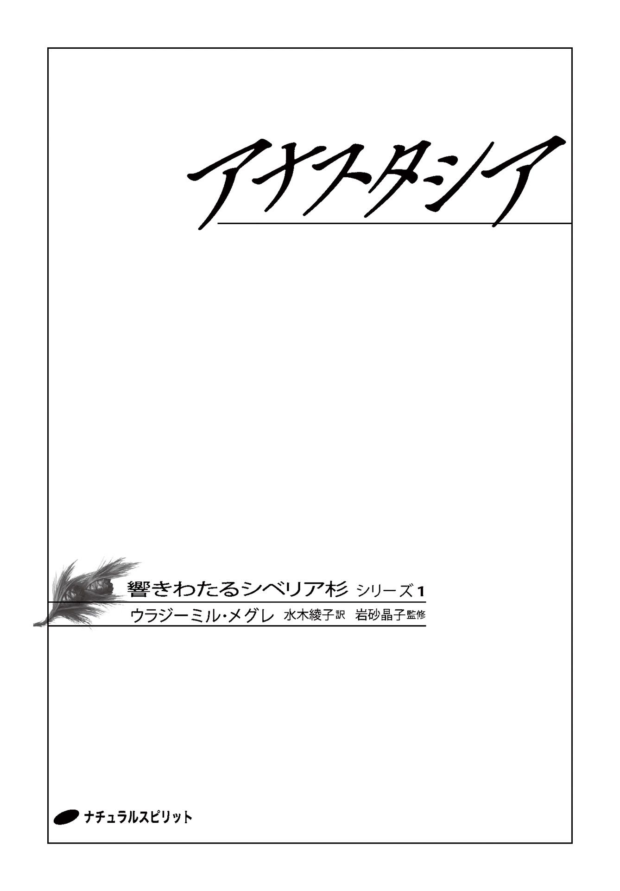
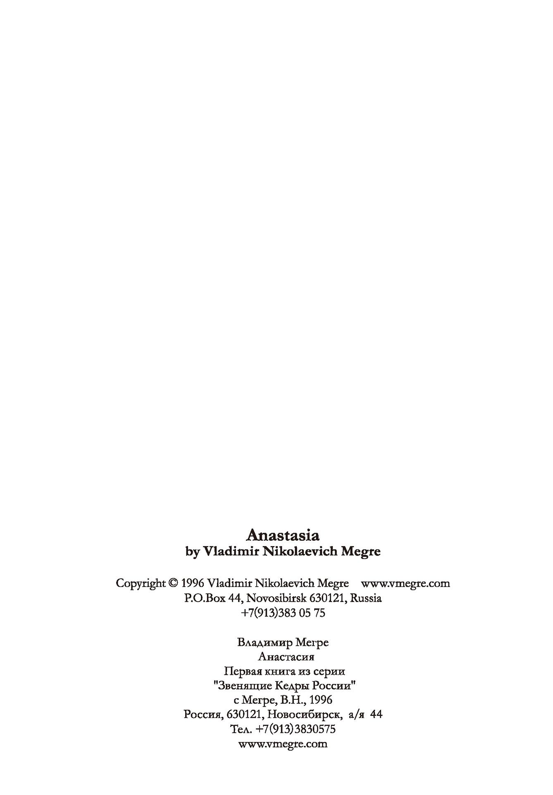
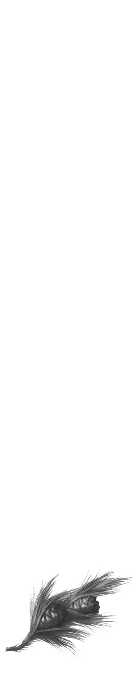

| アナスタシア: 響きわたるシベリア杉 シリーズ1 | |
| ウラジ-ミル・メグレ | |
| nachuraruspiritto (2016) | |


もくじ
アナスタシア
本文中カッコ内の＊ は訳者注。
ペレストロイカ

一九八〇年代にはじまったペレストロイカにより、人々は自分のビジネスを立ちあげることを突然許された。
ソビエト連邦ではそれまで個人の起業は法律で禁止されており、収監もありうる犯罪だったため、この決定は画期的だった。
首都やその他の大都市ではおよそ人口の三分の一にあたる人々が起業を目ざし、西欧の億万長者のような贅 を尽くした幸福な生活を、将来に夢見るようになった。
当時私が住んでいた、シベリア最大の都市ノヴォシビルスクは、首都モスクワからおよそ三千キロ離れているが、そこの住民でさえ、首都に住む人々に遅れをとるまいと、全力で自分のビジネスを立ちあげていた。
シベリアで最初に起業した人たちのビジネスはほとんどが小規模で、小売業に従事し、小さなカフェやショップを開いて顧客サービスを提供した。中古だが性能のいい機械を手に入れて半地下に設置し、流行のプラスチック製アクセサリーの製造をはじめた者は、いっぱしの実業家と見なされていた。
私は幸運に恵まれた。西シベリア河川運航会社から三隻の大型客船をチャーターできたのだ。そのうちの一隻は、レストランやバーや会議室を備えた三層の甲板をもつ船だったので、遊覧クルーズ用に用い、シベリアの起業家たちの会議もそこで開くようにした。
それより少し前、私は起業家の地域間交流協会である「シベリア協同組合」の会長に選出されていた。
「成功をものにした幸運な起業家」──私は自分のことをそう考えていたが、ひとつだけ大きな問題があった。新しくビジネスをはじめた人々にたいする一部の反感、それを嫌う風潮である。
ペレストロイカ初期の頃、ロシア社会は一見、相容れない二つの層に分かれていた。
ひとつは、自分のビジネスをもちたいと願い、資本主義社会に何ら欠陥を見出さず、西欧型モデルにのっとった社会で生活したいと望む人たちだ。
もうひとつは、国家の改革に頭から反対する老練な兵士や労働者たちである。彼らの気持ちもまた、理解しがたいものではなかった。
ペレストロイカ以前、祝日のパレードにつきものの風景は、前線からの退役軍人か、社会主義労働者の中の英雄と呼ばれる年配の男性が、勲章を胸に行進する姿だった。彼はいくつもの学校をまわり、若い青年たちに向かって語りかけた──社会主義社会に貢献してきた自分の人生は、尊敬に値する正しいものだとの確信に満ちて。
ところが、突然何もかもがひっくり返り、彼らはまちがった社会を築きあげてきたということになった。彼らは社会主義社会ではなく、資本主義社会を築きあげるべきだった。一九一七年、皇帝を追放し、翌年その一家全員を処刑したのは大きなまちがいだったというのだ。
パレードで行進していた初老の男の胸を飾っていた勲章は、もはや彼の武勲を示すものではなく、社会が必要としないものを築きあげるため、むなしくも最前線に立っていたことを証明するものとなってしまった。彼はいったい、自分の子どもや孫たちにどう向きあえばいいのか。
ペレストロイカ初期の頃は、こうした人々が集まり、あちこちで大会を開いては自分たちの主張を叫んでいた。
ある日私は、そうした大会に思わぬかたちで関わるはめになった。
その日はトルコから来た実業家たちと商談中だったが、秘書から、共産党ノヴォシビルスク地区委員会の事務所付近で有志による大会が開かれていて、起業家に敵対するスローガンを叫んでいるとの情報を得た。トルコからの一団に詫びを入れたうえで、私は仲間を連れて大会の場に乗りこむ決断をした。大会のあと、群衆がシャシリク（＊ 肉の串焼き） の屋台や売店をたたき壊しはじめるのではないかと恐れたのだ。
「服を着替えたほうがいい」と仲間のひとりが言った。「こんなスーツ姿を見られたら、ますますひどいことになる」
「そうすべきだが、時間がない」
われわれは二台の車、メルセデス・ベンツとロシアの国産車ウアーズのＳＵＶに分乗して大会に向かった。現地に着き、白のワイシャツにネクタイをしめた優雅なスーツ姿で全員車から降りた。私は白のスーツで、いかにもきざなロンドンのしゃれ男といったいでたちだ。
何をどうすべきかもわからぬまま、われわれはそこに立ちつくして大会のなりゆきを見守った。
千五百人から二千人くらいの人々が集まっていた。群衆の頭上に赤旗がはためいている。
スローガンは「われわれは断じて資本主義を認めない！」「起業家は民衆の血を吸っている！」「裏切り者を党の目的に照らして拘束せよ！」だった。
胸に勲章をつけた初老の男が、にわかづくりの演台の上に立って、怒りと苦痛に満ちた表情で演説している。
「われわれの世代は裏切られ続けてきた！ われわれの全世代が！ われわれの世代が！ われわれは塹壕 の中で血を流した。ファシストから母国を守った。空腹と闘いテントに住みながら、設備を整え工場を建設した。都市も建設した。社会主義を確立し、共産主義を夢見た」
「われわれは骨身を惜しまなかった」と、松葉杖をついた傷 痍 軍人が間合いをはかって付け加えた。
「恩給を！ 恩給を！」と年配の女性が二人、口をそろえて叫ぶ。
聴衆からの援護の叫びが、ますます演説者を奮いたたせた。
「われわれは吸血鬼とブルジョワの動きを断固阻止する。今われわれは市場で肉を買うことすらできない。彼らが自分たちのシャシリク店のために肉を買い占めているからだ。ヒュドラ（＊ ギリシャ神話に出てくる九つの頭をもつ海蛇） の巣のような彼らの売店をわれわれの力で粉砕 しよう！」と彼は挑発的に叫んだ。
それに呼応するように群衆はいっせいに叫ぶ。「粉砕せよ！ 粉砕せよ！ 粉砕せよ！」
「われわれは子どもたちのために生活を築いてきた。断じてああいう連中のためではない！」と言うなり、彼はわれわれのほうを指さした。その瞬間、そこに集まっていた人々全員がこちらを振り向いた。あたり一帯が静まり返った。群衆はわれわれに向かって身構えた。今にも飛びかからんばかりだ。
その瞬間、私はメガフォンをつかんでＳＵＶの屋根にあがり、その上に立った。何を言うべきか見当もつかなかったので、前置きなしにともかく口を開いた。
「あなたは子どもたちのために働いてきたと言われた。ここにいるわれわれは、あなたの子どもたちだ。われわれは起業家になろうと決断した。アメリカと同レベルの生活を築こうと。今は法律によりそれが許されている。
あなたがたのこれまでの働きには感謝している。しかし、あなたがたが築いた社会はわれわれに合わなかった。われわれは自分の手で、もっとちがったものを生みだしたい。もし、あなたがたがそれを破壊しはじめれば、恩給などとうていもらえなくなる。なぜなら、われわれが生みだす金が、あなたがたの恩給になるからだ。
起業家は吸血鬼ではない。起業家は国家のために、そして当然ながら自分たちのために、有益かつ賢明な道を進もうとしているのだ」
演台に立って演説していた男はメガフォンをもっていなかったので、私の演説を阻止するには大声で叫ぶしかなかった。
「見なさい！ あそこにいる！ 彼こそが人々の血を吸う連中の司令官だ！ 彼らがわれわれの食糧のすべてを奪い去った者たちだ。肉を買い占め、三倍の値段でシャシリクを売っている。わずか三日で、肉はわれわれの前から姿を消してしまった」
私はメガフォンをとり、つとめて静かな声で応戦した。「なかなか面白いことを言う先輩だ。これまでの人生を働きづめできて、たった三日分の肉しか手にできなかったと言うのか？」
人々の野次はやみ、みなが二人の論戦に耳をすました。彼らの頭は話し手がかわるたびに向きを変えたが、演台の男は私の質問には答えずに叫んだ。
「彼を、あの吸血鬼を車から引きずりおろそう。なんだ、あのかっこうは。やつがどれほどめかしこんでいるか見てくれ！」
群衆から、あらゆる物が私に向かって飛んできた。トマトのピクルスが二つと生卵がひとつ私のワイシャツに当たり、もうひとつのトマトのピクルスが私の頭を直撃した。大会を監視していた警官が、人々とわれわれの車のあいだに割りこんで列をつくった。車の屋根に立つ私に警官隊長が怒鳴った。「今すぐ車から降りて逃げろ、これ以上、彼らを押しとどめるのは無理だ」
だが、私は退却したくなかった。またメガフォンを口に押しあてて叫んだ。
「あなたがたはわが子に貧しい人生を送ってほしいのか？ なんのために闘ってきたのか？」
数人が群衆を押し分け、警官の列も破ってわれわれの車に突進し、車を揺らしはじめた。
そのとき私は──いまだになぜ自分がそんなことをしたのかわからないのだが──唐突に、レーニンを詠 ったマヤコフスキーの詩を暗 誦 しはじめた。
ときがきた！
レーニンの話をはじめよう
これ以上の悲しみが
ないからではなく
この悲しみが
あきらかな
意識された
痛みだからだ
ときがきた！
レーニンの スローガンは
うずまくつむじ風の中
枯れるほどの涙を流し
涙の池を
あふれさそうか
レーニンは
今なお生きている
誰よりもあざやかに
生きている
われわれの この旗じるしこそ
ちから
これこそが武器
群衆は驚いて凍りついた。車を揺すっていた男たちもその場に凍りつき、動きを止めて頭をあげた。その瞬間、ウオッカを積んだトラックがゆっくりと広場にそって走り、芝生を横切ってやってくるのが見えた。私も仲間も、人々にウオッカをふるまおうとそのとき決めた。
トラックが近づいてくるタイミングを見はからいながら、私は詩の暗誦を続けた。
ひとびとは小舟
陸に置き去りにされた小舟
ときを過ごせば
舷側に
よごれた 貝殻が
しがみつく
だが ある日
荒れる嵐を
つきぬけて
静かな海に流れ出で
太陽のそば
ぬくもって
海草の青
くらげの赤を
洗い去る
レーニンのように
洗いきよめる
革命めざし
さらに
はるかに行くために
ウオッカを積んだトラックは私の車の間近に来て止まり、私はトラックの荷台に跳び乗った。「先輩はわれわれを不運な人間だと思っているようだが、革命にだって合う年代、合わない年代がある」
演壇の男が再び叫びはじめた。
「だまされるな。あいつはレーニンの詩を暗誦し、われわれに考えさせまいとしている。みんなまんまとひっかかっているぞ」
私も負けていなかった。
「私は学校でこの詩を一生懸命覚えた。そして懸命に暗誦もした。われわれの世代が、先祖の大いなる志を理解していることを示すためだ。だがあなたも、われわれの志を理解しようとすべきだ」
「やつは詩を暗誦して、あなたがたをだました。やつこそが人々を食い物にしているヒュドラ、人々の血を吸う吸血鬼だ。あなたがたはなぜそこで黙って立っているのだ？ ヒュドラをぶちのめせ、ぶっつぶせ。やつはレーニンとその詩を隠れみのにしている！」
群衆の一部が叫び声をあげ、再び警官隊の列を突破しようと動きはじめた。
「私が詩を暗唱したのは、ふつうの会話をはじめるためだ。みんなこっちに来て、ウオッカを飲みながら、ロシア式に話そうではないか」
私はトラックの側板を開け、そこにあった箱の上に座ってウオッカのボトルを一本、続けてもう一本開け、小さなプラスチックのコップをいくつか並べてウオッカを注ぎ、その中のひとつを掲げてぐっと飲みほし、警官隊の警戒線を突破して車を揺らしていた男たちを見た。彼らはすでにトラックの横にいたのだ。
「どうぞ、先輩がた、一杯やりましょう。でないと、まともな話などできやしない」
男たちは、われ先にとコップを手にとった。
「たしかにそうだ。あんなに興奮しなくたって、ふつうに話せばいいんだよな」短いあごひげの男が言い、「仲間が正しいなら、話をすればいいじゃないか」と別の男がつけ加えた。ウオッカを飲んだひとりが、群衆を押さえこんでいる警官隊のほうを振り返って言った。「きみたち、もうちょっとだけ、ふんばっていてくれよ。でないと、群衆がなだれこんできてふつうの話ができなくなるからな」
「そうだそうだ。群衆相手にいったいどんな話ができる？ 彼らはただ騒音を発するだけだ」彼を支持する声が言った。
「何回も言うが、われわれはあんたを助けるよ」
「あんたは兵士たちも助けるべきだな。もう一杯くれ」
彼らは次々にコップを差しだす。私は言われるままにウオッカを注ぎたした。
「それで、ほかにどんな詩を知っているんだい？」驚くほど背の高いはげ頭の男が低音の声でたずねてきた。
「暗誦できるかって？ 学校で教わったものだけだ」と私は答えた。
「よし、学校で教わったやつをひとつ暗誦してくれ。それをおれがマイクを使って歌ってやる。酒を飲むといつも歌いたくなるんだ」
「白き帆船 ただひとつ 海の青い霧の中」と私が暗誦をはじめると、はげ頭の男は歌いはじめた。その力強い低音の声が、メガフォンで増幅され、あたりに響きわたる。
白き帆船 ただひとつ
海の青い霧の中
遠き地に何を求めて
ふるさとに何を失い
群衆が警官隊の警戒線を破った。ほとんど男だけの一団が、トラックめがけて走ってきた。
屈強なはげ頭は歌うのをやめ、どすのきいた低音で叫んだ。「列をつくって並べ！ われわれはふつうの会話をするんだ。バカ騒ぎじゃない」
走ってきた男たちは列に並びはじめた。
反対側の演台上の男は、まわりに残っている人々に向かって演説を再開した。
「あれを見なさい！ 彼は酒を飲ませて酔わせている。ご婦人がた！ 彼はみなさんの夫を酔っぱらいにしている」
群衆から非難の声が湧き起こった。そのほとんどが年配の女性たちの声だった。
私は再びメガフォンをとり、女性たちに向かって語りかけた。
「ご婦人がた、失礼をお許しください。すっかり忘れていましたが、広場の反対側に輸入のチキンレッグを積んだ車があります。起業家組合からみなさんへの贈りものです。賄 賂 ではありません。ちょっとわれわれが息抜きをして、この話し合いを続けさせてもらうためのお礼です。もちろんトラック一台では全員には行きわたりませんが、一部の方々には、ただでお持ち帰りいただけます」
大勢の女性たちが急ぎ足で、あるいは走って、チキンレッグを積んだトラックに向かっていった。
こうして、大会に集まっていた人々は二つのグループに分けられた。ひとつはウオッカのトラックのまわり、もうひとつはチキンレッグのトラックのまわりに。
いつのまにか人々は静かになっていた。私は仲間とともに車に乗りこみ、河岸に停泊中の船に向かって車を発進させた。
ウオッカを飲んでいた男たちのそばを通ったとき、誰かが「この人は悪い人じゃない、われわれはもう少しで彼の肋骨 をへし折るところだった」と言っているのが聞こえた。
船が川の停泊所につながれている間、船上のレストランは起業家たちのクラブとして使われていた。若い人から年配者までがそこに集い、ビジネスを論じ、たがいの経験を分かちあった。
ここに集うほぼ全員が、行く手にはとてつもなく素晴らしい人生が待っていると感じていたが、ときには懐疑主義者が、この輝かしい夢に冷水をかけようとしてやってくることもあった。
ある日、大会で演説していたあの男が船にやってきた。
警備員が彼の乗船を拒んだところ、彼は私と話したいと言ったらしく、私は彼に会うために外に出た。たがいに自己紹介をし、ピョートル・イワノヴィッチと名乗った彼は、われわれのクラブを訪ねていいかと聞いてきた。
「しかし、ピョートル・イワノヴィッチ、起業活動や私有財産制に抗議するなら、どうしてここに来るんだ？」とたずねると、「私は人生の不条理にたいして抗議しているんだ。あなたがた、現代のアバンギャルドに私の意見を申しあげたい。ひょっとしてあなたは、自分とはちがう意見に耳を傾けるのが恐いのか？」
会話を聞いていた仲間のひとりが、「彼をクラブに迎えて、その考えとやらを語ってもらおう。群衆を扇動 されるより、そのほうがよっぽどいい」と言った。
私は彼の意見に賛成した。
それ以後、ピョートル・イワノヴィッチはわれわれのクラブに毎週やってくるようになった。話は五分以内に終わらせるということで合意した。
彼はかつて歴史と哲学の教師だったことがわかった。船上のクラブで行なわれる彼の講演は、誰の関心も引かなかったが、彼の話を聞いていると、私はときおり、人生の意味について深く考えさせられた。
ある日、いつものように、彼はマイクの前に立ち、レストランのテーブルについている起業家たちに問いかけた。
「あなたがたはなぜ、自分が将来幸せな人間になると考えているのか？ 海の向こうのアメリカでは、人々はずっと長い間ビジネスをやってきている。アメリカにはこのロシアよりも多くの起業家たちがいる。おそらくわれわれは二十年かそこらで、今のアメリカの平均的な生活水準に追いつくだろう。しかしその二十年の間に、アメリカはさらに遠くの地点にたどりつく。ロシアにはさらに多くの起業家が生まれるだろうが、それはさらに多くの幸せな人間が生まれることを意味しない」
ペレストロイカ初期のあの頃、先陣を切った起業家たちは、裕福な暮らしのみを夢見ており、人生の意義について考えることはなかった。
響きわたるシベリア杉
一九九四年の春、私は船三隻を繰りだして、シベリアのオビ川沿いに、ノヴォシビルスクから北極圏の町サレハルドまで下る四カ月の交易の旅に出た。目的は、極北地域と通商関係を結ぶことだった。
この遠征はマーチャント・キャラバンと名づけられた。三層の甲板をもつ大型船にキャラバンの本部をおき、シベリアの起業家たちが扱う商品の陳列コーナーや店舗も設けた。
私の事務所兼居室も、当時としてはかなり凝 ったつくりで整えた。商談をする際の雰囲気づくりにも気を配り、二つの一等船室をつないで瀟 洒 な家具類も備えつけた。
このキャラバンは北へ三千五百キロ航行し、比較的大きい都市であるトムスク、ニージネヴァルトフスク、ハンティ・マンシースクに寄航してサレハルドに到着するが、途中、船でしか行けないような小さな集落にもわずかな時間だけ寄港する予定だった。
冬、オビ川は凍結し、都市とシベリアの集落に住む人々との接触は皆無となる。
昼下がりにはよく、こういった小さな集落の岬にキャラバン船を着けた。乗組員は汽笛を鳴らし、上甲板に取りつけた大きなスピーカーから大音響で音楽を流して住民を誘いだす。住民に商品を売り、狩人や漁師たちから、貴重な魚やフォートルベリーや干しキノコや毛皮など、シベリアのタイガがもたらす恵みの品々を買い、さらに彼らと永続的な取引関係を結ぶための交渉もした。
原則として、船の航行は夜間に行なうことにしていた。悪天候が航行を阻む場合には、本部のある大型船を一番近い集落の岬に着け、そこに住む若者たちのためにパーティを開いた。彼らにとってはめったにない催しだった。小さなクラブや劇場などはだいぶ前にすたれ、文化的催しはほとんどなくなっていたのだ。
この船にたいする彼らの反応がどんなものか、説明するまでもないだろう。真っ白な美しい船が突然向きを変えて自分たちの村の河岸に錨 をおろすのだ。文明の地から数千キロも離れたシベリアの村に住む人々にとって、驚嘆に値する出来事だった。
船にはレストランがあり、バーがあり、円柱に彩られたダンスホールもあった。村のすべての若者、そして大人たちも、こぞって船上にやってきて、三時間のクルーズを楽しんだ後、河岸に立って手を振り、この白く美しい船を見送るのだ。
大きな町から遠くなればなるほど、そして北極圏に近くなればなるほど、オビ川の幅は広大になり、双眼鏡をのぞけば、岸辺に野生動物が見えてくる。ときには二十四時間の航行中、ほんの小さな集落ただひとつにさえ遭遇しないこともあった。川だけが、何キロにもわたるこの地域の唯一の交通幹線であり、その水ぎわに沿って、延々とタイガが続いていた。
私は、この広大な針葉樹林帯のどこかに、私の全人生を変える出会いが待っているなどとは、そのとき夢にも思っていなかった。
ある日、ノヴォシビルスクに戻る途中でのこと。私はキャラバン本部のある船を、小さな住居がまばらに数軒見えるひっそりとした村に係留させた。乗組員の休息を兼ねた散歩のためと、村の人たちに船が運んできたさまざまな品物や食糧を販売し、われわれもまたタイガに育つ自然のままの植物や川でとれた魚を安く買うため、三時間ほど停泊する予定だった。
私も少しその村を歩いてみようと思いたち、タラップを降りていくと、船に向かってタラップを上ってくる村の人たちから少し離れて、脇のほうに黙って立っている二人の老人の姿が目にとまった。
白髪まじりのあごひげを生やした年上と見られる老人は、かかとまで届く長いズック地のマントをはおり、頭をすっぽりとフードでおおっている。どう見ても奇妙なかっこうだ。
二人の前を通り過ぎがてら、私はこんにちはと軽く挨拶をした。年上のほうはわずかにおじぎを返しただけだったが、年下の老人のほうが話しかけてきた。
「こんにちは。あなたの善なる目的が実現しますように。あなたがここの責任者ですか？ みなに命令を下せるお立場ですか？」
「そうですね、目的にかなった命令であれば」と私は答え、そのまま行こうとしたが、その老人は話をやめようとしない。
聞いてみると、彼は私に五十人ほどの男たち（船の乗組員は総計六十五人である）を貸してほしいと言っているのだった。
男たちを、船が停泊しているその地点からタイガの中を二十五キロほど奥に入った場所まで連れていきたい、そこには──彼の表現によれば──かすかな音が響きわたるシベリア杉の木、リンギング・シダーがあって、それを伐採してほしいのだそうだ。
そのシベリア杉は高さが四十メートルもあるので、それを船まで運べる大きさに切り分け、ひとつ残らず運んでほしいと。あとでそれをさらに小さな木片に切って、各自、ひとつを自分のために、残りを家族や友人やそのほか誰でも、贈りものとしてあげたい人にあげる、そうできるようにしてほしいというのだ。
「それは特別なシベリア杉でね」と老人は言い、その木片について熱心に説明しはじめた。
「木片はひもに通して胸にさげる。胸にさげたまま、裸足で草の上に立ち、それを左手で胸に直接押しつける。すると一分後に心地よい暖かさがその木片から出てきて、かすかな震えが体を通り抜ける。ときどき気のむいたときに、木片の胸に面したほうを両手の親指で支えて、反対側の表面を指先で磨 くようにするといい。このリンギング・シダーの木片をもつと、三カ月後には心に感ずる幸福度が格段に増し、あらゆる病からも解放される」
「エイズからも？」と私は、エイズという病気についての情報を簡単に伝えてから聞いてみた。
「あらゆる病から」と、老人は自信たっぷりに言いきった。
彼の話によれば、病の癒 しなどは初歩的なことで、もっと大事なことは、この木片をもつ人はさらに心が広くなり、より幸福感に満たされ、より有能になることなのだそうだ。
シベリアのタイガに群生する杉の癒しの力については聞いたことがあったが、それが人の感情や能力にまで影響するというのは、とうていありえないことに思われた。
「たぶん彼らはそのシベリア杉を私に売りつけて、ひともうけしたいのだろう」私はそう思ったので、彼らに断念させようとして言った。
「『外の世界』では、女性たちは人に好かれようとしてゴールドやシルバーのアクセサリーを身につける。小さな木の切れ端など買う人はいない。だから私はその杉の木の値段がどうあれ、あなたがたのお話をお受けするつもりはありません」
「彼女たちは何も知らずにそういったものを身につけている」老人は話をやめなかった。
「ゴールドなど、このシベリア杉の小さな一片にくらべたら塵 に等しい。だがわれわれは、そのためにお金をもらうつもりはない。干しキノコも差しあげるが、われわれは何もいりません」
高齢者にたいする敬意から、私はそれ以上の議論を避けて言った。
「そうですね、その木片に熟練した彫刻師が格別に美しい模様を彫りこんだら、身につける人もいるかもしれません」
すると、老人は執拗 にくいさがってきた。
「シベリア杉の木片に彫刻することもできるが、彫るよりも磨いたほうがいい。自分で、その人の魂がそう願ったときに自分の指で磨くのがいちばんいい。そうすると、杉の木片はいっそう美しくなる」
この言葉が終わるや、年下のほうの老人は、古びた上着のボタンをすばやくはずし、下のシャツのボタンもはずして、首からさげている木片を見せてくれた。
やや楕 円 がかった形で、表面がふくらんで凸状になったものがぶらさがっている。紫、深紅色、赤褐色と多様な色彩が神秘的な線画を描き、流れるような木目が細い小川のように見えた。
美術館を訪れる機会はときたまあるが、私は決して芸術作品の通ではない。世界的傑作と言われる作品を見ても、特別な感慨を覚えたこともない。だが、この老人の胸にぶらさがっているこれは、ロシアで最も大きいトレチャコフ美術館を訪ねたときよりもはるかに強烈なものを私の中に呼び起こした。
「何年ぐらい、この杉の木片を磨いてこられたのですか？」私は老人にたずねてみた。
「九十三年」
「お年はおいくつで？」
「百十九歳」
私は彼の答えを信じなかった。どう見ても彼は七十五歳くらいにしか見えなかった。
私が疑っていることに気づかないのか、あるいは気づいても無視しているのか、老人はしだいに興奮を隠せない様子となり、話を続けた。
杉の木片は、それを身につける本人の指で磨かれつづけると、三年で、誰が見ても美しいものになる、そう私に信じさせようと必死だった。三年たったあとも、木片はますます美しくなり、とくに女性には最高の装飾品となる。木片を身につけた人の体からは、やさしく芳 しい香りがただよい、それは人工的につくりだした香りとは比較にならないと彼は力説した。
たしかに言われてみると、この二人の老人のまわりには何とも表現しがたい心地よい香りがただよっている。喫煙者である私の嗅覚は鈍くなっているはずなのだが。
この二人にはもうひとつ、奇妙な点があった。話の内容も言葉づかいも、この辺 鄙 な北方の住民とは思えない、聞き慣れないものだったのだ。私はそれにふと気づいたのだが、そのせいか、彼らが語った言葉のいくつかは、その抑揚 に至るまで、今でも鮮明に憶えている。
老人はさらに熱をこめて語りだした。
「神は宇宙のエネルギーを貯蔵するために、シベリア杉を創られた。
愛に満ちた人間は、あるものを放射する。その放射はその人の頭上を運行する惑星に一秒にも満たない速さで届き、瞬時に反射し、再び地球に戻ってきて、生きとし生けるものすべてに命を与える。
太陽は人の放射のすべてをも超える波長を反射することができる星のひとつ。
光の勢力が発する放射だけが、人から宇宙へと飛んでいく。そしてあらゆるものに益となり恵みとなる放射のみが、再び宇宙から地球へと戻ってくる。
邪悪な感情の影響下にある人間からは、闇が放射される。この闇の放射は上昇できず、地中深く降下していく。そして地球の中心部に到達すると、はね返って、火山の噴火や地震や戦争となって地表に戻ってくる。
はね返ってくる闇の放射の究極の作用は、発した人間の内なる邪悪な感情をじかに強化することだ。
シベリア杉は五百五十年生きる。その何百万という針状の葉は、昼も夜も、あらゆる波長の光のエネルギーを捕らえて蓄積していく。その生涯が終わるまでの長い間に、光のエネルギーを反射する無数の天体が、杉のこずえの上を通り過ぎていく。
たった一本の小さなシベリア杉でさえ、人間が地球でつくりだすエネルギーをすべて合わせたよりもずっと多く、人間に益となるエネルギーを内蔵している。
シベリア杉は人が放射したエネルギーを宇宙から取りこみ、貯蔵し、適切な時期に再び宇宙に返す。その時期とは、宇宙にエネルギーが足りなくなったとき、つまり人間と地球上に生きるすべてのものがエネルギー不足にさらされる恐れのあるときだ。
めったにないことだが、この蓄積してきたエネルギーを宇宙に返せないでいるシベリア杉に出会うことがある。
五百年生きると、シベリア杉の木は独特の音を響かせるようになるが、静かに音を響かせることで人間に語りかけている──自分を切り倒して、蓄積したエネルギーを地球のために用いてほしいと。
三年間、鳴り続けてそのサインを出しつづける。その間に人間との接触がないと、自分の中に貯蔵してきた宇宙からのエネルギーを人間に直接与えるチャンスを失う。そうなると、その木は自分自身の中でそのエネルギーを燃やしはじめる。この拷問 のような苦しみに満ちた燃焼と死にゆくプロセスは、二十七年間続く。
つい先日、われわれはこういうシベリア杉に出会った。その木の鳴らす音が、非常に小さくかすかなものだったので、これは鳴りだしてから二年はたっていると判断した。その木は、残された期間を少しでも延ばそうとして、できる限り小さな音を出していたのだ。
残された時間は一年。それゆえに、何としてもその木を切り倒して、人々に配らなければならない」
老人の話は長かったが、私はいつしか引きこまれ、聞き入っていた。
この奇妙なシベリア人の自信に満ちた静かな声は、しだいに興奮の度を増し、それに合わせて彼の指先は、まるで楽器をつまびくように、胸にぶらさげた杉の木片を小刻みにすばやく磨くのだった。
岸辺は寒く、川面から初秋の風が吹きよせてくる。帽子をかぶっていない老人の頭に冷たい風が吹きつけ、白髪まじりの髪を乱れさせていたが、古びた上着とシャツのボタンをはずしたまま、指先は、風にさらされた胸にぶらさがる杉の木片を磨きつづけていた。彼はただ必死に、その杉にこめられているすべての意味を説明しようとしていたのだ。
従業員のリディア・ペトロフナが私のところにやってきて、すでに全員が乗船して出発の準備も完了し、私と老人の会話が終わるのを待っていると言った。私は老人二人に別れの挨拶をし、急いで乗船した。
私が彼らの提案を受け入れなかったのは、二つの理由からだった。ひとつは、船の旅程に遅れが生じるし、三日間をまるまる失うこと自体、大きな損失につながるからであり、もうひとつは、老人の語ったことすべてが迷信だとしか思えなかったからだ。
翌朝、企画会議のときに、私はリディア・ペトロフナが胸にかけた杉の木片を指先でいじっているのを見て驚いた。あとで聞くと、私が船に向かうのを見届けながら、彼女は少しあの場にとどまっていたというのだ。
彼女が何げなく老人たちのほうに目をやると、私と話していた老人が、船に向かって歩きだした私の後ろ姿を、動揺した悲しげな目で追い、年上の老人のほうを見あげて、悲痛な声で訴えていたのだそうだ。
よく聞いてみると、彼はこう繰り返していた。「どうしてこうなんだ？ どうして彼らはわからない？ 彼らにはいったいどんな言葉が通じるんだ？ 私は彼に信じさせることができなかった。失敗したんだ！ 私の話は何も通じなかった！ まったく何も。どうしてだ？ 教えてくれ、父さん」
年上の老人は息子の肩に手をおいて、静かに答えたという。「説得が十分でなかったからだよ。だから彼らは理解しないのだ」
「私がタラップを上ろうとしたとき」リディア・ペトロフナは続けた。「あの老人が、突然走りだして私を追いかけてきました。彼は私の腕をつかんで、タラップを引き戻し、岸辺の草むらに降りたんです。
彼は急いで杉の木片を吊るしたひもをポケットから取りだして私の首にかけ、私の手をとって、私の手で木片を胸に押しつけるようにしました。その瞬間、全身に身震いのようなものを感じたのです。彼があまりにすばやくそうしたので、私は一言も発する間がなかった。
タラップを駆けあがる私の背後で彼は、『安全なよき旅を！ ご多幸を！ どうか、来年また来てください！ 万事うまくいきますように。お待ちしています！ 安全なよき旅を！』と叫んでいた。
船が出航したとき、その老人はずっと手を振っていました。でも、そのあと崩れるように草の上に座りこんでしまった。私はずっと双眼鏡で彼らを追っていました。あの、あなたに話をしていた、私に杉の木片をくれた老人が、草の上に座りこんで肩を震わせていて、長いあごひげをはやした年上のほうの老人がそばにかがみこんで、頭をなでているのがはっきり見えました」
＊ ＊ ＊
そのあとの航行中、私は帳簿のことや今回の旅の終わりを祝う晩餐会のことなど、商売上の関心事に没頭していたので、あの奇妙な年老いたシベリア人たちのことをすっかり忘れていた。
船がノヴォシビルスクに戻ったとき、私の体は突然の激しい痛みに襲われ、病院で十二指腸潰 瘍 ならびに胸部脊椎骨の骨軟骨症と診断された。
居心地のいい病室の静けさの中で、私は多忙な日々のざわめきから遮断された。病院の贅沢な個室で過ごす時間は、私にとって四カ月にわたる遠征の成果を分析し、これからの企画を練りあげる絶好の機会だった。
だが、なぜか私の頭には、奇妙な老人たちと彼らの言葉ばかりが浮かんできて、それ以外のもろもろはすべて後方に退いていた。
私は病院スタッフに頼んで、杉の木に関する文献を取り寄せてもらった。
高齢のシベリア人から聞いたことと、文献に記されていることを見くらべるうち、私は彼の語っていた内容にあらためて驚嘆を覚え、それを信じるようになっていった。彼の言ったことの一部が文献と合致しているのなら、そのすべてが本当なのではないか、と。
民間療法に関する書籍には、杉の木の癒しの特性についてたくさん書かれていた。
たとえば、「杉はその針状葉から樹皮に至るまですべての部分が、高い癒し効果をもつ」「シベリア杉材は見た目も美しく、熟練した名匠の手にかかれば、優れた木彫品となり、家具となり、楽器の共鳴板にもなる」「針状葉の部分は、高レベルのフィトンチッドを含み、汚染された大気を浄化する」「杉の木材は、特有の芳しいバルサム樹のような香りを放つので、家の中に小さな木片をひとつおくだけで蛾をよせつけない」などなど。
一般向け科学雑誌には、北方に育つ杉は南方に育つ杉よりも、癒し効果においても木材としても品質が著しく高いと記されている。
ドイツの博物学者ピーター・シモン・パラスの一七九二年発行の著書には、シベリア杉の実には男らしさや若さを取りもどす働きや、体の各器官の抵抗力を増して、人体を多くの病から守る働きがあると書かれている。
さらに、直接あるいは間接的に、杉にまつわる不思議な現象が、歴史上たくさん起こっているということも、さまざまな文献に記されていた。
ひとつ例をあげると、次のような話がある。
グレゴリー・ラスプーチンは農民の出で、読み書きがわずかしかできなかった。
一九〇七年、五十歳のときにシベリア杉の群生する人里離れた村から、首都ペテルスブルグにやってきて、皇帝に謁見 する機会を得たが、的中する予言で皇帝とその家族を驚愕させた。
彼はまた、並はずれた体力、活力の持ち主で、人々が彼の暗殺を試みたときでさえ、銃弾を蜂の巣状に受けた体でまだ生きていたという逸話がある。これは彼がシベリア杉の生い茂る地域で杉の実を食べて育ったからではないだろうか。
当時のジャーナリストたちは彼の驚異的なスタミナについて、次のような記事を書いた。
「五十歳という年齢で、彼は飲めや歌えやの酒宴を正午にはじめ、午前四時まで飲みつづける。どんちゃん騒ぎと酩酊 状態から抜けだしてまっすぐ教会の早朝祈 禱 会 に行き、そこで朝の八時まで立ったまま祈る。それから帰宅し、お茶のあと、何ごともなかったかのように、午後の二時まで来客の応対に忙しい時間を過ごす。それから、ご婦人方数人を選び、彼女らを従えて温泉浴場に出かけていき、そのあと、郊外のレストランへと車を走らせる。そこで彼は前の晩と同じことをくり返すのだ。ふつうの人間はこのような日課をこなせるわけがない」
しかしながら、どんな文献よりももっと強烈なものがあった。聖書である。誰でも手軽に確認できる聖書によって、私の疑いは一掃された。
旧約聖書のモーセ五書のうちのひとつ、レビ記の十四章に、らい病の人を清める方法が記されているが、その第四節には、なんと、シダー、杉を用いて清めるとはっきり書かれているのだ。さらには、住居のデトックスの方法までも書かれている。
こうしてさまざまなソースから集めた事実や情報を比較するうちに、世界的に知られる数々の奇跡も、このシベリア杉のもつ不思議な力の前では色あせて見えてきた。人々の心をかき乱してきた数々の不思議な現象も、響きわたる杉の木、リンギング・シダーの神秘にくらべれば、ちっぽけなことに思えてきたのだ。
もはや私はその神秘の存在を確信していた。科学雑誌と旧約聖書が疑念を消し去ったのだ。
旧約聖書には杉の木が四十二回出てくる。石板に記された十戒を人類にもたらしたモーゼは、おそらく旧約聖書に記されていること以外にも、杉の木に関してもっと多くを知っていたのではないだろうか。
われわれは自然界にあるさまざまな植物が人間の病を癒す力をもっていることはすでに知っている。杉のもつ癒しの特性は、科学雑誌や、パラスのような権威ある科学者によって確証されているが、それが旧約聖書にも記されているのだ。
旧約聖書には杉を特別な木とする記述が多く見られるが、ほかの木についてはそうした記述はまったくない。聖書は、自然界に存在するもののなかでも、杉の木が最も驚嘆すべき力をもつもののひとつであることを示しているのではないか。
だとすると、杉とは何なのだろう。これはあらゆる病を癒す薬の複合体、つまり万能薬のようなものなのか？ もしそうなら、それをどのように用いるべきなのか。なぜあの老人たちはさまざまな杉の中から、リンギング・シダーを選んだのか。
疑問はそれだけではない。旧約聖書には、杉について謎めいたことが記されている。
ソロモン王がエルサレムにかの有名な杉の神殿を建てるまでのいきさつである。
ソロモン王は神殿建設のために必要なレバノン杉を、ツロの王ヒラムをとおして入手し、そのお返しに、ガリラヤの地にある自分の王国内の二十もの町をヒラム王にあげたと記されている。信じがたいではないか！ いくら貴重で最良の品質とはいえ、しょせん建築資材である。それと交換に、二十もの町をあげてしまうとは！
さらに、ソロモン王はヒラム王にさらなるお礼として、杉の木を切り出すヒラム王のしもべたち、つまり、「木を切るに巧みな者たち」への賃金を支払い、ソロモン王のしもべたちを彼らの見習いとして一緒に働かせると約束したとある。ソロモン王がレバノン杉にたいして抱いていた思いの強さがはっきりわかる場面だ（＊ 「列王記上」第五章六節） 。
ところで、「木を切るに巧みな者たち」とはいったいどんな人たちなのか。彼らは何を知っていたのか。
今でも、人里はなれた奥地に、建築用の優れた木を選ぶ特別な技能をもつ老人がいるという話を聞くことがある。だが、三千年以上前のその頃は、誰もがそういう能力をもっていたのではないか。にもかかわらず、何か特別な能力をもった者が選ばれているのだ。こうして神殿は建てられ、そこで礼拝が捧げられたが、「祭司たちは雲のために立って仕えることができなかった」と記されている（＊ 「列王記上」第八章十一節） 。
いったいそれはどんな雲だったのか。どこから来て、どのように神殿に入ってきたのか。それは何なのか。エネルギーなのか、スピリットなのか。いったいどういう現象だったのか。杉とどんな関係があるのか。
リンギング・シダーは、ある種のエネルギーの貯蔵庫になっていると老人たちは言っていた。レバノン杉とシベリア杉のどちらがより強力なエネルギーをもっているのだろう。
科学者パラスは、杉の癒しの特質は、その生育地域がツンドラの森との境界線に近づけば近づくほど増大するとしている。この説によればシベリア杉のほうが強力ということになる。
聖書には「木はその実によってわかるからである」（＊ 「マタイによる福音書」第十二章三十三節） とある。これもまたシベリア杉を指して言っているのではないか。
今まで誰もこのことに気づかなかったのだろうか。誰もこれらの事実をくらべあわせて考えることをしなかったのだろうか。旧約聖書と、十九世紀の自然科学、そして現代の科学は、杉に関して見解が一致しているのだ。
ロシアの宗教家、エレナ・イワノヴナ・レーリッヒは、著書『リビング・エシックス』（生きた倫理）の中で、次のように述べている。
「杉の樹脂を入れた聖杯はかなり古くから用いられており、古代コラーサーン（＊ 現在のイラン北東部） の王たちが清めの儀式をするときに用いていた。
ドルイド教（＊ キリスト教伝来以前に古代ガリアやケルト族の間で信仰されていた） の僧たちも、杉の樹脂を入れた聖杯を用いており、それは『命の聖杯』と呼ばれていた。のちに霊的な気づきが失われてから、血の杯に代わったのだ。
ゾロアスター教の火の崇拝も、聖杯の中で燃える樹脂を用いて行なわれていた」
こうした杉の特性やその用い方について、先祖たちがもっていたさまざまな知識の中の何が今日まで伝えられてきたのか？ 何も受け継がれてこなかったのか？ あの年老いたシベリア人たちは杉について何を知っているのか？
そんなふうに思いめぐらすうち、突然、何年も前のことが記憶の表面に浮かんできて、鳥肌が立った。そのときはさほど深くは考えていなかったのだが、今にして思えば──。
ペレストロイカ初期の頃、シベリア起業家協会の会長を勤めていた私は、共産党ノヴォシビルスク地区委員会から、西側大企業の著名な経営者を迎えての会議があるので、それに参加するよう要請を受けた。その人は自国政府から推薦状を持参しているとのことだった。参加したのは、起業家数人と地区委員会のスタッフだった。
西側の著名な経営者というその人は、頑強そうな、見るからに東洋的な人で、個性的な、独特の雰囲気をただよわせていた。頭にターバンを巻き、指には高価な指輪をいくつもはめていた。
われわれはいつもの会議のように、さまざまな分野での協力関係を模索する話し合いをしたのだが、とりわけ思い出すのは、彼が、「われわれはあなたがたから杉の実を購入することを考えている」と言ったときのことだ。
彼はこう言った瞬間、あきらかに緊張を隠せない様子で、そこにいた起業家たちに鋭い視線を走らせながら、反応を観察していた。私は、なぜ彼の態度がそんなふうに突然変わったのかを不思議に思ったので、そのときのことをよく憶えているのだ。
公式の会議が終わったとき、ロシア人の通訳が、その西側からの客人と一緒に私のところにやってきた。通訳が言うには、彼が私と話したがっているというのだ。
話を聞いてみると、新鮮な杉の実を自分のところに手配する仕事を内密に私に依頼したいという。それを受けてくれるなら、公の価格に加えて、かなりのパーセンテージの金額を私個人に支払うというのだった。杉の実はトルコに送ってほしいと。彼らはそこで何かのオイルを製造していると言い、私は少し考えさせてくれと答えてその場は終わった。
私は彼らがつくっているというオイルが何なのか探ることにしたのだが、意外にも容易に突きとめられた。世界標準であるロンドン市場で、杉の実のオイルは一キログラムあたり五百ドルもすることがわかったのだ。いっぽうのわれわれは、杉の実一キログラムにたいして、二ドルないし三ドルで取引させられようとしていたわけである。
私はワルシャワにいる知人の起業家に電話をして、この杉の実オイルを直接顧客に販売する方法はないか、さらに、オイルを抽出する技術を見つけられないかとたずねてみた。
一カ月後、回答がきた。「解決策は見つからなかった。抽出技術にもアクセスできない。それに、この問題については、西側諸国ですでに大きな関心をもった集団が動いているので、忘れたほうがよさそうだ」というものだった。
そこで私は、古くからの友人で、ノヴォシビルスク消費者協同研究所に所属する研究者を訪ね、購入した杉の実を提供して研究を依頼し、研究費を支払った。そしてついに、この研究所の実験室で、杉の実のオイル約百キログラムが抽出されたのだ。
さらに私が雇った研究者たちは、記録文書を調べて次のような新たな事実を突きとめた。
「革命以前と革命後も少しの間、『シベリア協同組合』と呼ばれる組織がシベリアにあり、杉の実のオイルを含めた種々のオイルの商売をしていた。彼らは、ハルビン、ロンドン、ニューヨークなどに立派な事務所をもち、西側の銀行に巨額の金を預けていた。革命後、この組織は解体され、多くの会員が海外に移住した。
ヴォルシェビキ政府の一員であるレオニード・クラーシンが、このかつてのシベリア協同組合の長に会いに行き、ロシアに戻るよう提案したが、彼は国境を超えた外側にいるので、ロシアを助けるつもりはないと答えたという」
さらに、記録文書には、杉のオイルはシベリアのタイガにある多くの村で、木製の圧搾機でつくられていた、圧搾機は必ず木製でなければならないと記されており、また、杉のオイルの品質は、その実が収穫され、加工される時期によって決まるとも記されていた。その時期がいつなのか、記録からも、研究所での研究からも特定できず、謎のままだった。
杉オイルの癒しに似た性質をもつものはほかに存在しない。海外に移住した人間が、このオイルの秘密の製造法を西側の誰かに伝えてしまったのだろうか。
この強力な癒しの杉の実はシベリアで育ち、オイルの製造はトルコで行なわれているというのはどういうことか。そもそもシベリアで見られる多種多様な杉は、トルコには存在しない。
友人であるワルシャワの起業家は、何を指して西側の集団と言ったのだろう。どうしてこの問題を追及してはいけないのか。その集団とやらが、並はずれた癒しの力をもつ産物をシベリアのタイガからもちだしているのではないか。
何百年、何千年にもわたって認められてきた驚異的な癒しのオイル、その貴重な財産を国内に所有していながら、なぜわれわれは西側の医薬品に何百万ドル、いや、何十億ドルもの金を支払い、分別もなくそれを飲みこんでいるのか。
なぜわれわれは先祖がもっていた知識を失ってしまったのか。遠い先祖ではない。われわれと同じ世紀に生きた近い先祖もその知識をもっていたのだ。
聖書については言うまでもない。杉にまつわる驚異的な出来事は、三千年も前からここに記されてきたのだから。
いったいどんな集団が、われわれの記憶から、先祖たちの知恵をぬぐい去ろうと執拗に働きかけてきたのか。それだけではない、彼らは、われわれがこの問題に鼻を突っこむのを阻止しようとし、すべてを消し去ることに成功してきたのだ。
怒りがこみあげてきた。さらに、薬局で杉オイルが輸入品のパッケージで売られているのを見つけたときには、その怒りが頂点に達した。三十グラムの小瓶をひとつ買い、成分を調べたところ、オイルはほんの二滴だった。残りは薄めた化学物質だったのではないだろうか。消費者協同組合の研究所で製造したものとはくらべものにならない、ひどいしろものだった。このたった二滴のオイルが、なんと五万ルーブルで売られていたのだ。もし、これを海外から買わずに自国で販売したら？ シベリアに住むすべての人の暮らしが、このオイルだけで豊かなものになるはずだ。
われわれは不覚にも、先祖の知恵を忘れ去り、自ら貧困に陥ったことを嘆いてすすり泣いているのだ。
よし、まだ何か取り戻せるはずだ、と私は考えた。オイルの製造を自ら手がけて、私の会社を大きくしよう、と。
私はオビ川を北へ下る遠征をもう一度やろうと決断した。今回は遠征本部のある大型船、パトリス・ルムンバ（＊ アフリカ独立運動の旗手、コンゴ共和国初代首相の名前） だけで行く。船倉にさまざまな商品をつめこみ、スクリーニング・ルームを店舗として使えるように整備した。
乗組員を新たに採用しなければならなかった。今回は会社の従業員を連れていくことはできないと考えたからだ。私がほかのことに気を散らしている間に、会社の業績は悪化していたのだ。
ノヴォシビルスクを発ってから二週間後、警備員たちがリンギング・シダーについての会話を耳にしたと報告してきた。彼らによれば、新しく採用したメンバーの中に、おだやかに言えば、「変わった人たち」がいるというのだ。
私は乗組員と個別に面接し、これからはじまるタイガの奥地までの行程と仕事について話をした。それを聞いて、快諾する人もいたが、いっぽうで、これは労働契約書にはないと言って、相当額の報酬を別途要求してくる人もいた。心地よい船の上で過ごすのと、タイガの中を二十五キロ行軍して重い荷物を持ち帰るのはまったく別物というわけだ。
その頃には、資金は底をつきはじめていた。と言って私は杉を売ることは考えていなかった。そもそもあの老人たちは、杉は与えるものだと言ったのだ。私は、大事なのは杉そのものより、オイルを抽出する秘策だと思っていたし、それに関するあらゆる情報を見つけだすことに関心があった。
そうこうするうちに警備員の情報から、私はどうやらつけられているようだと確信するにいたった。とくに私が河岸で過ごすときが要注意だった。だが、その尾行の目的は不明だし、背後でどういう連中が動いているのかもわからない。
私はどうすべきかを考え抜いた末、すべてを台無しにしないよう、なんとしても一挙に裏をかかねばならないと考え、あることを決断した。
出会い
私は誰にも理由を言わず、前年に老人たちと出会った場所からさほど離れていないところで船を停止させた。船長には販売計画にそって予定どおり航行を続けるよう指示し、ひとりで商船を降り、小型のモーターボートで集落へと向かった。
村人の助けを借りれば、響きわたるシベリア杉、リンギング・シダーについて話してくれた二人の老シベリア人を見つけだせるだろう。その杉を自分の目で確かめ、可能な限り安い値で船に持ち帰る交渉もできるはずだ。
人けのない河岸の岩にボートをつなぎ、近くにいくつか小屋があったので、そこへ向かって歩きだそうとしたが、ふと見ると女の人がひとり、土手の上に立っている。彼女から何か情報が得られるかもしれない、私はそう思って近づいていった。
その女性は、着古した感じのキルトの上着に長いスカート、靴はガロッシュをはいている。北部の奥地に住む人々が春や秋に愛用する、いわゆるゴム長靴だ。頭に巻いたスカーフが額や首まで完全に覆っているので何歳ぐらいなのか見当がつかない。私は彼女に挨拶し、前年にここで会った二人の老人について話をした。
「去年、あなたとお話したのは、私の祖父と曾祖父よ、ウラジーミル」
私は驚いた。
彼女の声は若く、言葉づかいは正確で、ためらうことなく「あなた」という親しげな呼び方をして、しかも私の名前を口にしたのだ。
私は老人たちの名前を思い出せず、たがいに名乗りあったかどうかも憶えていなかったが、彼女が私の名を知っているのだから、きっと名乗ったのだろうと考えた。そして、こちらも親しみをこめて「きみの名前は？」と、たずねてみた。
「アナスタシア」と彼女は答え、片方の手を、まるで甲にキスを求めるかのように差しだした。
キルトの上着とゴム長靴といういでたちで、さびれた河岸に立つ田舎女が、まるで社交界の貴婦人のようなしぐさを見せたのが、私にはおかしかった。差しだされた手を取って握手したが、もちろんキスはしなかった。
アナスタシアはきまり悪そうな笑みを浮かべ、タイガの中の、彼女の家族が住むところに一緒に行こうと提案した。
「タイガの中を二十五キロ歩くの。いいかしら？ ウラジーミル」
「少し遠いね」と私は答えたが、心の中ではあれこれ考えていた。
「タイガの中の道なき道を二十五キロも歩くなど、容易なことじゃない。護衛をひとり連れていくべきだが......船は出てしまったし......いまさら連絡のとりようもない」
時間を無駄にしたくなかったので、私は護衛なしで行くことにした。
しかし、ここに来た目的は、はっきりさせておかねば。
「響きわたるシベリア杉、リンギング・シダーを見せてもらえるかい？」
「ええ」
「きみはその木について何でも知っていて、私に教えてくれる、そうだね？」
「知っていることをお話しするわ」
「わかった、それでは出発しよう」
道すがら、彼女がこの人里はなれたタイガに住んでどれくらいになるのかをたずねてみた。
アナスタシアの話では、彼女の家族やその一族は先祖代々、数千年前からシベリア杉の森に住んでいるのだそうだ。
彼らが文明社会の人々と接することはめったになく、ときたま接触するときも、自分たちの住む場所で会うことはしない。狩人や他の集落からきた人間のような身なりをして村まで出かけていくそうだ。
アナスタシア自身は二つの街、トムスクとモスクワに行ったことがあると話してくれた。それぞれ一日ずつで、一泊もしなかったらしい。街に住む人々の暮らし方について、自分の考えていることがまちがっていないかどうかを確かめたかったのだそうだ。
その旅のために彼女は木の実や干しキノコを売ってお金をため、旅行に必要なパスポート（＊ ロシア国民は国内を移動するさいに国内用パスポートを必要とする） は村の婦人から借りたと言っていた。
アナスタシアは、自分の祖父と曾祖父が、癒しの力をもつリンギング・シダーを多くの人に配ろうとしていることに反対なのだそうだ。なぜかとたずねると、この杉の小さな木片が、善行を積む人と悪行をなす人双方に広まってしまうからだと彼女は答えた。おそらく、木片のほとんどが、ネガティブな考え方をする人々に奪われてしまうだろうと。そして結果的に、そういう人たちは、恩恵よりもさらなる害毒を生みだすようになる、と。
彼女の考えでは、もっとも大事なのは、善なる人々や、善なることを成しとげる人々を助けることで、すべての人を助けるのは善と悪とのアンバランスの是 正 にはつながらず、現状にとどまるか、あるいはもっと悪くなるだけだという。
年老いたシベリア人二人に会ってからというもの、私は杉の木の並はずれた特性について書かれた科学雑誌や、歴史や科学の文献をずいぶん読みあさってきた。
今はさらにその知識を深めるときだ、私はそう考えて、広大なタイガの奥深く、シベリア杉の森に住む人々の暮らしぶりについて、アナスタシアが語る言葉に耳を傾けた。「彼らの暮らし方をいったい何と、そして誰とくらべたらいいのだろう」と思いながら。
そのうちにふと浮かんだのがリーコフ・ファミリーだった。新聞記事で多くの人に知られるようになったこの家族も、タイガの奥地で百年以上もの間、孤立した生活をしていた。
地質学者らが彼らと遭遇 したことで、リーコフについて書かれた記事が新聞各紙に掲載された。「タイガの行き止まりに何が？」という、当時の新聞の見出しや、テレビ番組にも取りあげられて話題になったことを思い出した。
その記事を読んで私がリーコフ・ファミリーに抱いた印象は、自然については多くを知っているが、現代の文明社会についてはほとんど何も知らない人たち、というものだった。
ところが、アナスタシアはちがっていた。
今日の文明社会が抱える問題についても、私がまったく知らない別の世界についても、双方を並はずれた洞察力で把 握 している。それが彼女から受ける印象だった。彼女は現代人の都市生活についてよく知っており、ごくふつうに話ができた。
二人が森の奥へ奥へと歩いてきた距離はすでに五キロほどになっていた。道路はおろか、なんとかたどれるような小道すらない中を、倒木を踏み越え、灌 木 の茂みをまわって歩かなければならず、私は疲労困憊していた。
ところが、私の前を行く彼女はまったく疲労を感じていないようだ。少し休もうと言えば自分の弱さを見せることになるので、どうしたものかと私は戸惑っていた。
そうこうするうちに、木の生えていない、せまい草地に出た。草地の端には小川が流れている。
「疲れたでしょう、ウラジーミル。休みたければ、この川のそばで休憩できるわ」と彼女は言った。
「それほど疲れてはいないが、そろそろ何か口に入れないとね」と私は答え、内心ホッとしながらすばやく空き地の端の草むらに腰をおろした。リュックからサンドウィッチと良質のブランデーが入った平たい瓶 を取りだし、それをアナスタシアに差しだした。
ところが彼女はブランデーを飲もうとせず、私と一緒に食べようともしない。
「おなかはすいていないの。ウラジーミル、あなたが食べている間、ここで日光浴をしているわ」
こう言って彼女は私が座っている場所から三歩ほど行ったところで、上着を脱ぎ、スカーフをほどき、長スカートをはずして、近くの木のくぼみに置き、薄手のチュニックのようなもの一枚だけになった。
彼女が顔を覆っていたスカーフをほどいたとき、私は驚きのあまり、あやうくブランデーにむせかえるところだった。そして彼女が薄いチュニックひとつの姿になったときには......。
もし私が奇跡を信じる人間だったら、そのとき見たものを女神の生まれ変わりと思っただろう。
目の前に立っていたのは、見事なまでに美しい体つきをした、長い金髪のうら若き女性だったのだ。
その美しさは尋常ではなかった。最も権威ある美人コンテストで優勝した美女たちでさえ、その容貌と知性──あとでさらに明らかになってくるのだが──において、彼女にかなうとは思えなかった。このシベリアの世捨て人は、あらゆる点においてけたはずれに美しく、魅力的だった。
アナスタシアは草の上に横になり、両腕を横に投げだすように広げた。手のひらを太陽に向け、幸せそうな表情で目を閉じている。
私は食事のことなどすっかり忘れ、魔法にかけられたように、じっと彼女に見入っていた。
明らかに私の視線を感じて、彼女は横になったまま私のほうを向き、かすかに微笑んで再び目を閉じた。
私は彼女の顔をじっと観察した。化粧はしていない、よく整った顔立ち。荒涼としたシベリアに住む人々の風雨にさらされた皮膚とはまるでちがう、なめらかでつやのある肌。かすかに笑みをたたえた唇。そして今さっき私を見つめた、灰色がかった青の大きな瞳。
彼女が身につけている薄手のチュニックはネグリジェのようなものだが、気温が十二度からせいぜい十五度くらいだというのに、なぜか温かそうに見えた。
太陽は彼女の上向けになった手のひらに金色の光となって反射し、彼女は薄い布をまとった半ば裸のような姿で美しく横たわっている。
私はそのままじっと彼女を見ていた。私の思いも感情も混乱してきた。
今、私はいったいどうすべきなのか。彼女はなぜ服を脱いだのか。なぜこんなにも誘惑的に美しく草の上に横たわっているのか。
しかし、どうしてこう、いつの時代も、女性というものは、ミニスカートや胸もとの大きく開いたドレスの助けを借りて、その脚を、次に胸を、そしてなにもかもをあらわにするのか。まわりの男性を惹きつけるためではないのか。
「ほら、私がどんなにきれいか、どんなに開放的で親しみやすいか、見てちょうだい！」
そう言っているようなものだ。
そのとき男に何ができるのか。肉体的な欲望と闘って無関心を装い、女性に恥をかかすべきなのか。それとも、関心があることを示すべきなのか。
この状況下で、私はいったいどんな関心を示すべきなのか。
私は今、深い森の中に彼女と二人きりだ。ということは、言葉を超えた別のサインを送るべきなのではないか。キスをすべきだろうか。それとも彼女はそれ以上を望んでいるのだろうか。
「アナスタシア、タイガの中をひとりで歩くのは恐くない？」私は唐突にたずねてみた。
彼女は目を開けて、私のほうを向き、微笑みながら答えた。「ここで恐いことなんて何もないわ、ウラジーミル」
「農夫とか地質学者とか狩人とかに出くわしたら、どうやって自分の身を守るのかと思って」
彼女は答えるかわりにただ微笑んだ。
「若くて美しくて、とてつもなく魅力的なこの女性が、何も、誰も恐れずにいられるとは、いったいどういうことか」私は考えこんだ。
このあとに起こったことが何だったのか、私はいまだによくわからない。
私は草むらに寝そべっているアナスタシアに近づき、その両肩を抱いて、ぐっと引き寄せた。彼女はさほど抵抗する素振りは見せなかったが、その弾力のある身体は力強かった。彼女の髪、彼女の息づかい、そのえもいわれぬ香りにかすかなめまいを覚えながら、私は行動を起こそうと......。
だが、何もできなかった。私が意識を失う前、最後に見たのは彼女の大きな瞳、聞いたのは、「心配しないで、ウラジーミル。落ち着いて」という言葉だった。
もうひとつ、憶えていることがある。気を失う寸前、私は突然、とてつもない恐怖に襲われたのだ。それは子どもの頃、家にひとりきりでいるときに感じた、得体の知れない恐怖感だった。
気がつくと、彼女は私の目の前で、ひざまずいていた。片手を私の胸の上におき、もう一方の手を、上のほうや両側にいる誰かに向かって振っていた。彼女は微笑んでいた。私に向かってではなく、まわりにいる見えない誰かや、上方にいる誰かに向かって。
アナスタシアはこのしぐさで、「大丈夫、私の身に何も悪いことは起こっていない」と、見えない友人たちに伝えているようだった。
それから、穏やかなやさしいまなざしで私の目をのぞきこむようにして言った。「落ち着いて、ウラジーミル、すべて過ぎ去ったわ」
「いったい、今のは何だ？」
「調和の世界 が、私にたいするあなたの態度、あなたの中に湧き起こった欲望を理解できなかった。いずれあなたにもわかる」
「調和の世界 ？ いったいなんの話だ？ きみだよ、きみがいやがったんじゃないか」
「私も理解できなかった。好きじゃなかった」
私は座りなおし、リュックを引き寄せた。
「たいしたもんだ！ 理解できなかった、好きじゃなかった、だって？ きみたち女がやることはすべて男を誘惑するためじゃないのか？ 脚を、胸をあらわにして、ハイヒールをはいて。
歩きにくくてしょうがないのに、むりしてハイヒールをはくんだ。
そして身体をくねくねさせて魅力をふりまく。それでいて、『あら、そんなこと、好きじゃないのよ。私はそんな淫 らな女じゃないわ』とうそぶく。それならどうしてきみたちは身体をくねくねさせるんだ？ 偽善者め！ 私は起業家だ。これまであらゆる類の女性を見てきた。みんなほんとうは同じことを欲しているんだ。きみはただ、彼女たちとはちがうというふりをしているだけだ。どうしてきみは上にはおっていたものを脱いだんだ？ 暑くもないのに。そしてきみはそこに寝そべった。話すのをやめて、私に微笑みかけた。あたかもそういう......」
「ウラジーミル、私にとって、服を着ている状態はとても居心地が悪いの。服は、森を離れて村の人たちと会うときに着る。みなと同じに見えるように。私が横になったのは、あなたがお食事をしている間、じゃまにならないよう、ひと休みして日光浴をしていようと思ったから」
「じゃまにならないよう、だって？ きみはりっぱにじゃまをしてくれたよ」
「ごめんなさい、ウラジーミル。あなたはまちがっていない。女性はみな、男性が自分に関心をもつことを願っている。でも、脚や胸を見てほしいんじゃない。もっと本当の自分を見つめてくれるひとりの男性に、通り過ぎずにいてほしいと思っている」
「どっちにしろ、ここを通り過ぎる男なんていなかったじゃないか！ 脚が目の前にさらされているときに、本当の自分を見ろだって？ きみたち女はとんでもなく非論理的だよ」
「そう、残念ながら、人生はときどきそんなふうになる。さあ、行きましょうか、ウラジーミル。もう食事は終わった？ 少しは休めた？」
この哲学的な野生人と、森の奥へとこれ以上入っていったところで、何にもならないのではないかという考えが、一瞬、頭をよぎった。それだけではない、彼女はあきらかに特殊能力の持ち主だ。彼女に触れた瞬間、私は意識を失ったのだから。
どうしたらいい？ 戻ったほうがいいかもしれない。いや、だめだ、川まで戻る道がわからない。前に進むしかない。
私はアナスタシアに言った。「よし、行こう」
彼女は人間？ それとも野生動物？
私たちはアナスタシアの家に向かって歩きつづけた。彼女は衣類を木のくぼみに残したまま、ガロッシュもそこにおいて、薄手のチュニック姿で歩いている。
もってあげると言われて、私のリュックも取られてしまった。
こうしてタイガの美女は、片手でリュックを軽く揺らしながら、信じがたいほどの軽やかさと優雅な足どりで私の前を裸足で行く。
私たちは道中ずっと話していた。どんな話題であれ、彼女との会話はとても興味深かった。あらゆることについて、彼女はやや変わった意見をもっていたからだ。
アナスタシアは、ときどきくるりと私のほうを向き、話したり笑ったりしながら後ろ向きのまま歩き、前方を振り返りもせず話に夢中になっていた。なぜ一度たりともつまずかず、突きでた小枝が裸足の足を突き刺すこともないのか、私にはわからなかった。
たどるべき道もないが、タイガにつきものの、からみつく藪 のような障害物もなかった。
歩きながら、彼女はときおり灌木の葉や枝をすばやく触ったりなでたりする。かがみこんで、よく見もしないで、ハーブを摘 み......そして食べる。
「まるで野生動物みたいだ」私は内心思った。
野イチゴやベリーを見つけると、彼女は取って私に差しだす。私も歩きながらそれを食べた。
彼女の身体は特別に筋肉質というわけではなかった。標準的な体型だ。やせすぎてもいないし、太ってもいない。見るからに健康的な、弾力のある、美しい身体つきをしていた。だがおそらく、その身体にひそむ力は並はずれており、反射神経はずば抜けているにちがいなかった。
私がつまずいて、両手を前にのばしたまま転びそうになると、アナスタシアは瞬時に振り向き、リュックをもっていないほうの手をすばやく差しだした。私の胸は指を広げた彼女の手のひらに倒れこみ、地面には触れなかった。彼女は片手で私の体を支えてまっすぐ立たせ、そのまま話しつづけた。緊張の色も見せずに。
私が彼女の手に支えられてもとの体勢にもどると、二人とも何事もなかったかのように歩きつづけるのだが、私はふとリュックの中にあるガス銃のことが気になった。このタイガの世捨て人はたしかに美人だが、彼女は、私をもはや身を守るすべがない状況に追いこんだのではないか。そんな考えが頭をよぎったのだ。
こうして歩きながら話しこんでいるうちに、いつのまにかかなりの距離を歩いていた。
アナスタシアは突然立ちどまり、私のリュックを木の下におき、うれしそうに声をはずませた。
「着いた！ ここが私の家！」
私はあたりを見まわした。壮麗な杉の木立の中に突然現われた、せまいこぎれいな草地だ。ところどころに花も咲いている。
だが、建物らしきものは見あたらない。小さな小屋ひとつない。素朴な隠れ家のようなものすらない。
ところが彼女は、素晴らしく居心地のいい住まいにやっと着いたと言わんばかりにはしゃいでいる。
「ところで......どこに家があるんだ？ どこで寝たり食べたり、雨をしのいだりするんだい？」
自分の声に不安があらわになるのをやっとのことで抑えながら私はたずねた。
「ウラジーミル、ここが私の家。ここにはなんでもあるの」
漠然とした不安が形をなして私をとらえはじめた。
「その、なんでもって、どこにあるの？ ほら、せめてお湯をわかすやかんとか、斧 とか」
「やかんも斧もない。ウラジーミル、火はおこさないほうがいいの」
「いったい何を言ってるんだい？ やかんもない、だって？ きみは私を自分の家に招待すると言った。ふつうの感覚では、『家』というのは、屋根があって、キッチンがあって、少なくとも寝室がひとつと、食料貯蔵室がひとつはついている、そういうものを指すんだよ。
水筒に入れてきた水ももうなくなった。食事のあとに水筒は捨ててしまったし。きみも見ていただろう？ 残っているのはブランデーほんの少しだけだ。
川にも村にもたどり着くまでに一日かかる。私はとても疲れているし、のども渇いている。いったいきみはどこで水を手に入れるんだ？ どうやって飲むんだい？」
私が動揺しているのを見て、アナスタシアはあわてたようだ。私の手を取り、急いで草地を横切って森の中へと入っていった。歩きながら何度も繰り返した。
「ウラジーミル、どうか心配しないで！ 大丈夫。すべて私に任せて。あなたはゆっくり休んで。今夜はぐっすり眠れるはず。私が準備して、寒くないようにする。ちょっと待って、のどが渇いている？ 飲みものをすぐもってくる」
草地から十メートルか十五メートルも行かないうちに、灌木の茂みの後ろに、小さな湖が現われた。アナスタシアは両手で湖の水をすくい、私の顔の前にもってきた。
「はい、お水。どうぞ」
「どういうつもりだい？ アナスタシア。きみはまったくの野生人なのか？ 森の中の水たまりから生水など飲めるわけないだろう？ 私がミネラルウォーターを飲んでいたのをきみは見ていたはずだ。船では洗濯に使う水でさえ、特別のフィルターでろ過して、塩素を加えてオゾン処理するんだ」
「これは水たまりじゃない、ウラジーミル。これはきれいな、生きている水で、良い水。あなたたちが飲んでいるような半分死んだ水じゃない。お母さんの母乳のように安心して飲める水。見てごらんなさい」
アナスタシアは手のひらの水を自分の口に近づけて、それを飲んだ。
「アナスタシア、きみは野生動物？」と私はつい口に出して言ってしまった。
「どうして動物だと思うの？ 私のベッドがあなたたちのとちがうから？ 車をもっていないから？ いろんな道具や装置をもっていないから？」
「だってきみは、森の中で何ももたずに、まるで野生動物みたいな生活をしているから」
「そう、私はここの生活が好き」
「ほら、そうだろう？ 自分でそれを認めたじゃないか」
「ウラジーミル、人間と、地球上の人間以外のすべての生きものとのちがいは、人工的につくられた物を所有しているかいないかだと思っているの？」
「そのとおり！ もっと厳密に言えば、文明化された生活をしているのが人間だ」
「あなたの日常生活は、他の生きものよりずっと文明化されていると考えているのね？
そう、もちろんそう考えている。
だけど、私は動物じゃない。ウラジーミル、私は人間よ」
彼らは何者？
その後、私はアナスタシアと三日間をともに過ごし、人里はなれたシベリアのタイガに住む奇妙な若い女性を観察し、彼女の暮らしぶりを私なりに理解しようとした。
そのうちに、彼女の暮らし方と、大都市に住む人々の暮らし方とを比較せずにはいられなくなった。
アナスタシアは森の中にたったひとりで住んでいた。住居はもたず、ほとんど衣服を身につけず、食糧を貯蔵しない。森の中の暮らしを何千年ものあいだ受け継ぎながら、われわれとは根本的に異なる文明の担い手として生きてきた人々がいて、彼女はその子孫だった。
彼らは賢明な、おそらく自分たちにとって唯一の正しい選択をし、その生き方を今日まで貫いてきたのではないか、私にはそう思える。彼らはわれわれと接するときは外見に気を配り、目立たないように努める。そのいっぽうで自分たちの永住の地では、自然に完全に溶けこんで生きている。
森の中に、彼らが住んでいる場所を見つけるのは難しい。人の居住を示すのは、たとえばアナスタシアの住まいである草地のように、周囲よりその場所だけがよりよく手入れされているとか、より美しいとか、そういったことだけだからだ。
アナスタシアはこの森の中で生まれ育ち、彼女自身がこの自然の一部だ。
彼女はわれわれが知る偉大な隠遁者 たちのように、少しの間、森の中で隠遁生活をしているのではない。彼女はタイガで生まれ、少しの間、われわれの世界を訪ねたことがあるのだ。
アナスタシアをものにしようとした私が、すさまじい恐怖感に襲われ意識を失ったという一見不可思議な現象も、ごく当然のことらしい。人はよく、猫や犬、象、虎、鷲 などを飼いならすが、ここではあらゆるものがアナスタシアに飼いならされていて、彼女の身に悪いことが起こることを決して許さないのだ。
アナスタシアがまだ一歳にもならない頃、母親が彼女を一日中、ひとり草地に残したこともあったらしい。
「どうして餓死しなかったんだ？」と私が聞くと、タイガの世捨て人は驚いた表情で私を見つめて言った。
「世界ははじめから、人間が何を食べようか、どこでそれを得ようかなどということに、思考のエネルギーを費やす必要がないように創られているの。
すべてのものが人間の必要に応じて熟すようになっているから、人は呼吸をするように食べて、栄養など気にせず、もっと大切なことに意識を集中していればいい。
創造主は、人間以外のものに食べ物の準備を任せた──。人間が人間としての目的を果たせるように」
「文明社会の何億人という人が、食べるために毎日仕事に出かけていくけれど、本当はそんな必要はないと言ってるのかい？」
「彼らが選んだ生き方が、彼らを仕事に行かせる」
「彼らだけではないよ。農民の生活は都会人とはちがうけれど、彼らも朝から晩まで家族を養うために働いている。
それにきみだって、たとえば、杉の木の実をひとつ得るために、大変な努力をしないといけない。なにしろ杉の球果は地上何十メートルもの高いところになっているのだからね」
「そう、本当に高いところ」と、アナスタシアは同意した。「でも、私はそんなこと、考えたこともなかった。祖父に教わったやり方でいつもやっていたから」
そう言ってアナスタシアは右手をあげ、指をぱちんと鳴らした。数分後、一匹のふわふわした綿毛のアカリスが、草の上に座っているアナスタシアの隣にひょっこり現われた。
その小さな動物は、後ろ足で立って両前足で杉の球果を捧げもっている。アナスタシアは気にとめる様子もなく、会話を続けながらもう一度指を鳴らした。
すると、その小動物は、せわしく球果の殻をはがしはじめ、そこから杉の実を取りだしては草の上においている。アナスタシアが三度目に指を鳴らすと、リスはひとつの実を取ってその皮をむき、それをくわえたまますばやく彼女の手のひらに跳びのった。
アナスタシアはリスの顔を自分の口に近づける。
リスは杉の実の種を自分の口から彼女の口へと運び、手のひらから地上におりて再び次の実を取って、その皮をむきはじめた。
見れば後ろ足で立って両前足で杉の球果を抱えたリスがたくさん集まっていて、その数はみるみる増えてきた。
アナスタシアは私が座っているところから一メートルほどの場所の草をピシャリとたたいた。するとそこにいたすべてのリスたちが球果をはがして、アナスタシアが示した場所に杉の実をおきはじめた。ひとつの球果を終えると、それぞれ次の球果へ移って作業している。数分後には、杉の実が私の前にこんもりと積みあげられていた。
この光景ははじめ、ファンタジーのように私の目に映ったが、しばらく見ているうちに、ふとノヴォシビルスク近郊のアカデムゴロドクという街で見た光景を思い出した。
その街の住居は松林の真ん中にあるのだが、そこには人間に慣れたリスたちがたくさんいて、道を行く住民に食べ物を乞い、何も与えられないと、彼らなりのやり方で怒りをあらわにしていた。今、私はここで、逆の現象を見ているにすぎないのだ。
私はアナスタシアに言った。
「ふつうの世界、われわれが住む世界では、物事はそんなふうに進まないよ。商店の前できみの指をぱちんと鳴らしてごらん、アナスタシア。ドラムをたたいたって彼らは何もくれやしない。それでもきみは『創造主がすべて解決してくれる』と言うのかい？」
「創造主の計画を人間が変えようと決めたのなら、それは誰の責任？ 良くなったのか悪くなったのか、自分でよく考えて、ウラジーミル」
これが人間の食物の問題に関してのアナスタシアと私の会話だった。
アナスタシアの立場はシンプルだ。初めから豊かに与えられているものについてあれこれ考えて時間を無駄にするのは罪であり、人間がつくった人工的な世界での暮らしは、問題ばかり生みだしていると言う。
事実、タイガに住む世捨て人アナスタシアは、食べ物のことは考えず、身体的にも知的にも、そのためにエネルギーを使うことはない。それでいて、自分の体組織にとって理想的なバランスの最高品質の栄養をとっているのだ。
文明社会に生きるわれわれは、つねに食べ物の心配をしなければならないうえ、食べ物を得るために朝から晩まで働かねばならず、そうしてやっと得られる食べ物も、質はかなり怪しげだ。
われわれはこの世界に親しみ、進んだ社会だと考えているが、現代文明は、自然と調和して生きるという、もうひとつの生き方を忘れていなかったか。
もし人間が何千年にもわたる文明の発展において、人工的な世界の構築ではなく自然との調和をめざしていたら、人間はどれだけの高みまで到達できただろうか。
野生の森に置き去りにされ、狼の乳で育てられた幼児の話をわれわれはさまざまな文献や新聞、テレビ番組を通して知っている。ここタイガの森に生きる人々は、何世代にもわたって自然と調和して生きており、動物との関わり方はわれわれとはまったく異なっている。さらに、彼らの体組織はわれわれとはちがった特性をもっているようだ。
私はアナスタシアにたずねた。
「私が上着を着ているというのに、きみはそのかっこうでどうして寒くないの？」
「服というシェルターの中で寒さや熱を遮断すると、人の体はしだいに環境の変化に適応する能力を失っていく。
私は本来の人間の特性を失っていないから、とくに服を着る必要がないの」
森の中の寝室
私は野生の森で眠るための装備は何ももってきていなかったが、アナスタシアは野生動物のねぐらのような、ほら穴のようにくぼんだ場所に私を案内し、そこにあったベッドのようなものに私が横になるのを見届けてから、どこかにいなくなった。
私は過酷な旅に疲労困憊していたので、またたく間にぐっすりと深い眠りに落ち、翌朝の目覚めは、まるでとびきり上等なベッドで一晩休んだあとのように、すがすがしく快適だった。
見まわしてみると、そのねぐら、あるいはほら穴は、思ったより広く、壁や床にあたるところは柔らかい杉の小枝や干し草で覆われていて、さわやかな香りが空間を満たしている。
私は背伸びをして、両腕を思いきり横に伸ばした。片方の手がふわふわの毛皮に触れたので、アナスタシアは狩りもするのだなと瞬間的に思い、その暖かい毛皮に体を寄せて、背中を押しつけた。よし、もう少しこの暖かさを背に心地よいうたたねを楽しもう。
そう思ったとき、私のほら穴式寝室の入り口に立っているアナスタシアに気がついた。
彼女は私が目覚めているのを見て、あわてたように口を開き、早口で言った。「ウラジーミル、今日という日によきことが訪れますように。そして善良な心でこの日を迎えることができますように。ただ、どうか恐がらないで」
彼女が手をたたいた瞬間、私はそれが「毛皮」ではないことに気づいて恐怖におののいた。
なんと、熊が一頭、ゆっくりとほら穴からはい出ていったのだ。
アナスタシアから「よくできたわ」というように背中をポンと軽くたたかれて、熊は彼女の手をなめ、草地からのろのろと出ていった。
あとになって知ったのだが、アナスタシアは私のベッドの頭のところに眠りを誘うハーブをおき、私の隣に、寒さ対策で熊を寝そべらせておいたのだった。アナスタシア本人は、入り口の外側に丸くなって寝ていたらしい。
「いったいぜんたい、どうしてそんなことができたんだい？ 彼は私をずたずたに食いちぎるか、ぺしゃんこに踏みつぶすか、何でもできたんだよ」
「彼じゃない、彼女。メス熊なの。とても素直な子で、あなたに危害を加えるなんてそんなことは絶対にしない。
彼女は何か仕事を与えられて、それをやりとげるのが大好きでうれしいの。ひと晩中、身動きひとつせず、私の脚に鼻をこすりつけて幸せそうにじっとしていた。
ただ、あなたが寝ながら両腕を放りだして、それが彼女の背中に当たったときは、恐がって身震いしていたわ」
アナスタシアの朝
夕闇が迫ると、アナスタシアは森の居住者、つまり動物たちがつくったねぐらのひとつをシェルターにして、その中で眠る。暖かいときにはそのまま草の上で眠ったりもする。
彼女が翌朝起きて真っ先にすることは、歓喜の叫びをあげることだ。
東の空から昇る太陽に喜び、木々の枝に芽生えた若葉に喜び、土の中から顔を出した新芽に喜ぶ。これら自然の賜物 に歓喜して、その喜びをひたすら表現する。それらに触れたりなでたり、ときにはその位置や形を整えたりもする。
それから低い木々に走りより、幹をたたく。揺らされた木のてっぺんから露 のようなものが彼女の上にシャワーのように降りかかる。そして彼女は草の上に横になり、五分ほど、幸せに満ちた表情で、手足を曲げたり伸ばしたりの運動をする。そうこうするうちに、彼女の全身は湿ったクリームのようなもので覆われてくる。
彼女は走りだして、小さな湖に飛びこむ。水しぶきをあげ、もぐる。素晴らしいダイバーだ。
彼女とまわりにいる動物たちとの関係は、人とペットとの関係に似ている。彼女が朝の日課をこなす間、たくさんの動物たちが彼女を見守っている。彼らはアナスタシアに勝手に近づくことはしないが、彼女が動物たちのほうを見て明らかにそれとわかるジェスチャーで一匹を呼ぶと、その幸運な動物は喜び勇んで彼女の足もとに走ってくるのだ。
ある朝、私は彼女がペットの犬と戯 れるように、子どもの狼とふざけながら遊んでいるのを見た。アナスタシアはその子の肩のあたりをぴしゃりとたたき、サッと逃げた。子ども狼が彼女を追いかけ、ほとんど追いつきそうになったとき、アナスタシアは突然空中に跳びあがり、木の幹を両脚で蹴って、その反動を使って別の方向に跳び下り、そのまま走りだした。
子ども狼は突然止まることができずにアナスタシアが蹴った木の前を走り過ぎ、あわてて方向を変えて、笑いながら逃げるアナスタシアのあとを懸命に追いかけていた。
アナスタシアは着るものや食べるものについてあれこれ考えることは一瞬たりともないようだった。ほとんどいつも、彼女はまったく衣服を身に着けていないか、ほんの少し身に着けているかといった感じで動きまわっていた。
彼女は杉の実や、ハーブや、ベリーやキノコなどを食べていた。彼女の食べるキノコは干したものに限られており、自分でキノコや杉の実を集めたりはせず、冬を間近に控えていても、食糧を貯蔵したりはしない。すべてがそこに棲むたくさんのリスたちによって調達されている。リスが冬に備えて食糧を貯蔵することはよく知られていて、なんら驚くべきことではないし、彼らはどこにいても本能に従ってそうする。
私がいちばん驚いたのはそのことではない。アナスタシアとリスたちとのやりとりに驚いたのだ。アナスタシアが指を鳴らすと、彼女の近くにいるリスたちが、彼女の手のひらに先を争って跳び乗り、そこに皮をむいた杉の実をおく。
また、彼女が少し曲げた膝をたたくかあるいは地面をたたくと、リスたちは、何やら騒がしく音を発しながら、干したキノコやその他の貯蔵してあるものを掘りだし、彼女の前の草の上に積んでいくのだ。彼らが騒がしくなるのは、ほかのリスにも知らせて呼びだそうとしているからなのかもしれない。
彼らはこの一連の作業をすこぶる楽しげに、満足げにやってのける、少なくとも私にはそう見えた。彼女がリスたちを訓練したのだろうと思っていたが、アナスタシアが言うには、彼らのこの行動は本能にもとづくもののようで、母親リスが子どもたちに手本を示して教えるのだそうだ。
「ずっと昔の私の先祖が彼らを訓練した可能性もあるけれど、たぶん、彼らにはこういったことをする習性が先天的に組みこまれているのだと思う。実際、リスは冬に備えて自分が食べる量の何倍もの食糧を蓄えるから」
冬で思い出したので、アナスタシアに、きみは冬も上着を着ないでいて、なぜ凍えてしまわないのかとたずねてみると、彼女は逆に聞いてきた。
「あなたの世界にはいない？ 服を着ないで寒さをしのげる能力がある人。そういう例はない？」
そう言われてみて思い出した。ポルフィリー・イワノフが書いた本に、どんな寒さの中でも、パンツ一丁という裸同然で過ごす男のことが出ていた。ファシストたちがこの異常なロシア人の耐寒度を試そうとして、零下二十度の極寒の中で彼に冷水をぶっかけて、裸のままオートバイに乗せて連れまわしたなどという記述もあった。
アナスタシアは幼児の頃、母乳以外に、いろいろな動物の乳も飲んで育ったらしい。どの動物もごく自然に彼女に乳首を吸わせたという。
彼女には食事に関するルールはまったくなく、時間も決めていない。食べるために座るということもしない。ベリーや若葉を摘みとって歩きながら食べ、自分の仕事に専心するのだ。
彼女と一緒に過ごした三日間が終わる頃には、私はもはや最初の頃のように彼女にたいすることはできなくなっていた。その言動を見聞きするうちに、彼女がふつうの人間とは異なる生きもののように思えてきたのだ。
高度な知性をもつので野生動物ではないが、その驚異的な記憶力──彼女は一度見たり聞いたりしたことは決して忘れない──も尋常ではない。彼女の能力は、ふつうの人間にはとうてい理解できないレベルだが、私がそう考えていることが、彼女をつらく悲しい気持ちにさせるようだった。
ふつう特殊な能力をもつ人というのは、自分が神秘的で特別な存在であることを印象づけようとするものだが、アナスタシアはちがっていた。彼女はつねに自分の能力のメカニズムを明らかにして、説明しようとした。
自分たちは、なんら超自然的な力の持ち主ではない、自分は人間であり、女性である、このことをわかってほしいと何度も言った。私は彼女の願いにそうべく、見聞きする並はずれた現象を、極力、理性的に理解しようと努めた。
文明社会においては、人々はつねに、あらゆる手段を講じて日々の生活を整え、食糧を確保し、性的な充足を得ることに戦々恐々としているが、アナスタシアはこうしたことにはいっさい時間を使わない。
リーコフ・ファミリーのような生き方をする人々でさえ、食物を獲得し、風雨から身を守ることに頭を使わねばならなかったようで、彼らはアナスタシアほど自然からの助けを得ていない。
この地球上には、ほかにも文明社会から離れて暮らすさまざまな種族が存在するが、アナスタシアと同レベルの自然との関係は見られないようだ。
アナスタシアによれば、彼らの意図や動機が十分、純粋ではないので、自然界と動物界がそれを察知してしまうのだという。
アナスタシアの光線
私が森で見聞きしたことのなかで、最も不思議で尋常ならぬものに思えたのは、はるか遠い場所にいるひとりの人間の状況を見通すことができる、アナスタシアの能力だった。彼女と同じような生活をするほかの隠遁者たちも、同様の能力をもっているのかもしれない。
彼女はこれを目に見えない光線の助けを借りて行なう。彼女によれば、この光線は誰でももっているらしく、ただ、それに気づかないために使うこともできずにいるそうだ。
「人間はいまだに、自然界に存在しないものは何ひとつ発明していない。テレビはこの光線の作用の哀れなものまねにすぎないし」とアナスタシアは言う。
その光線なるものは目に見えないので、私は信じなかった。彼女は何度も実演したり、その機能を原理的に説明したりして、私に理解させようと必死だった。そしてあるとき......
「ウラジーミル、白昼夢についてどう思う？ 白昼夢を見る人はたくさんいると思う？」
「たくさんいると思うよ。白昼夢は人がこうありたいと願う未来を想像するときに見るんだ」
「いいわ、ということは、あなたは認めるのね？ 多くの人が自分の未来や今とは異なる特定の状況を思い描く能力をもっていると」
「そうだね」
「ところで、直感って何だと思う？」
「直感？......直感というのは、人が、何が起こるか、なぜ起こるかを分析していないときに、どうすべきかを示す感覚、かな」
「ということは、あなたは否定しないのね？ 人間には、通常の分析的な理性を超えた何か、行動を決断する際にそれを助ける何かが備わっているということを」
「否定しないよ」
「素晴らしい！」とアナスタシアは叫んだ。
「じゃあ、今度は寝ているときに見る夢の話。夢って何だと思う？ ほとんどの人が寝ている間に夢を見るでしょ？」
「夢とは......いったい何なのかね、わからないな。夢はしょせん、夢だな」
「いいわ、いいわ、夢は夢っていうこと。つまり、あなたは夢の存在を否定しないのよね？ 夢を見ているときは、体がほぼ完全に無意識状態にありながら、いろいろな人に会ったり、いろいろなことが起きているのを見ている。それはあなたも、ほかの人たちもみんな知っている」
「そうだね、それは誰も否定しないだろうね」
「そればかりか、夢の中でコミュニケーションをとることができる。だれかと会話をしたり、感情移入もできる」
「うん、そうだ」
「それで、あなたはどう思う？ 人は自分の夢をコントロールできると思う？ 自分の見たいイメージや出来事を夢の中に呼びこんで。たとえばテレビみたいに」
「それはできないと思うよ。夢は単独で、ひとりでに生まれるものだ」
「それはちがう。人間はすべてをコントロールできる。すべてをコントロールするように創られている。
私がさっきから言っている光線は、人が内面にもつ情報と思考と直感と感情からできているから、結果的に、夢も含めてあらゆるビジョンは、人間の意志で意識的にコントロールできる」
「眠っている間にどうやってコントロールできるって言うんだい？」
「眠っている間ではなくて、目覚めているときにできる。前もってプログラミングするの。ある方法で、しかも絶対的な正確さで。
あなたは同じことを混沌 とした夢の中で体験している。
人間は自然現象や自分をコントロールする能力の大部分を失っている。だから夢を、疲れた脳が生みだす無用な産物だと結論づけてしまった。実際、地球上のほとんどすべての人が......。
ああ、そうだ、遠くのものがあなたにも見えるように、今ここでお手伝いしていいかしら？」
「どうぞ」
「草の上に横になって、ゆったりとリラックスして。
体が消費するエネルギーを最小に抑えた状態にする。
心地よい状態になって。
今、何もあなたをじゃまするものはないわね？
さあ、それでは、あなたがいちばんよく知っている人のことを考えてみて。たとえば奥さんとか。彼女の習慣、歩き方、服装を思い出して、彼女が今いると思う場所を考える。これを全部あわせて、あなたの想像力で絵を描いて」
私は妻のことを思った。彼女はこの時間は郊外の別荘にいるはずだ。頭の中にその建物を思い出し、いくつかの家具や、家のまわりの様子などを思い浮かべた。
いろいろなものを細部にわたって思い出してみたが、何も具体的には見えてこなかった。
アナスタシアに何も見えないと言うと、彼女は、「眠りに入るときのように、完璧にリラックスする方法がわからないのね？ 手伝うわ。目を閉じて、両腕を横に広げてみて」と言った。
彼女の指が私の指に触れた感覚がして......やがて私は眠りのようなまどろみのような感覚に吸いこまれていった。
......妻がキッチンに立っている。いつも室内で着ているガウンにニットのカーディガンをはおっている。ということは部屋が寒いのだろう。暖房がいよいよだめになったのかもしれない。
彼女はガスコンロでコーヒーをつくっているようだ。犬のえさ用の小さな電気ポットでも何かをつくっている。むっつりとして、不機嫌そうだ。動作ものろのろしている。突然、彼女は顔をあげて窓辺にさっと駆けより、雨を見て、微笑んだ。コーヒーが噴きだしたので彼女はコンロに戻り、ポットをつかんだが、いつものように顔をしかめていらいらする様子はなかった。彼女はカーディガンを脱いだ。
私はそこで目が覚めた。
「さあ、何か見えた？」とアナスタシアが聞いた。
「うん、見えた。だけど、これはふつうの夢じゃないのかね」
「ふつうのって、どういう意味で言ってるの？ あなたは彼女を見ようと計画したでしょう？」
「たしかにそうだ。そして私は彼女を見た。だけど、私が彼女を夢で見ているその瞬間に彼女がキッチンにいたという証拠はどこにある？」
「もし、それを立証したいなら、今日のこの日とこの時間を覚えておいてね、ウラジーミル。家に帰ったら彼女に聞いてみて。ところで、彼女の様子にいつもとちがうところはなかった？」
「とくにないね」
「奥さんが窓辺に駆けよったとき、微笑んでいなかった？ 彼女は微笑んでいて、噴きこぼれたコーヒーにいらいらする様子もなかった」
「たしかに、それには気づいたよ。彼女はきっと、窓の外に何か元気づけられるものを見たんだよ」
「彼女が見たのは雨よ。彼女の嫌いな雨」
「じゃあ、なぜ微笑んだ？」
「私もあなたの奥さんを私の光線で見ていた。そして彼女を温めた」
「きみの光線が彼女を温めた？ 私の光線は冷たいのか？」
「あなたはただ好奇心で見つめていた。そこに何の感情も入れずに」
「きみの光線は遠くにいる誰かを温めることができるのかい？」
「ええ」
「ほかにどんなことができる？」
「ある情報を受けとって、それを別のところへ伝えられる。この光線で誰かの気分を明るくしたり、人の痛みを部分的に和らげたりもできる。それから、私のもつエネルギーと、私の感情と意志と願望の強さ次第で、もっと多くのことができる」
「きみは、未来も見ることができるのか？」
「もちろん！」
「過去は？」
「未来と過去は同じもの。ちがいは、表面に現われるディテールだけ。本質的なものはつねに変わらない」
「どういうこと？ 何が変わらないって？」
「たとえば、千年前、人々は今とはちがう服装をしていた。日常生活で使う道具も今とはちがっていた。けれども、それは本質的なことではない。千年前も人々は、今の人と同じ感情をもっていた。人間の感情は、時代がちがっても変わらない。
恐れ、喜び、愛。想像してみて。ヤロスラフ賢帝も、イワン雷帝も、古代エジプトのファラオたちも、今のあなたやほかの誰かとまったく同じ感情を抱いて女性を愛することができた」
「たしかに。ただ私にはそれが何を意味するのかわからない。きみがもっている光線を誰もがもっていたはずだと言っているのかい？」
「そう。今だって、人々は感情や直感をもっているし、白昼夢を見たり、物事を推測したり、個々の状況を思い描いたり、睡眠中に夢を見たりできる能力をもっている。ただそれがみな混沌としていて、コントロールされていないだけ」
「たぶん訓練が必要なんだろう。能力開発の練習とか」
「そう、訓練すればコントロールできるようになる。ただ、光線を自分の意志で用いるためにはもうひとつ、絶対不可欠な条件がある」
「何だ？ その条件というのは」
「意図が純粋でなければならないの。意図の純粋性、それが不可欠。光線の力は、それを用いる人の光の感情の強さに比例する」
「ほらきた！ まただよ。せっかくわかりかけてきたのに......意図の純粋性とか光の感情って、いったい何だい？」
「それが光線のもつ力、エネルギーの素 」
「もういい、アナスタシア。興味がなくなった。どうせまた、いろんな条件をつけ加えてくるんだろう？」
「大切な部分はすべて話したわ」
「ああ、たしかに。話してくれたんだろう。でも、条件がありすぎるよ。何かほかのことについて話そう。もう少しシンプルな話をね」
＊ ＊ ＊
アナスタシアは、人間が生きていくさまざまな状況を、過去、現在、未来にわたってじっと瞑想し、それを映像に型どることに、一日の大半を費やしていた。
彼女の記憶力は驚異的だった。瞑想で見たり、光線をとおして見たりした数多くの人々を、その内面の葛藤も含めてよく憶えていた。天才的な女優のように、彼らの歩き方や声、ものごとを考える手順までまねしてみせた。過去から現在に至る多くの人々の生活体験のエキスを取りこみ、未来を型どって、人々を助けるためにその体験を活用していた。
彼女は遠く離れたところから人々に光線を送り、一連の作業を行なう。だが、提案や決断、あるいは癒しという形で彼女に助けられた人々は、誰ひとりとしてそれに気づかない。
この光線は誰でももっていると聞いても私は半信半疑だったが、だいぶあとになって、人間の目には見えない光線のようなものが、すべての人から放射されていて、人によってその強さにいろいろな段階があるということを、あらためて知った。
物理学者のアナトリー・アキモフが特殊装置を用いてこの光線の写真を撮り、雑誌『ミラクルズ・アンド・アドヴェンチャーズ』の一九九六年五月号に掲載した。
残念ながら、われわれはこの光線をアナスタシアのように操作することはできない。科学界ではこの光線のようなものをトーション・フィールド（＊ ねじれ場） と呼んでいるそうだ。
＊ ＊ ＊
アナスタシアの世界観はふつうではなく、かなり面白いものだった。
「アナスタシア、神とは何？ 神は存在するのか？ もし存在するなら、どうして誰も神を見ることができない？」
「神は、惑星間の至高なる源であり知性──神は個体ではなくて、半分は宇宙の非物質的な領域に存在し、すべてのエネルギーの集合体をなしている。もう半分は小さな粒子となって地球上の人間ひとりひとりの中に分散されている。そして闇の勢力がこの粒子を締めだそうと、やっきになっている......」
「きみは、今後何がわれわれの社会を待ち受けていると考えている？」
「技術優先主義がもたらす有害な側面への目覚め、そして本来あるべきもとの姿に立ち帰ろうとする動き、それがこれから起きてくることだと思う」
「世界の科学者はみな、われわれを袋小路へと導く未熟な存在というわけか」
「たしかに彼らによってそのプロセスは加速される。でも彼らは、まちがった道を歩いているということに、人々が気づく時期を早めてもいる」
「ということは？ われわれがつくる車も家も意味がないと言うのか？」
「そう」
「きみはここにひとりで住んでいて退屈じゃない？ テレビも電話もないところに、たったひとりで」
「テレビも電話もとても原始的なものよ。人間ははじめから、そういうものをみなもっている。もっと完璧な形で。私ももっているわ」
「テレビや電話を？」
「テレビって何？ 退化してしまった人間の想像力に向けて、情報や画像をつかって物語を描きだす装置でしょう。
私は自分の想像力で、どんなテーマでも、どんな画像でも描けるし、どんなに信じがたい状況もつくりだせる。そればかりか、自分が物語に入っていって物語そのものに影響を及ぼすことだってできる。
ああ、私の言っていること、わかりにくいかしら？」
「じゃあ、電話は？」
「人は電話がなくてもおたがいに話ができる。話したいという意志と願いと発達した想像力さえあれば」
コンサート・イン・ザ・タイガ
モスクワに行って、テレビに出演してみたらどうかと私は提案した。
「想像してごらん、アナスタシア。きみほどの美しさがあれば、有名写真家のモデルにだって、世界一流のファッションモデルにだってなれるよ」
このときの彼女の反応で、私は彼女が世俗にも疎 くないことに気がついた。
彼女はふつうの女性と同じように、美人であることがうれしいようで、笑いながら言った。「世界でいちばんきれいかしら？」彼女は子どもっぽくおどけてみせて、ステージを歩くモデルのような足どりで、誇らしげにゆっくりと草地を歩きはじめた。
脚をスッスッとまっすぐ前に出すモデルの歩き方をして、自分のイメージの中の衣装を披 露 するアナスタシアのしぐさがとてもユーモラスで愉快だったので、私は思わず拍手をし、そのゲームにつきあうことにして司会を買ってでた。
「さあ、紳士淑女のみなさま、ここに登場しましたのは、素晴らしい世界一の体操選手、たぐいまれなる美女、アナスタシアです！」
このアナウンスはさらに彼女を喜ばせたようだった。
彼女は草地の真ん中に走りでて、空中に舞うようなみごとな宙返りを、最初は前に、次に後ろに、右に、左にと行なったあと、高く跳びあがった。片手で木の枝をつかみ、ぶら下がったまま体を数回揺らして、別の木に跳び移った。最後にもう一度宙返りをし、私の拍手に応えてなまめかしくお辞儀を返したかと思うと、草地から走りでて、灌木 の生い茂った藪 の中に隠れた。
まるで舞台のそでからのぞくように、そこから顔をのぞかせて笑っている。次のアナウンスが待ちきれないといった表情だ。
私は人気歌手のヒット曲が収録されているお気に入りのビデオのことを思い出した。船上で過ごす夜、自分の部屋でよく見ていたものだ。
私はアナスタシアが歌を歌えるかどうか考えもせず、次のアナウンスをはじめた。
「それではみなさま、現代のトップ・ソリストたちの登場です。それぞれのヒット曲を歌いあげます。どうぞお楽しみください」
このあと、信じがたいことが起こった。私は彼女のはかり知れない能力をあまりに知らなすぎた。
なんと、彼女はにわかづくりの舞台のそでから、ほんの一歩出た瞬間に、アラ・プガチョワ（＊ ロシアの国民的歌手。『百万本のバラ』は八〇年代の世界的大ヒット曲となった） そっくりの声で歌いはじめたのだ。いや、アナスタシアはただあの偉大な歌手のものまねをしていたのではない。アラ・プガチョワの声や歌い方だけではなく、その歌に彼女がこめていた感情を心ゆくまで表現しきっていた。
だが、それ以上に私が驚いたのは、アナスタシアが個々の言葉に自分なりの解釈を加えて表現し、歌にさらなる陰影を深めていたことだ。アラ・プガチョワを超える表現はないと思っていたその歌は、アナスタシアが歌うことによって、呼び起こされる感情の幅がさらに広がり、イメージはさらに鮮明になった。
たとえば、次の歌である。アナスタシアはこの歌を、このうえなく美しく歌いあげた。
むかし、ひとりの絵かきがいた
小さな家と絵の具だけが彼の持ちもの
けれど彼はひとりの女優を愛した
そして彼女は花を愛した
絵かきは小さな家を売り
絵を売り
絵の具を売った
売ったお金で彼は
かかえきれないほどたくさんの
花を買った
アナスタシアは「絵の具」という言葉を強調して、驚きと恐れの感情をこめ、魂から叫ぶように歌った。絵の具は絵かきにとって何より大切なもの。それなしでは何も生みだせない。だが彼は愛する人のために、自分の命に等しいものをあきらめたのだ。
このあとの、「列車は彼女をはこび去る」という歌詞のところでアナスタシアは、その絵かきの姿を鮮明に浮かびあがらせた。愛する人を永遠に連れ去る列車。遠のいていくそれを茫然と見送る彼の痛みと絶望と怒りが痛いほどに伝わってきた。
衝撃のあまり、彼女の歌が終わっても私は拍手をしなかった。アナスタシアはおじぎをして、私の拍手を待っていたが、それがないので、次の歌をさらなる熱をこめて歌いだした。
彼女はなんと、あのビデオテープに入っている私の好きな歌を、その順番どおりに全部歌ったのだ。私が何度も聞いてきた歌ばかりだが、そのどの歌も、彼女が歌うことによってさらに鮮やかな感動を呼び起こした。
最後の歌を歌い終わっても、私の拍手が起こらないので、彼女は「舞台のそで」にひっこんだ。私はあまりの衝撃で言葉を失い、黙ったまましばらくじっとしていた。
それからわれに返り、跳びあがって、拍手をしながら叫んだ。
「素晴らしい！ アナスタシア！ アンコール！ ブラボー！ 歌手のみなさん！ どうぞ舞台へ」
アナスタシアはうやうやしく舞台のそでから出ておじぎをし、私は叫び続けた。
「アンコール！ ブラボー！」
私は足を踏み鳴らし、手をたたいた。
彼女も私と同様、とても楽しげに手をたたきながら叫んだ。
「アンコール？ それってもう一度っていうこと？」
「そうだよ、もう一度、もっと、もっとだよ！ 本当に素晴らしかった、アナスタシア！ あの歌手たちよりも、世界のトップスターたちよりも、ずっとずっと素晴らしかった！」
それから私は黙りこんで、アナスタシアを注意深く観察した。
すでに完成されているこれらの歌に、これだけ多くの、新しく、美しく、鮮やかなものを添えることのできる彼女は、どれほど多面的で深い魂の持ち主なのだろうか。
彼女もじっと黙って、不思議そうに私を見つめていた。
「アナスタシア、きみは自分の歌をもっているのかい？ 私が聞いたことのない、きみのオリジナルの歌を聞かせてくれないか」と私はたずねてみた。
「いいわ。でも、私の歌には歌詞がない。そういうのは好き？」
「どうぞ、歌ってみて」
「わかったわ」
こうして彼女は、自分のオリジナルソングを歌いはじめた。それはたしかにふつうの歌ではなかった。
その歌は、生まれたばかりの赤ん坊の泣き声のようなものからはじまったが、しだいにやわらかく静かな、やさしい声に変わっていった。
彼女は木の下に立ち、両手を胸にあて、頭をさげている。子守唄を歌いながら赤ん坊をあやしているように見えた。赤ん坊に向かってやさしく何かを語りかけている。穏やかで驚くほど澄みきった彼女の声に、まわりのすべてのものが、小鳥のさえずりや、草むらで鳴いていた虫の声さえもやんで、突然静まりかえった。
赤ん坊が目覚め、アナスタシアの声には歓喜があふれる。その声は信じがたいほどの高音で地上をただよい、高く舞いあがって、やがて無限の空に吸いこまれていった。
そのあと彼女の声のトーンは変わり、何ものかに向かって哀願し、祈り、ついに闘いの様相を帯びるが、やがて再びやさしくなり、赤ん坊をあやし、まわりのすべてのものを喜びで満たしたようだった。歌が終わったとき、私もまたその喜びの感情にすっぽりと包まれていた。
私は陽気な声で叫んた。
「さて、みなさま、次は、世界初、一流の動物トレーナーによるユニークで二度と繰り返せない芸です。どんな猛獣でも飼いならす、器用で大胆で魅力的なトレーナーの、スリル満点、驚くべき技をとくとご覧ください！」
アナスタシアは喜びのあまり、文字どおり金切り声をあげ、跳びあがり、リズミカルに手をたたき、何かを叫び、口笛を吹いた。すると草地に、想像を超えた事態が発生した。
最初に子ども狼が現われた。灌木の茂みから跳ぶように現われ、草地の端に止まって、困惑したような様子でまわりを見まわした。リスたちが草地を囲む木々の中を、枝から枝へと跳んで、走りまわっている。二羽の鷲が頭上に低く円を描いて飛び、小さな生き物たちが草むらをがさがさ鳴らして動きまわる。
乾いた枝がバキバキと折れる音がして、大きな熊が、藪をよけたり踏みつけたりしながら草地に走りこんできて、アナスタシアにぎりぎり接近してピタリと止まった。子ども狼はその熊に向かって、非難めいた唸 り声をあげている。熊がアナスタシアの手招きもないのに、あまりに彼女に近づきすぎたからだ。
アナスタシアは熊に駆けよって、ふざけながらその鼻をピシャリと軽く打ち、その両前足をつかんで立たせた。彼女はその動作に特別の力や努力を要しているようには見えず、楽々と行なっていたので、熊自身が自分なりに最大限の知力を働かせて、彼女の意図を理解し、その指示を実行しているらしいということが私にも見てとれた。熊はアナスタシアが自分にそういう姿勢をとらせて、次に何をしたいのかを理解しようと必死なようで、固まったままそこにじっと立っていた。
アナスタシアはいったん少し熊から離れ、それから熊に向かって走りだし、高く跳びあがって熊の太い首筋をつかんでその肩の上で逆立ちし、再び空中高く宙返りをしながら跳びおりた。それから彼女は熊の片方の前足をつかんでよりかかり、熊を引きよせ、肩越しに投げとばしたように見える演出を試みた。だがこのトリックは、アナスタシアがそれを熊にわからせ、熊が自分でそうしない限り成立しないものだ。熊は戸惑ったまま、アナスタシアの上に一瞬倒れかかりそうになったが、その最後の瞬間に前足を地面に下ろして、そこに自分の全体重をかけ、大切な女主人であり友人であるアナスタシアを傷つけないよう全力を尽くした。
これを見ていた子ども狼はますます混乱し、そのあわてぶりは極 に達していた。もはやじっとしてはおられず、吠えたり唸 ったりしながら草地を右に左にと行ったり来たりしている。さらに数匹の狼が草地の端に現われたのは、ちょうどアナスタシアがもう一度、熊を背負い投げで肩越しに「投げとばした」ときだった。今回はトリック成功で、熊は横むきに倒れてそのまま動かなくなった。
完全に取り乱した子ども狼は、その歯を意地悪くむきだしにした顔で、熊に向かって突進しようとした。
その瞬間、アナスタシアは子ども狼が突進してくる線上に立った。この突然の出来事に子ども狼は彼女にぶつかるまいとして四本足で踏んばって急停止したが、前につんのめってひっくり返り、アナスタシアの脚にぶつかった。彼女が片手をサッと子ども狼の肩におくと、彼はおとなしくなって地面に寝そべった。見ると、彼女はもう一方の手を誰かに向かって振っている。私が無理やり彼女を抱きしめようとしたあのときと同じしぐさだ。
まわりの森は突然騒がしい音をたてはじめた。恐れを感じさせるほどの音ではなかったが、動物たちの大きいのや小さいのが跳んだりはねたり、走ったり隠れたりしている、そんな音だ。アナスタシアはまわりを静める動作に入った。まず、彼女は子ども狼をやさしくなで、その肩をさすり、ペットの犬にするようにお尻をポンとたたいて草地の外へと送りだした。
そばにさっきの熊が、不恰好な姿のまま、かかしのように倒れている。おそらく次の指示を待っているのだ。アナスタシアは熊のところに行き、抱き起こしてその鼻をなで、子ども狼にしたように、ポンとお尻をたたいて送りだした。
そのあと彼女は楽しげに笑いながら私のところに走りよってきた。私の横に座り、頰を紅潮させたまま息を深く吸ってゆっくりと吐いた。信じがたいような過激な運動をしたばかりだというのに、彼女の呼吸がすぐふつうに戻っているのがわかった。
「彼らは演ずるということが理解できない......その必要がないから。必ずしもよいことではないから」とアナスタシアは言い、「ところで、どうだった？ 私、あなたがたの世界でも仕事ができるかしら？」と聞いてきた。
「すごかった、素晴らしかったよ、アナスタシア。だけど、これを仕事にするとなると......われわれの世界にもこういうのはすでにあるからね。サーカスのトレーナーたちは動物たちを訓練して面白い芸をいっぱい見せてくれる。こうした職業につくためには、さまざまな審査を受けたり、手続きや慣習のようないろんな障壁を突破していかないといけないんだ。きみには難しいかもしれないな。そういったことに慣れていないからね」
このあと、二人のゲームはアナスタシアの仕事探しになった。動物トレーナーが難しいならば、次の手として、彼女はどういう分野で仕事を得ることができるか、どのようにしていろいろな手続きや慣習を克服していけるか、この問題についてアイデアを出しあうのだ。
だがこのゲームは最後に大きな壁にぶつかった。考えてみれば、アナスタシアには学校の卒業証書もなく住民票もないではないか。さらに、彼女の能力がどんなに並はずれたものであれ、その背景となる彼女の生いたちに関する話は、誰も信じないだろうし......ということで、結論は、彼女がこちらの世界で働くのは難しいということで合意に達し、ゲームは終わった。
アナスタシアは急に真面目な表情に戻って言った。
「でも本当に私はもう一度行ってみたい。大都会に。たぶんモスクワ。私がイメージの中で型どっている都会の生活の状況が、どこまで正確か確かめたい。
たとえば、闇の勢力がどういう手段を用いてこんなにも女性たちをだましているのか、そこがまだつかみきれていない。それをはっきり知りたい。
闇の勢力に動かされて、彼女たちは無意識のうちに、ただ身体の美しさや魅力で男性を惹きつけようとする。そのために的確な選択ができなくなって、自分のソウルメイトに出会えずにいる。そしてあとになって苦しむ。
彼女たちは、本当の家族をつくれない。なぜなら......」
そのあとに続いた彼女の、性について、家族について、育児についての話は、驚嘆すべきものだった。いささか手厳しいその話を聞きながら、私が何よりも不思議でならなかったのは、彼女が今日のわれわれの生活の内容を細部に至るまで、かなり正確に知っていることだった。
新しい星を天空に灯す
二日目の夜、彼女がまたあの熊を防寒用にベッドに滑 りこませたり、あるいはほかの何かを仕掛けたりするのを恐れて、私はアナスタシアが横にいてくれない限り寝ないと宣言した。私の隣に彼女が休むなら、きのうのような仕掛けはしないだろう。
私は彼女にそれを承諾させるため、たたみかけるように言った。
「それにしても、これがきみの客の迎え方なのか？ 家に行こうと言うから、私は何か家らしい建物があるのだろうと思っていた。だがきみは私に火をおこすことさえ許さず、夜には猛獣を私の横に滑りこませた。ちゃんとした家がないなら、本当は客を招待すべきではないよ」
「わかったわ、ウラジーミル。心配しないで。恐がらないで。悪いことは何も起こらない。そのほうがいいなら、私が横にいてあなたを温める」
その夜は、前日よりもたくさんの杉の枝と、きちんと積まれた干し草とがほら穴式寝室に投げこまれていて、壁の部分にも小枝が積まれていた。
私は服を脱ぎ、ズボンとセーターをまるめ、それを枕代わりにして横になり、ジャンパーで体を覆った。杉の枝が揮発性の香りをただよわせている。私が読んだ科学雑誌には、この香りのもとになっているものに、汚染された空気を浄化する作用があると記されていた。もっとも、タイガの空気は澄んでいて、そのまま吸いこんでも何の問題もないのだが。積まれた干し草と花々がほのかな香りを加えている。
アナスタシアは何も言わずに私の隣に横になった。彼女の身体からただよう香りが、ほかのすべての香りをかき消した。それは私が知る限り、女性がつけていたどんな高価な香水よりもかぐわしい香りだった。
さらにその身体は、まるで光輪に包まれているように温かいぬくもりを放ち、近寄ると、そのぬくもりの光輪は私をもやわらかく包んだ。まるでアナスタシアと私が、見えないけれども触れることができる球体かまゆの中にいるような、そんな感覚だった。私はこのとき本当に見えないオーラに包まれていたのかもしれない。
アナスタシアの横にいて、私は居心地よく平安に満たされていたが、初めて会ったあのときのように彼女を抱きたいとは思わなかった。彼女にキスしようとした瞬間に恐怖感に襲われ、気を失ったことを思い出した。あれ以来、私は肉体的な欲求を感じることがなくなっていた。彼女が裸でいるところを見てもそうだったのだ。
半ばまどろんでいるうちに、ふと、妻との間に生まれなかった男の子の姿が、まるで夢を見ているように私の脳裏に浮かんできて、私は考えるともなしに考えていた。
「アナスタシアが私に男の子を生んでくれたらすごいだろうな。彼女がこんなに健康で頑丈で美しいのだから、生まれてくる子も健康そのものにちがいない。もちろん私に似ているはずだし。彼女にも似ているだろうが、私のほうによく似ていてほしい。その子はきっと、強くて頭脳明晰な人間になる。いろいろなことを知っていて、才能もあって、幸せで豊かな人生を送るはずだ」
自分の息子が母親の乳首に吸いつくさまが私の思いの中に浮かんだとき、私の手は無意識のうちにアナスタシアの引き締まった温かい胸の上におかれていた。
その瞬間、ある戦慄 が身体に走ったが、それはあのときのような恐怖感ではなく、別のもの、何か晴れやかなものだった。
手を引っこめずに息を止め、次に何が起こるかと待っていると、彼女の柔らかな手のひらが私の手の上にそっとおかれた。彼女は私を押し戻さなかったのだ。
私は上半身を起こして、アナスタシアの美しい顔を見つめた。北国の夜の白い薄明かりが、彼女の顔をいっそう美しく見せている。私は目をそらすことができなくなった。彼女の灰色がかった青い瞳が私をやさしく見つめている。
私は自分を抑えられなくなり、身をかがめて、彼女のかすかに開いた唇に、注意深く、そっとキスをした。再び心地よい戦慄が私の身体に走り、私の顔は彼女のかぐわしい息の香りに包まれた。彼女があのときのように、「心配しないで、ウラジーミル。落ち着いて」という言葉を発することはなかったし、私も恐怖感に襲われることはなかった。
息子が欲しいという思いが頭から離れなかった。アナスタシアがやさしく私を抱き、私の髪をなで、すべてを私にあずけたとき、私は言葉を超えた大いなる感覚に包まれた。
翌朝目覚めたあと、私は初めて、自分が、これまでの人生で味わったことのない、歓喜に満ち満ちた、壮大な感覚に包まれていることに気づいた。
さらに不思議だったのは、私はたいてい、女性と一夜をともにした翌朝というのは、肉体的に疲労を感じることが多いのだが、その朝はまったくちがっていた。何か偉大な創造的感覚とでもいうようなものに満たされていたのだ。
その満たされた感じは、たんに肉体的なものではなく、何か理解を超えた別次元のもののようで、いまだかつて体験したことのない、あふれるような喜びに満たされた感覚だった。この感覚のみが人生を価値あるものにするのではないか、そんな考えすら浮かんだほど、特別のものだった。
それにしてもなぜ私は今まで、これに似た感覚を一度たりとも味わったことがなかったのか。美しい女性、好きな女性、経験豊富な女性など、いろいろな女性とつきあってきたのだが......。
アナスタシアは内気な面もあわせもった、やさしい女性だが、同時に彼女の内面には、私が知る女性の誰にもない何かがある。それはいったい何なのか？
ところで彼女は今どこにいるのだろう？ 私は居心地のいいほら穴式寝室の入り口まで這っていって、そこから顔を出し、草地を見た。草地はねぐらより少し低くなっていて、五十センチほどの厚さの朝霧で覆われていた。その霧の中でアナスタシアが両腕を大きく広げてくるくるまわっているのが見えた。彼女は自分のまわりに雲のように霧の層を巻き起こしているのだ。その霧の雲に全身が覆われたとき、彼女はバレリーナのように脚を開いて軽く跳びあがり、霧の層の上を飛んで、別の地点にひらりと降りたった。そこでさざめくように笑いながら、また新しい霧の雲を身体に巻きつけてくるくるまわっている。
昇ってきた太陽のきらめく光が、その霧の雲に反射してキラキラと輝き、彼女を抱擁 するように包んだ。私はその幻想的な光景に圧倒されてしばし言葉を失ったが、ついに感きわまって叫んだ。
「アナ・スタ・シーア！ おはよう！ 美しい森の妖精、アナスタ・シーア！」
「おはよう、ウラジーミル」彼女も陽気に大きな声で応えた。「素晴らしいでしょ、本当に美しい！」
「いったいどうして......？」私はできるかぎりの大声でたずねた。
アナスタシアは太陽に向かって両腕を伸ばし、聞く人を誘いこむ幸せに満ちた笑い声をあげて、私の問いにたいして、私と上空の誰かに向かって、歌うように応えた。
「宇宙のすべての生きもののなかで、人間だけが体験できる！
自分たちの子どもがほしいと、たがいに心から願う男と女だけが！
これを体験した者だけが、天空に新しい星を灯す！
創造することを熱望する者だけが！
あ・り・が・と・う！」
彼女は私のほうを向き、こうつけ加えた。
「肉体的な欲求を満たすためではなく、創造することを熱望する者だけが」
彼女は再びさざめくように笑い、高く跳びあがって、霧の上をふわりと飛び、地上に舞い降りた。それから彼女は走ってきて、ねぐらの入り口にいた私の隣に腰をおろし、豊かな金髪を下からもちあげて、指でとかしはじめた。
「きみはセックスを罪深いものとは考えないっていうこと？」と私はたずねた。
アナスタシアは一瞬動きを止め、驚いた表情で私を見つめながら答えた。
「それは、あなたがたの世界でセックスという言葉が意味するもののこと？ でなかったら、何がいったい罪深いの？ ひとりの人間をこの世に誕生させるために自分を与えるか、それとも、それを控えて人間の誕生を阻止するか。本当の生きた人間の誕生にかかわることよ！」
彼女のこの言葉に私はふと考えさせられた。たしかに、アナスタシアと過ごしたきのうの夜の出来事は、ふつうの「セックス」という言葉では表せない。昨夜はいったい何が起こったのだ？あれをいったいなんと表現すればいいのだろう。
私はもう一度アナスタシアにたずねた。「なぜ私は、これに似た体験をこれまでせずにきたのだろう。多くの人がそうだと思うが」
「わかって、ウラジーミル。闇の勢力が、男性の中の利己的な肉欲を強化して、神から与えられる恩恵から遠ざけようとしている。闇の勢力は、彼が肉体的な満足のみを考えるように仕向け、その満足は容易に得られると、あらゆる手段で洗脳する。そうやって男性を真実から遠ざけているの。
それを知らず、だまされた哀れな女性たちは、生涯、苦しみばかりで過ごす。失ってしまった神からの恩恵を探し求めながら。彼女たちは探す場所をまちがえている。
男性の肉欲のみを満足させるため彼に服従する女性は、彼を密通や不倫から遠ざけることはできない。もし、二人の関係がそういうものなら、一緒にいても二人は決して幸せになれない。
二人の人生は、「一緒」という錯覚、噓、暗黙のうちに認められた欺 瞞 であり、彼女はその男性と結婚しているいないにかかわらず、たちどころに娼婦になってしまう。
この偽りの結合を強化するため、人類はどれだけ多くの法律や取り決めを──宗教的なものであれ非宗教的なものであれ──発明してきたと思う？ すべてむだだったわけだけど。そういう取り決めは、人々に演技をさせて、そのような結合が存在するように見せかけることを強いただけだった。人の内面の思いは不変であり、誰にも、そして何ものにも従属しないのに。
イエス・キリストはそれを見抜いていた。これを阻止しようとして彼は、『だれでも、情欲をいだいて女を見る者は、心の中ですでに姦淫 をしたのである』（＊ 「マタイによる福音書」第五章二十八節） と言われた。
あなただって、もうじき、家族を捨てる人間に不名誉な烙印 を押そうとする。でも、どんなものも、どんなときも、どんな状況も、直感的に感じる恩 寵 や最高に満たされた状態を探し求める欲求から人間を遠ざけることはできない。
偽りの結合ほど恐ろしいものはない。
子どもたち！ わかる？ ウラジーミル。子どもたちよ！
彼らは結合の不自然さと虚偽を感じとる。そして両親の言うことは何でも疑うようになる。
子どもたちは受胎の瞬間における噓まで潜在意識下で感じとるし、それが子どもたちをとても悲しませる。
考えてみて。いったい誰がたんなる肉体的快楽の結果としてこの世に生まれてきたいと思う？ 人は誰でも、たんなる快楽の結果としてではなく、偉大な愛の高まりと創造への熱望のもとに生まれてきたいと願っている。
偽りの関係を結んでしまった人は、そのあと密かに本当の満足を探しはじめる。次々に別の体を求めたり、あるいは自分の体を破滅的に用いていく。真実の結合がもたらす恩寵から、自分たちがどんどん離れていっていることを直感的に知りながら」
「アナスタシア、ちょっと待って。男と女は出会いのはじまりがセックスだったら、みなそんなふうに運命づけられているのかい？ 取り返しはつかないのか？ 状況を修復することはできないのか？」
「できるわ。どうすべきか私はわかっている。でもどんな言葉をどこから探してくるかが難しい。私はずっと探してきた。過去にも未来にも探してきたけれど、まだ見つからない。
もしかしたら、その言葉はすぐそこまできているのかもしれない。新しい言葉が今にも現われようとしている、生まれようとしている。人々のハートと意識にしっかりと届く言葉、人間本来の起源について、古代からの真実を表わす新しい言葉が......」
「アナスタシア、そんなにあせらなくていいよ。今の段階では、自分の語彙 の範囲でおおまかに表現すればいい。二人が本当の意味で満たされるためにはほかに何が必要？」
「自覚していること。命を生みだすことへのおたがいの熱意。その熱意の誠実さと純粋さ」
「それにしても、アナスタシア、きみはどうしてこういうことがわかったんだい？」
「私だけじゃない。悟りを開いたヴェレス（＊ スラブ神話の神） やクリシュナ（＊ インド神話に登場する英雄。ヒンズー教におけるヴィシュヌ神の化身） 、ラーマ（＊ ヴィシュヌ神の化身） 、シヴァ（＊ ブラフマー、ヴィシュヌと共にヒンズー教三大神のひとり） 、キリスト、マホメット、釈迦は、この本質を人々に伝えようとした」
「彼らの教えを全部読んだって言うのかい？ どこで？ いつ？」
「読んではいないわ。私はただ、彼らが語ったこと、考えたこと、そして願ったことが何かを知っているだけ」
「きみはセックスだけの関係は悪だと言うのか？」
「そう、とてつもない悪。人を真実から切り離し、家庭を破壊する。あまりにも大きなエネルギーが行き場を失ってしまう」
「それじゃあ、なぜ、おびただしい数の雑誌が、官能的なポーズをした裸の女性の写真を載せて出版されているんだ？ なぜセックスを前面に出した官能映画があちこちで上映されているんだ？ みな大人気だ。需要があるから供給されている。きみは人間性を完全に悪だというのか？」
「人間性は悪ではない。でも闇の勢力の、精神性を低下させ肉欲をかりたてるメカニズムはとても強力で、それが人々に不幸と苦痛をもたらしている。闇の勢力は女性の美しさを利用して人々に作用する。本来、女性の美しさは、詩人や画家やさまざまな創作のスピリットを目覚めさせ、育むために与えられたもの。でも、それには、その女性が純粋でなければならない。純粋さに欠けると、彼女は男性を肉体的魅力、つまりからっぽの器の外側だけの美しさで惹きつけようとする。こうして彼女は彼を惑わし、その惑わしゆえに自分自身も生涯苦しむ」
「それでどうなるんだ？ 何千年もの間、人間性には闇の勢力と闘うだけのパワーがなかったわけか？ さっききみが言った霊的指導者たちの教えにもかかわらず、人間性は闇の勢力と闘えなかった。ということは、闇の勢力は闘える相手ではないということ？ 闘うべきではないと？」
「絶対に闘うべき相手よ」
「誰が闘える？」
「女性たち！ 努力の末に真実を知って、自分たちの目的を知った女性たち。彼女たちによって男性たちも変わるのよ」
「ありえないよ、アナスタシア。ふつうの男はつねに女性の美しい脚や胸に情欲をかきたてられるんだ。とくに恋人から遠く離れたところに出張したり旅行したりしているときにね。それが現実だ。この世界では誰も、何も変えることなどできない」
「いいえ、私はあなたを変えた」
「えっ、きみは何をしたんだ？」
「あなたはもう、破滅的なセックスができなくなった」
この言葉の衝撃が、恐怖の暗雲のように私を襲い、前夜からの光り輝くような喜びの感情を瞬時に消し去った。
「アナスタシア、いったい、きみは何をした？ もう私は......不能者なのか？」
「ちがう。その逆よ。あなたは本当の男性になった。だから、これまでのようなセックスには嫌悪感をもつようになる。そういうセックスは、昨夜あなたが経験したものをもたらすことはない。昨夜と同じ感覚は、あなたが彼女の子どもをほしいと願い、彼女も同じようにそれを願うとき、つまり、彼女があなたを本当に愛しているときに可能になる」
「彼女が私を本当に愛しているときだって？ そんな条件じゃあ、そんなことが起こるのは、一生の中でほんの数回だろうよ」
「それで十分。それで一生幸せでいられる。本当よ、ウラジーミル。私が保証する。そのうちわかる、そう感じるようになる。
人々は肉体から関係に入り、何度も繰り返すけど、肉体的な結びつきだけでは、真の意味での充足感は決して得られない。
男と女は、光の勢力がもたらすインスピレーションと創造への熱望の中で、存在のあらゆるレベルでひとつになったときに、壮大な充足感に満たされる。創造主はこの体験を人間だけに与えられた。
この充足感は、すぐに消え去るものではなく、たんなる肉体的な感覚とは比較にならないほど壮大なもの。満たされた感覚は長い間持続し、すべての次元の存在があなたとその女性を祝福し、幸福感で満たす。女性は、神のかたちに似せて子どもを産む力を与えられた」
アナスタシアは手を差しだしながら私にもっと近寄ろうとした。私は思わず跳びあがって彼女を遠ざけ、寝室がわりのほら穴の奥に逃げた。彼女に向かって、「そこをどけ！」と叫びながら。
彼女は立ちあがった。
私は這うようにして外に出た。前に立つ彼女の目に私を責める色はなかった。私は数歩あとずさりして、すさんだ声でなじるように言った。
「きみは人生の最大の楽しみを私から奪った。みんないつだってそれを得るために苦労し、そのことを考えているんだ。口には出さないだけで」
「それは錯覚よ......その楽しみというのは。ウラジーミル、私は恐ろしい、破滅的な、罪深い衝動からあなたが解放されるように、それを取り除くお手伝いをしただけ」
「錯覚であれ何であれ、そんなことはどうでもいい。これは世界的に認められた楽しみなんだ。言っとくが、これ以上、きみが破滅的とかなんとか考えるほかの衝動を、私から奪わないでくれ。そうでないと、私はここを出たあと、女性を求めたいとも、飲みたい食べたいタバコを吸いたいとも思わなくなるんだろう？ それはふつうの生活を送る大多数の人から見て、ふつうではないんだよ」
「お酒を飲んだりタバコを吸ったり、たくさんの動物の肉を無神経に破壊してたらふく食べることがそんなにいいこと？ 素晴らしい植物たちが、人間の食物として特別に創られているのに」
「きみは好きなようにきみの植物を食べればいいさ。だが私に干渉するな。多くの人が酒を飲んだり、タバコを吸ったり、美味しいものを食べることを愉しんでいるんだ。それがわれわれのやり方だ、わかるか？ それがわれわれのやり方なんだ！」
「だけど、今あなたが言ったことはすべて、健康によくないし、有害だわ」
「健康によくない？ 有害だって？ 言っとくが、これが私の友人知人ほとんどみんなの暮らし方なんだ。家に客を招待したとき、テーブルについた彼らに、『さあ、ナッツをつまんでください、美味しいリンゴもありますよ、お水もどうぞ、タバコは控えてくださいよ』なんて言ったらどうなる？ みんな気分を害するにきまってるよ」
「じゃあ、お友だちと集まったとき、大事なのは、すぐテーブルについて、飲んだり食べたりタバコを吸ったりすること？」
「それが大事かどうかはどうでもいい。これが世界中の人々のやり方なんだ。いくつかの国では宗教的な意味をもつ料理さえあるんだ。たとえば七面鳥の丸焼きとか」
「あなたがたの世界でも、すべての人がそうしているわけじゃない」
「たぶんそうだろう。だが私はふつうの人々の中で暮らしている」
「どうしてあなたは自分のまわりの人々がふつうだと思うの？」
「どうしてって、彼らが多数を占めているからだ」
「それは十分な理由にならない」
「きみには理解できないだろうからね」
そうこうするうちに、アナスタシアにたいする怒りは少しずつ収まってきた。薬や専門医の存在を思い出したからだ。「もし、彼女が私をだめにしたとしても、医者がもとどおりにしてくれるさ」と思ったのだ。
「よし、アナスタシア、仲直りしよう。もう怒っていないよ。素敵な夜をありがとう。ただ私のこれまでの習慣を取り除くのはやめてほしかった。まあ、医者や薬でもとどおりに治せるさ。さあ、泳ぎに行こう」
私は朝の森を楽しみながら湖に向かって歩きはじめ、彼女もあとについてきた。昨夜からの満ち足りた感覚が、再び戻ってきつつあったとき、彼女は言った。
「薬も医者も助けにはならない。すべてもとどおりにするには、あなたの記憶から、きのう起こったこと、感じたことを消し去らないといけない」
不意をつかれ、驚いて、私は立ち止まった。
「それなら、きみがすべてもとどおりにするんだ！」
「それは、私にもできない」
再び、激しい怒りと恐怖が同時に私を襲った。
「き、きみは、なんてあつかましいんだ！ 私の人生に土足で踏みこんできて、すべて台無しにしようとしている。私に恥ずべきことをしておきながら、それをもとに戻すことはできないと言うのか？」
「恥ずべきことなど何もしていない。あなたは本当に男の子がほしいと思っていたけれど、何年たっても恵まれなかった。あなたに男の子を産んでくれる女性はいなかった。私もあなたの子どもがほしかった。男の子が。私にはそれができる。どうしてあなたは先のことを心配して、最悪のことばかり考えるの？ でもいずれわかる。私を怖がらないで、ウラジーミル。私は絶対にあなたの精神に干渉などしていない。昨夜のことはひとりでに起こった。おもにあなたの意志で。あなたは欲していたものを得た。
それから、私はもうひとつの致命的な罪から、あなたを解放してあげたかった」
「何だ、それはいったい」
「プライドという自尊心」
「きみはやはりおかしい、ほんとに変だ。きみの哲学や生き方は人間のものじゃない」
「私のどこが人間でなくて、あなたをおびえさせるの？」
「だいたい、きみはたったひとりでこんな寂しい森の中に住んでいて、植物や動物と親しく会話している。人間だったら誰も、それに近い暮らし方だってできやしないよ」
「どうしてそう思うの？ ウラジーミル」アナスタシアは不安げな様子で言った。「ダーチャ（＊ 手作りの家と菜園のある郊外の別荘。ダーチャの所有者はダーチュニクと呼ばれ、ロシア人の六割を占めると言われる） で植物を熱心に育てているダーチュニクたちも、植物や動物と会話している。まだ気づいてはいないけれど、そのうち気づくようになる。もう気づきはじめている人もたくさんいる」
「それはけっこう。きみもダーチュニクのひとりっていうわけか。だが、きみが人間離れしている点はほかにもいろいろある。きみがもっている光線ってのもそうだ。それにきみは本など何も読んでいないのにあまりに多くを知っている。ある種の魔術とか奇術のたぐいだね」
「すべて説明するわ、ウラジーミル。でも一度に何もかも伝えるのは難しい。そうしたいのだけれど、的確な言葉、理解してもらえる言葉がなかなか見つからない。
どうか信じて。私がもっている能力は、すべての人間に本来備わっているもの。人間は、その起源にまでさかのぼるはじまりのときから、こうしたことができるように創られている。だから私がやっていることは、本当は誰にでもできること。
いずれにしても、人間は本来の源にたち帰っていくはず。光の勢力が勝利を得るとき、ゆっくりと、そういうことが起こる」
「それに、あのコンサートだ。きみは私の好きな歌手の歌を、それぞれの声でみごとにまねて歌った。しかも、私のビデオに入っている順番どおりに」
「ウラジーミル、私はあのビデオを一度見てるの。どういうことかはあとで話すわ」
「きみはあのすべての歌の歌詞とメロディを、一度で覚えたっていうのか？」
「そう。それがそんなに不思議で難しいこと？ あ、ごめんなさい。言い方がよくなかった。まるで自慢しているみたいね。あなたをまた怖がらせてしまう。ほんとうに私って支離滅裂でせっかちで......。以前、祖父にそう言われたときは、愛情からだと思っていたけれど、たしかに私はせっかちすぎる。ウラジーミル、どうか......」
アナスタシアが動揺を隠せない様子で、おどおどと話すその様子はふつうの人間のようで、そのせいか、彼女にたいする怒りと恐怖心はしだいに消えていった。かわりに、生まれてくる息子への思いが私の感情を占領しはじめた。
「ああわかった、もう怖がらないよ。きみはほんの少し自分を抑えるといい。おじいさんにもよくそう言われていたんだね」
「そう、祖父にいつも言われていた。それなのに話しだすと止まらなくなってしまう。何もかもすべてをあなたに伝えたくて......。私ってほんとにおしゃべり。でも、がんばって自分を抑えるようにする。あなたが理解できることだけを話すようにする」
「アナスタシア、きみはいずれ出産を迎えるっていうこと？」
「そう！ 時期は少しずれたけど」
「時期がずれたって、どういうこと？」
「本当は夏がいちばんいいの。自然が赤ちゃんを育てるのを助けてくれる」
「きみと赤ん坊の命にとって危険な時期になるなら、なぜ決断したの？」
「心配しないで、ウラジーミル。少なくともあなたの息子は生きていくわ」
「きみは？」
「私は春までなんとかもちこたえる。そうすればあとはすべてがうまくいく」
こう言ったときのアナスタシアに、自分の命にたいする恐れや悲しみの色は微 塵 もなかった。それから彼女は走りだし、小さな湖に跳びこんだ。水しぶきが太陽の光を受けて花火のように舞いあがり、澄みきった滑らかな水面に沈んでいく。およそ三十秒後、彼女の身体はゆっくりと水面に現われた。微笑みながら両腕を横に広げ、手のひらを空に向けて浮かんでいる。
私は湖畔に立ち、彼女を見ながら考えていた。「彼女がねぐらで赤ん坊の隣に横になりながら指をぱちんと鳴らしたら、リスたちにそれが聞こえるだろうか？ 彼女の四足の友だちの誰かが助けてくれるだろうか？ 彼女の体温は赤ん坊を温めるのに十分だろうか？」
「もし私の身体が冷たくなって、食べるものがなくなったら、赤ちゃんは泣くでしょ」とアナスタシアは水の中から出てきて静かに言った。「彼の怒った泣き声は、早春の森を、少なくともその一部を目覚めさせる。そうすればもう大丈夫。彼らが赤ん坊を育てる」
「私の考えていることがわかったのか？」
「ちがう、私はあなたの考えていることを推測しただけ。自然なことでしょ？」
「アナスタシア、そう言えば、きみの親戚がどこか近くに住んでいると言っていたね。彼らは助けてくれないのかい？」
「彼らはとても忙しくて、自分たちの仕事から離れるわけにはいかない」
「何にそんなに忙しいんだ？ きみたちは一日中、何をしている？ ここでの生活は、すべてまわりの自然がまかなってくれるんだろう？」
「彼らにも私にも、やることがある。私は世界中の、あなたたちがダーチュニクとかガーデナーと呼ぶ人たちを助けようとしている」
彼女の愛するダーチュニク
アナスタシアは植物と交信する人々に訪れる幸運について、いつも熱く語った。ちなみに、アナスタシアが特別の情熱をもって夢中になって話すのは、おもに二つのテーマについてだった。ひとつは子育てについて、もうひとつはダーチュニクについてだ。
ダーチュニクなる人々、彼らが存在することの意味について、彼女の話をすべてここに紹介したら、誰しも彼らの前にひれ伏したくなるだろう。
私は正直、驚いたが、彼女はこのダーチュニクが人々を飢餓から救い、人々の魂に良き種を蒔 き、未来の社会を育てていると固く信じている。彼女の語ったことをすべて列挙しようとすれば、それだけで一冊の本になる。彼女はダーチュニクへのこうした自分の考えの根拠を示し、それを証明しようと懸命だった。
「今あなたが住んでいる社会は、ダーチャで育てられている植物と交信することで、多くを学べる。それにまず気づいてほしい。ただ、あくまでもそれは、育てている人が植物を熟知しているダーチャだからできること。愚かなモンスターのような機械が這いまわっている人間味のない広大な畑ではむり。
ダーチャの菜園で土いじりをするととても気分がよくなって、そのおかげで多くの人が健康になり、長生きしてきたし、心も穏やかになる。技術優先主義で突き進む道がいかに破滅的かを社会に納得させる、その手助けをするのがダーチュニク」
「アナスタシア、それが本当かどうか、今はいいよ。きみがこの話のどこに出てくるのか、どんな役割を果たしているのか、それが聞きたい」
彼女は私の片手をつかんで引っぱり、草の上に仰向けに寝るよう促した。彼女も私の隣に寝ころび、二人して両手のひらを空に向けた。
「目を閉じて、リラックスしてね。これから私が言うとおりにイメージを思い浮かべて。私の光線を使って、遠くにいるダーチュニクのひとりを見つけるから」
彼女はそのまましばらく黙っていたが、少しして、ゆっくりと静かな声で話しはじめた。
「年配の女性が見えてきた。水に浸したキュウリの種を、チーズクロス（＊ もとはチーズを包んだ薄地の綿布） を開けて見ている。キュウリの種はすでに発芽していて、小さな新芽が見える。彼女は今、種をひとつ指でつまみあげた。このやり方で種を水に浸しておくと、植えたときに新芽の形がくずれると、私が今、彼女に伝えたから。そういう水は種の生育に適していない、種が病気になってしまうと。彼女は今、そのことに自分で気づいたと思っている。でもたしかにそれは一部正しいの。私はただ彼女の思考や推測をちょっと手伝っただけだから。
彼女はこれから、今気づいたことをほかの人たちに伝えていく。こんなふうにささやかな形で、ひとつのことが成 就 していく」
アナスタシアは、人々が仕事をしているときや仕事を離れているときの、考えうるあらゆる状況、あるいは人間同士の関係や人間と植物との相互関係におけるあらゆる状況を、どのようにして思い描き、意識の中に型どって浮かびあがらせるのか、その方法についても話してくれた。
彼女が思い浮かべ、型どった状況が現実に最も接近したとき、その人物とのコンタクトが成立して彼女はその人物を見ることができ、その人の悩みも感情も感じとれるという。あたかも彼女がその人のイメージの中に入りこんで、自分のもつ知恵を分かち与えているかのようだった。
アナスタシアによれば、植物は人間に反応するらしい。その人のもつ愛や憎しみの感情をさらに強化し、健康にもポジティブあるいはネガティブな影響を与えるという。
「ここにも、やるべき仕事がたくさんあって、私はダーチャの庭のことで本当に忙しい。ダーチュニクはまるで自分の子どもに会いに行くように、庭に植えた植物を見にダーチャへ出かけていく。でも残念ながら、彼らの植物への関わり方は直感的なもので、人間と植物の結びつきの本当の目的に気づいていない。
地球上のすべてのものは──草の葉一枚、昆虫一匹にしても──人間のために創られていて、人間に仕える中でのそれぞれの役割と目的をもっている。たくさんの薬草はそのみごとな確証よ。でもあなたがたは、自分の健康と幸福のために与えられているこれだけの素晴らしいものについて、ほとんど何も知らない。だから、それを十分に活用できていない」
植物との意識的な交流がどんな恩恵をもたらすのか、私はそれが知りたくて、アナスタシアに具体的な例を見せてほしいと頼んだ。そうすれば実際に見て、科学的研究の対象にできるからと。
彼女は少しの間、考えていたが、そのあとパッと顔を輝かせて叫んだ。
「私のダーチュニク......大好きなダーチュニク！ 彼らがきっと、すべてを証明してあなたがたの科学を困惑させる。私、どうして気がつかなかったのかしら。どうして今まで考えなかったのか、不思議だわ」
彼女は何か名案を思いついたらしく、ひとりで興奮していた。
私は悲しげなアナスタシアを見たことがなかった。真面目だったり、もの思いに沈んでいたり、何かに集中していたりすることはあるが、たいていはいつも何かを喜んでいた。
だが、今回の彼女の喜びようはふつうではなく、かなり派手で騒々しかった。彼女は跳びはね、手をたたいた。それに応えて、木々のこずえはさやさやざわめき、小鳥はいっせいにさえずって、森はいっそう輝きを増した。
彼女はダンスを踊るようにくるくるまわっていたが、ようやく、頰を紅潮させたまま戻ってきて、私の隣に腰をおろして言った。「きっと彼らは信じる！ 私の大好きなダーチュニクだから。彼らがあなたにすべて説明して、証明してくれる」
私は中断された会話に彼女を一時も早く戻そうとして言った。
「そんな必要はないよ。ところで、きみはすべての虫は人間に益となるように創られたと言ったけど、テーブルの上を這うゴキブリに嫌悪感をあらわにする人たちが、そんなことを信じると思う？ それともきみは、ゴキブリも人間の益になるように創られたと言うのかい？」
「ゴキブリが這うのは汚れたテーブルの上だけ」とアナスタシアは答えた。「彼らは、人間の目には見えないこともある、食べ物の中の腐ったかすを集めて消化し、無害な排泄物を人目につかない場所に残す、そういう仕事をしている。もしゴキブリが多すぎて困ったら、カエルを一匹連れてくれば、たちまち余分なゴキブリはいなくなる」
アナスタシアは、ダーチュニクがこれから実践することは、園芸学の通説とは相容れないもので、野菜畑で作物を栽培する際の一般的なルールをも否定するだろうと言った。
私は、彼女の主張があまりに大げさなので、各人が機会を見つけてテストしてみたほうがいいのではないかと思う。そのさい、庭を全部使うのではなく、狭い一画で。いずれにしても、彼女によれば、その方法は、良きものしか生みださないらしい。
つけ加えておくが、彼女が語ったことの大部分は、生物学者ミハイル・Ｎ・プロホロフの実験によって正しいことが証明されている。
アナスタシアのアドバイスから
種はお医者さま
「種は、莫大な量の宇宙からの情報をもっている」とアナスタシアは言った。「人間がつくった何ものも、そのサイズにおいても正確さにおいても、種にかなうものはない。種は、自分がいつ発芽すべきか、地中からどんな水分を摂取し、どのように太陽や月や星々からの放射を利用すべきか、千分の一秒単位の正確さで知っている。どんなふうに成長して、どんな果実を実らせればいいのかも知っている。
果物や野菜などの植物の実は、人間を元気づけて持久力を高める目的で創られている。人間がこれまでつくってきた、そしてこれからつくるどんな薬よりも強力に、植物の実は人間の体組織を襲うあらゆる病と効果的に闘い、しっかりと抵抗する。
ただ、そのためには、実になる前の種に、その人の体の状態を知らせておかなければならない。植物の実が、ある特定の人の病気──現在かかっているか、発病間近な状態──を癒すには、種が実の中身になる物質を、その癒しに必要な成分比率で満たしながら熟成していくプロセスが不可欠だから。
キュウリやトマトやその他の、庭で育てる植物の種に、自分の健康に関する情報を伝える基本的な方法は──。
蒔く前の種をいくつか口に入れ、舌の下に少なくとも九分はおいておく。
次に、それを口から出して、両手のひらに包んで約三十秒間もったまま、その種を植える地面の上に裸足で立つ。
両手のひらをそのまま開いて、そこにある種をゆっくりと注意しながら口のところにもっていき、種に向かって肺から息をそっと吹きかける。あなたの息で温められたその小さな種は、あなたの体の中にあるものすべてを知る。
そのあと種をのせた両手のひらをそのまま開いて空に向け、三十秒間、種を天体に見せるようにする。その瞬間、種は発芽の時期を決める。そしてすべての惑星がそれを手助けする。あなたのために全惑星が、新芽が必要とする光を天から降りそそぐ！
こうしてやっと、種を蒔くことができる。種を蒔いてすぐに水をあげてはいけない。種を包んでいるあなたの唾液や、種が取り入れた情報が、すべて消えてしまうから。水をあげるのは種を蒔いてから三日後がいい。
種蒔きは、それぞれの野菜に適した時期にしなければならない（人はすでにそれを太陰暦によって知っている）。遅れて蒔くよりは、水なしで、本来の時期より早めに蒔くほうがまだいい。
種から生まれた新芽の隣に雑草が生えていても、すべて除去してはいけない。少なくとも各種類ひとつずつは残すこと。その雑草は抜かないで切ればいい」
アナスタシアによれば、種はこうして蒔く人に関する情報を取りこみ、実を実らせていくまでに、宇宙と地球から、その人にとって必要不可欠なエネルギーを可能な限り最大限吸いこむという。
雑草にもそれぞれの役割があるのだから、やたらに除去してはいけない。ある雑草は植物を病気から守り、またある雑草は、その植物に補足的な情報を提供することもあるという。
植物が育っていく間、種を蒔いた人とのコミュニケーションは不可欠で、その期間に最低一度は、できれば満月の夜、その植物に近づき、触れてあげることが大切なのだそうだ。
アナスタシアが言うには、このようにして育った果物や野菜などの植物の実は、それを蒔き、育てた人が食べると、まちがいなくその人のあらゆる病を癒すばかりか、老化のスピードを緩慢にし、悪習を取り除き、さまざまな知的能力を増大させ、心の平安までもたらすのだそうだ。
彼女によれば、植物の実は、収穫から三日以内に食べるのがいちばん効果的だという。
また、今まで述べた一連の作業は、庭に植えられる作物の種類ごとに行なわなければならないが、キュウリ畑やトマト畑などのように、ひとつの作物がたくさん栽培されている畑では、すべての種について、先に述べた手順を踏む必要はなく、そのうちのいくつかにたいして行なえば十分なのだそうだ。
このような方法で育った植物の実は、他の方法で栽培されたものとは、味だけでなくさまざまな面で異なっている。分析すれば、その実が含む物質の成分比率も異なっているはずだという。
苗木をシャベルで掘ったくぼみに植えるときは必ず、素手で、そして裸足で行なうこと、手の指と、足の指で土を整え、そこにつばを吐きかけること、とアナスタシアが言うので、私が「なぜ足なんだ？」と聞くと、彼女は、体の病に関する情報を含んだ物質（おそらく毒素と思われる）は足から汗として流れでるからだと答えた。苗木はこの情報を取りこみ、それを実に運び、実はその病と闘う力を蓄える。だから庭をときどき裸足で歩くといい、と彼女はつけ加えた。
「どんな作物を栽培したらいいんだい？」と私がたずねると、「たいていの庭にあるようなもので十分。ラズベリー、スグリ、グーズベリー、キュウリ、トマト、イチゴ、そしてリンゴ。甘酸っぱいサクランボや花を植えるのもいい。それぞれの種類ごとの数の大小や、植える区画の広い狭いはまったく関係ない」と彼女は答えた。
「最大限のエネルギーに満ちた微気候を自分の庭に生みだすことが大切。そうするために欠かせないのは、ヒマワリ（少なくともひとつ）のような植物。それと、一・五メートルか二メートル四方ぐらいをとって、そこに穀物（たとえば、ライ麦や小麦）を植えること。
それから、はじめから庭に生えていた種々さまざまなハーブを、最小で二メートル四方、島のように残さないといけない。この島は、人工的に種を蒔いてつくるのではなく、自然のままがいい。庭にそういうハーブが残っていない場合は、森の中からハーブの生えている土ごともってきて、その島をつくらないといけない」
すぐ近くに、たとえば庭を区切るフェンスの向こう側などに、いろいろなハーブが生えていても、庭の中に島をつくらないといけないのかという私の問いに答えて、彼女は言った。
「大事なのは、植物の種類の多様性だけでなく、それがどのように植えられているかということ。自分で植えて育てて、植物と直接コミュニケーションをとることによって、その人の情報がその場に充満していく。
植物の植え方について、大事な点についてはもう話した。大切なのは、あなたを取り囲む自然の一部を、あなたに関する情報で満たすこと。そうして初めて、あなただけに有効な癒しと命のサポート効果が、植物の実だけから得られるものよりさらに飛躍的に高くなる。あなたがたがワイルド、野生と呼ぶ自然──本当はワイルドじゃなくて、ただなじみが薄いだけ──の中には、あらゆる病を完璧に治す多くの植物が存在している。それが、これらの植物が創られた理由。だけど、人間は、それを判断する能力をほとんど失ってしまった」
われわれの世界には癒しのハーブを販売している専門の薬局や、ハーブで病を治す医者やヒーラーといった専門家もたくさんいると言うと、アナスタシアは言った。
「いちばんの医者はあなた自身の身体。身体は最初から、あなたがどのハーブをいつ使うべきかを、食べたり呼吸したりする方法を知っているのと同じようによく知っている。
身体は本来、病気が現われる前に、未然に防ぐ能力をもっている。そして、誰もあなたの身体を別のものと取りかえることはできない。なぜなら身体は、名医である神があなただけに与えたものだから。私は、身体があなたにとって益となる働きをするためにはどうすべきかについて話しているだけ。
あなたと庭の植物との間にゆるぎない関係が確立されたら、植物たちがあなたの病を治し、面倒をみてくれる。彼らはあなたの健康状態について的確な診断をし、最も効果的な、あなた専用の特別な薬をつくってくれる」
蜂はむやみに人を刺さない
「どの庭にも、少なくとも一家族の蜜蜂が必要」
アナスタシアのこの言葉に驚き、蜂を扱えるのはごく限られた人だけだと私は言った。蜂を扱うには特別な学校に通って勉強しないといけないし、それでも難しい場合もあると。
だが、彼女は言った。「蜂の巣を守ろうとしてあなたがたがやっていることが、かえって蜂たちの生活をじゃましている。実際、蜂のユニークな生態をほんの少しでも理解した人は、過去数千年の間、この地球上にたった二人しかいない」
「誰だい？ それは」
「二人の修道士。彼らは聖人に叙せられた。修道院の倉庫に保管されている書物に、二人について書いてある」
「えっ？ きみは教会にある資料を読んだって言ってるのか？ いつ、どこで？ ここには本など一冊もないが」
「情報を得るのに、私はもっと完璧な方法を使う」
「いったいどんな方法？ またわけのわからないことを言いはじめたね。魔法かなんか知らないが、もう、そういう話はしないって約束しただろう？」
「いずれしっかり話すわ。あなたが理解できるように。今は理解できないと思うけど、でもじつはすごくシンプルで、自然なことよ」
「わかった、いいとしよう。それで？ 蜜蜂をどんなふうに庭で飼えばいい？」
「蜂の巣をつくるだけ。自然の中で見かける蜂の巣に似たかたちのものを。ただそれだけ。あとはただ、蜜や蜜蠟など、蜜蜂が生みだす有益なものを採取するだけ」
「アナスタシア、それはぜんぜんシンプルな話なんかじゃない。だいたい誰が蜂の巣の構造を正確に知ってるって言うんだい？ きみが作り方を教えてくれるなら別だけど。素材はわれわれ手持ちのものでね」
「わかった」とアナスタシアは笑い、「じゃあ、ちょっと待って。あなたが言った、現代の人々がもっている素材が何なのか、イメージしてみる」
「それと、庭の景観を損ねないよう、その巣をどこにおけばいいのかも教えてほしい」と私はつけ加えた。
「わかった、それも思い浮かべてみる」
彼女は、われわれの生活の状況を型どるときにいつもするように、草の上に横になった。私は今までになく、彼女をよく観察した。彼女は仰向けになり、両腕をまっすぐ横に伸ばし、両手のひらを空に向けた。指は軽くまげ、四本の指先の柔らかな内側が上を向いている。
まず、指がかすかに動き、そして、ぴたりと止まった。
目を閉じ、身体はゆったりとして、見るからにリラックスしている。はじめは表情もゆるやかだったが、そのあと、かすかな感情の動きが影のように彼女の顔を横切ったかに見えた。
あとになってアナスタシアは、彼女が教わった、遠くにいる誰かをイメージの中で見る特別な方法について、説明してくれた。
だが、このときは、蜂の巣について、次のように語った。
「巣箱をつくるの。くぼみのある丸太を使って、そのくぼみを大きくするか、あるいは落葉樹の板で箱をつくることもできる。この場合、板は少なくとも六センチの厚みがあって、箱の容積は高さ四十センチに横幅四十センチ、縦の長さが百二十センチ以上必要。角に丸みをつけるために、板の接合部の内側に小さな三角形のラスを貼る。ラスは軽く貼りつけるだけでいい。蜂があとから自分たちでしっかり固定するから。
箱の背にあたる部分は同じ厚さの板で完全に閉じて、反対側を羽目板で開けられるようにする。羽目板は、草か布で包んでから、少し曲げながらとりつけるといい。同時に板の底の部分はすべて布で覆っておく。
それから板をはめるほうの継ぎ目に沿って、約一・五センチの深さの溝を彫る。この溝は反対側の板の接合部から三十センチのところでストップする。できあがった巣箱は庭のくいなどの上におくといい。
巣箱は、地面から少なくとも二十センチから二十五センチは離したところにおかないといけない。溝のあるほうを南に向けて。でも本当は、家の屋根のすぐ下に巣箱を取りつけるのがいちばんいい。そうすれば、蜂が飛びだすのを人がじゃましないし、蜂も人をわずらわせることがないから。
巣箱は地面にたいして二十度から三十度の傾きでおいてね。開いているところが下にくるように。それから巣箱は屋根裏においてもいいけれど、風通しに気をつけて。
巣箱のおき場所として最適なのは、南側に面した屋根の上か、あるいはその屋根の軒下よ。蜜でいっぱいになった蜂の巣を取りはずせるように、巣箱までのアクセスを確保しておけばいいだけ。
日よけを、傘のように巣箱の上にかかるようにして、台に固定しておく。冬にはそれが寒さから守ってくれる」
私は、こういった巣箱は相当の重さだろうし、傘やら台やらが家の外観を損なうのではないかと指摘した。どうすればいいのかね？ と私が言うと、アナスタシアは少し驚いた様子で私を見ながら答えた。
「問題は、あなたがたの世界の養蜂家たちのやり方が正しいわけではないということ。祖父がよく言っていた。現代の養蜂家たちはあらゆる種類の蜜蜂用の巣箱を開発したけれど、そのすべてが、人間の蜂の巣へのたえまない介入を想定してつくられているって。彼らは蜂の巣の枠を交換したり、冬には巣箱ごと蜂を別の場所に引きずっていくけれど、これは絶対にやってはいけないことだと言っていた。
蜜蜂は自分たちの巣を、共同体ごとに、厳密に定められた距離をとってたがいにつくっている。通気性を保ったり敵と戦ったりするための共同体の全システムを自分たちで構築している。だから、ほんの少しでも彼らに干渉することは、このシステムにダメージを与えることになる。彼らは人間に破壊されたものの修復に時間をとられてしまい、蜜を集めたり子どもを育てたりする、本来やるべきことができなくなる。
自然の中で蜜蜂は、木のくぼみに住んで、自分たちの問題はすべてうまく処理している。私は今、可能な限り自然に近い形で飼う方法をあなたに伝えた。蜜蜂がもたらす恩恵は絶大で、ほかのどんな生きものよりも格段に高い正確さで効果的に授粉して、植物の産出量を増大させる。これはあなたがたの世界でもよく知られていること。
あなたがたが知らないのは、何よりも、蜜蜂がその口器を使って植物の導管を開き、惑星から届いた補足的な情報をその植物に送りこむということ。その植物が必要としている、つまり、人間が必要としている情報をしっかり伝える」
「だけど、蜂は人を刺す。蜂に刺される恐怖を抱えながらダーチャに暮らすのはどんなものかね、気の休まるときがないね」
「蜂が刺すのは、人が攻撃的にふるまったり、手を振って追い払ったり、怖がったりしたとき、あるいは、必ずしも蜂にではなくても、誰かに攻撃的な思いを抱いているときだけ。彼らは敏感にそうした思いを感じとるし、暗い思いから放出されるものは許容できない。さらに彼らには、人体内の病をもつ器官につながる先端部分や、器官を保護する細胞膜が破れてダメージをうけている部分を、狙い打ちして刺す能力もある。
あなたがたが神経根炎と呼んでいる病気を、蜜蜂がどれほど効果的に治すかは知っているでしょう？ これは彼らが治せる病気の一例にすぎない。
もし私がこれからそのすべてを話し、あなたにわかるように証明しようとすれば、何週間も一緒に過ごさないといけなくなる。あなたはこれまでも蜜蜂については多くを読んだり聞いたりしてきた。私はそれらの情報をいくつか訂正したけれど、その部分が本質的なことだと信じてほしい。
巣箱の中に蜜蜂のコロニーを形成させるのはとてもシンプルよ。蜜蜂の一群れをそこに放すだけ。ただその前に蜜蠟 を少しと養蜂植物を入れておいてね。木枠や蜂の巣状のものを手作りで準備する必要はないの。近所の、少なくとも二～三箇所の庭に蜜蜂が棲んでいれば、勝手に増えて、群れをなして巣箱をいっぱいにするから」
「だけど、どうやってそこから蜜を取りだすんだい？」
「巣箱の開口部のカバーを開けて、ぶら下がっている蜂の巣を取り出し、蜜と花粉を採取する。欲張ってはだめ。冬に備えて蜜蜂のために少し残しておいて。それから、最初の一年は、蜜は取らないほうがいい」
朝よ！ おはよう
アナスタシアは朝の日課を、人々がダーチャの庭で行なえるようにアレンジしてくれた。
「朝はできれば日の出とともに起きて、裸足で庭に出て自分の気が向く植物のところに行く。その植物に触ってみるのもいい。でも、儀式のように毎日義務的にするのではなく、感ずるまま願うまま、そのときの気持ちに従うのがいい。
大事なのは、これを、洗顔やシャワーより前にすること。そうすることで、植物はあなたの匂いを嗅ぐことができる。あなたが眠っている間に皮膚の毛穴から出ていた物質の匂いよ。そのあと、暖かいときは、庭に草の生えた一画があれば──ぜひあってほしいけど──そこに横になり、三～四分、思いきり身体を伸ばす。このとき昆虫があなたの身体の上を這いまわっても追い払わないで。多くの昆虫は人体の毛穴を開き、洗浄してくれる。ふつうは毒素が排出される毛穴をあけて、毒素を出やすくしてくれる。毒素は体内のあらゆる病を皮膚の表面に運んで、人体から追いだす働きをする。
もし池があれば、そこに飛びこむといいのだけれど、なければ頭から水をかぶるといい。水をかぶる場所は、植物や苗床からあまり離れていないところ、いちばんいいのは、苗床と苗床の間。そこに裸足で立つ。たとえば、今日はラズベリーのそば、明日はスグリのそばというふうに、立つ場所を変えてもいい。
水をかぶったあとすぐに乾かしてはだめよ。まわりの植物にシャワーを浴びせるように、まず手を振って水滴をかける。それから身体にかかっている水滴を、手ですくうようにしてまた振りかける。そのあとで、いつもどおりに洗面、入浴などをすればいい」
一日の終わりに
夜は、寝る前に、ヤマホウレンソウかイラクサの汁、あるいはその両方を混ぜたものを二～三滴たらした水で足を洗う。石鹼やシャンプーは使わないで、足を洗ったあとの水を苗床に注ぐ。そのあとで、必要なら足を石鹼で洗ってもいい。
夜の日課は二つの意味で重要なの。足から出る汗をとおして毒素が流れ出て、体内の器官から病を取り除く。だからその毛穴はしっかり洗浄しないといけない。ヤマホウレンソウとイラクサの汁はとてもいい。それから、足を洗ったあとの水を庭の苗床に振りかけることで、その日のあなたに関する補足情報を微生物や植物に与えることができる。これもとても重要。
この情報を得てはじめて、あなたのまわりの見える世界も見えない世界も、あなたの体組織が正常に機能するために必要なものすべてを──宇宙と地球から取りだして──生みだすことができるから」
何をいつ食べるべきかは身体が知っている
私は食事について彼女が何を語るか、非常に興味があった。何と言っても彼女の食生活はふつうではなかったからだ。
「アナスタシア、人間はどんなふうに栄養を摂取して自分を養っていくべきか、つまり、何をいつ食べるべきか、一日に何回程度、どのくらいの量を食べるべきか、それについてのきみの考えを聞かせてほしい。われわれの世界ではこの問題への関心は非常に高くて、健康食のレシピやダイエットのためのアドバイスなどを含めて、膨大な数の雑誌やら本やら、あらゆる種類の情報があふれているんだ」
「技術優先の世界の環境では、今とはちがう人間の暮らし方をイメージするのはとても難しい。闇の勢力は、人間にはじめから与えられていたこの世界の自然の仕組みを、自分たちの、やっかいで、人間の性質とは矛盾する人工システムにおきかえようと、たえまなく動いている」
私はアナスタシアに、彼女の哲学的思考や主観を入れずに、もっとわかりやすく話してほしいと頼み、彼女はうなずいて話を続けた。
「人は何を、いつ、どのくらい食べるべきかというあなたの質問には、個人の体組織、つまりその人の身体が最適の答えを出すはず。
空腹や渇きは、人が食物を必要とするときに出される信号として、一人ひとりに与えられている。空腹を感じるときが、その人にとって食べるべき最適のとき。
でも、技術優先の世界は、ある人が食物を欲したからといって、すぐに空腹や渇きを満たす機会を与えたりせず、個人を無力なものとして、すべてを鋳 型 にはめこんでいく──それなりの理由で正当化しながら。
考えてみて。Ａさんは半日間、ほとんどエネルギーを消費することなく椅子に座っていて、Ｂさんは肉体労働あるいはランニングをして、たくさん汗をかいて、Ａさんの十倍以上のエネルギーを消費したとする。それでも、ＡさんとＢさんは同じ時間帯に食事をするでしょ。
人は自分の体が信号を送ってきたときに食事をすべきで、自分の体以外にそれを的確に教えるものはない。あなたがたの世界ではほとんど実行不可能だということはわかる。だけど、ダーチャの庭にいたら、それは可能でしょ。そういう人たちは、不自然で人工的な食事のガイドラインなど忘れて、恵まれた立場を活用すべきだと思う。
それから人は何を食べるべきかという質問にたいしても、同じことが言える。答えは、その瞬間に与えられているものを食べる、ということ。必要なものを体が選ぶの。ふつうとちがうことだけど、ひとつ教えるわ。あなたの住まいの近くに動物（犬とか猫とか）がいたら、よく観察して。ときどき、たくさん生えている草の中からあるハーブをピックアップして食べているはずだから、そのハーブを三～四本とって、あなたの食べ物に加えるの。毎日やる必要はないわ。一週間に一回か二回で十分。
自分で収穫した穀物を、すりつぶして粉にひいて、その粉でパンを焼く。これはとても重要なこと。このパンを、年に一回か二回食べるだけで、その人にはエネルギーがしっかりと蓄えられるし、内なる精神力を活性化する能力も与えられる。このパンにはその人の身体の状態を良い方向へと整え、精神を落ち着かせる働きがある。これを親戚とか、あなたにいちばん近い人々にあげることもできるし、あなたが真心こめてプレゼントすれば、彼らにもとても有益なものをもたらす。
少なくとも夏の間に一度、三日間、庭にあるものだけを食べて過ごすと、とても健康にいい。それにパンとヒマワリのオイル、塩をほんの少し」
アナスタシアがどのように食事をとっているか、それについてはすでに述べたが、彼女はこうして食生活について話している間も、ハーブを一本、二本と、無意識にとっては口に入れてかみ、私にもくれたりする。私は思いきって食べてみたが、さしたる印象もなく、といってむかつく感じでもなかった。
アナスタシアが自分の体に栄養を与え、命を維持するプロセスは、自然に委ねられていて、彼女が自分で考えることはなかった。彼女の思いは別のことで占められているからだ。いっぽうで彼女が健康であることは、その並はずれた美しさの欠かせない要素だった。
アナスタシアによれば、自分の庭にある土や植物と交流してその関係を確立している人は、あらゆる病気を自分の体から追い出すことができるらしい。
彼女は言った。そもそも病気とは、健康を守り生命を維持するべく組み立てられた自然の仕組みから人間が離反した結果として生まれてくるものなのだと。
自然の仕組みにとっては、どんな病気との闘いも問題ではない、なぜなら、自然の仕組み自体がその目的で存在しているからだと。そして、自然界の一部である小さな庭で情報交換をする人たちにもたらされる恵みは、病気の克服にとどまらず、それをはるかに超えた素晴らしいものなのだと。
自分の星の下で眠る夜
アナスタシアが、植物や、植物と交信する人々についてどれほど熱く語るかはすでに述べた。実際に自然に囲まれて生きている彼女だから、自然についてだけはよく知っているのだろうと私は思っていた。
ところが、彼女は天体についても相当の知識をもっていて、とても身近に感じているようだった。星空の下で眠ることについて彼女が語った話を、あなたはどう思われるだろうか。
「ある人についての情報を受けとったあと、植物は宇宙の力との情報交換に入る。ただ、植物は、身体や精神のある側面に影響を与える限られた範囲の仕事をする仲介者にすぎなくて、人間の脳と、あらゆる存在の人間的側面だけがもつ、固有の複雑なプロセスには決して関わりをもたない。
でも、植物が行なう宇宙との情報交換は、結果的に、人間だけがなしうる宇宙の知性との交流、もっと正確に言えば、宇宙の知性との情報交換につながっていく。その手順はとても簡単で、そのとおりにすれば、そこからもたらされる恩恵を実際に感じとることができる」
アナスタシアはその手順について次のように語った。
「天候のいいときに、星空の下で一晩過ごす計画を立てる。
ベッドはラズベリーやスグリの茂み、あるいは穀類の植えてあるところの近くにおく。
ひとりになること。
ベッドに横たわって星空に向かい、すぐには目を閉じないでいる。そのままあなたの視線や思いを宇宙空間にただよわせる。そのことに集中しすぎて緊張してはいけない。軽やかに自由に、ゆったりとした気持ちで。
まず、いちばんよく見える星たちを見つけて、彼らについて考える。それから自分にとって大切なことや、あなたが幸多かれと願う、親しい人々について思いをめぐらせる。
その瞬間は、誰かに復讐することや、悪いことが起こるよう願ったりしては絶対にだめ。それはかえってあなたを害してしまう。
この簡単な手順を踏むだけで、あなたの脳の中で眠っている多くの細胞のいくつかが目覚める。大部分は一生の間、眠ったままなのだけれど。
そうすると、宇宙の力があなたとともにいて、あなたが、まぶしいほどの夢を実現したり、精神的な平安を得たり、親しい人々との幸せな関係を愉しんだり、彼らのあなたへの愛を強化したり、呼び起こしたりするように助けてくれる。
この手順は何回か繰り返せばそれだけ効果が大きくなるし、あなたが植物界と触れあっている場所だけで効果が現われるというものではない。朝、目覚めたときに、その効果はすぐに感じられるはず。
誕生日の前夜に、これを行なうことはとくに大切。その理由を今、説明しようとすれば、膨大な時間がかかるし、それは大事なことではない。説明しても、ある部分はとても信じられなかったり、理解できなかったりすると思う。
この話は、すでに実践して、効果を体験している人に話すと、ずっと簡単にすんでしまう。なぜなら、そうして得られ、実証された情報のおかげで、そのあと起こることが簡単に理解できるから」
満天の星を映す湖で
ある晩、私はアナスタシアがどのようにして星と交信するのかを見る機会があった。
その前夜、彼女は言った。「ウラジーミル、明日の夜はわたしにとってとても大切な夜だから、あなたの隣で休むことはできない。でも心配しないで。子ども狼を呼ぶから。あなたが眠っている間、彼がねぐらの入り口でガードする」
そう言われても、私はどうしてもあのねぐらにひとりで寝る気にはなれなかった。入り口を閉じることができないので、どんな猛獣が入ってきて、寝ている人間を襲うかわからないからだ。動物たちはアナスタシアを守ったが、もし私がひとりで寝ていたら、私を嫌うかもしれない。もしかしたら何もしないかもしれないが、警戒心と恐怖心で眠れないだろう。そう思いながら、私はアナスタシアに聞いてみた。「きみは今晩どこにいるんだい？」
「湖の水の上にいるわ、ウラジーミル」
「泳いでるっていうこと？ きみは今夜、特別に泳ぎにいかないといけないの？」
「そう、ウラジーミル。こういう夜が一年に一回だけあって、絶対に欠かせないの」
私はそれ以上、なぜ今夜、特別に彼女が湖にいなければならないのかたずねようとはしなかった。それよりも、どうやって自分の身の安全を守るかに関心があったのだ。そこで私は提案した。「私も一緒に湖に行っていいかな。きみが泳いでいる間、湖のほとりに座っているよ」
「いいわ、ウラジーミル。温かい服装にしてね。眠くなったらその上で休めるように干し草をもっていきましょう」
私たちはそのように準備して湖に行った。陽が落ちてまわりが暗くなってきたとき、私は干し草の上に横になり、そこで起こったことを目撃したのだ。
その夜は暖かくて静かだった。木のこずえもそよがず、草むらに虫の鳴く声もなく、タイガに住む夜行性の動物たちのざわめきも聞こえない。澄みきった夜空にたくさんの星々がふだんよりいっそう輝きを増してきらめいていた。
アナスタシアは湖のほとりに立って、すべらかな水面を黙って見つめていた。鏡のような湖面に大小さまざまな星が映しだされている。彼女はチュニックを脱ぎ、裸のまま湖に入っていった。少しの間、水が膝までくるところに立っていたが、やがてそこに座り、両手のひらでゆっくりと水の面をなでた。そして突然、きらめく星々を映す水面をなるべく動かさぬよう、注意深く身を沈めた。それから顔を出し、ゆっくりと円を描くように泳ぎはじめた。しだいにその円の直径をせばめていって、湖のちょうど真ん中に来たところで、仰向けになって浮かび、両手をまっすぐ横に伸ばして天を仰いだ。
満天の星が湖面に映っていたので、彼女は上下左右すべてが星でうめつくされた天空の真ん中に横たわっているようで、彼女自身が星の集まりの一部のように見えた。
湖水はかすかな七色のやわらかな光を放ちながら、静かに脈打つように揺れている。星がきらめく湖とそのまわり一帯の静謐 な光景に見入っているうちに、私はいつの間にか深い眠りに落ちていた。
夜明けごろ目を覚ました。湖に星はもう映っていない。アナスタシアは私の横に、いつものメリヤス地のようなチュニック姿で、膝を両腕で抱えるようにして、その上に頭をおいて休んでいた。身動きひとつしなかった。
まだ起きるには早すぎる時間だったが、私はすっかり目が覚めていて、もう眠れそうもなかった。彼女がなぜ夜中にあのような奇妙なことをしたのか、それを知りたかった。
私は彼女のほうに近づき、なんとなく彼女の手をなでながら言った。「アナスタシア、私がこれから言うことに気分を害さないでほしいのだが」
「話して、ウラジーミル。気分を害したりしないから」
「昨夜見た湖の光景は本当に美しかった。あんな美しいものはこれまで一度も見たことがないし、あんな素晴らしい感動を味わったのも初めてだ。まるで湖が、シベリアのタイガではなく、宇宙の真ん中にあるように見えた。......ただひとつだけ気になったのは、アナスタシア、きみはあんなに長く水の中にいてはいけないんじゃないかってことだよ。きみは今、体に十分気をつけないといけない。昨夜のようなことをきみがすべきだとは私は思わない。泳ぐには水はもう冷たいし、風邪をひいたり何か悪いことが起こらないとも限らない。きみのお腹には子どもがいるのだから十分気をつけなくちゃいけない。何より私はきのうの手順というか儀式というか、あれに何か意味があるようには思えなかった」
「私がきのうしたことには意味があるのよ、ウラジーミル」
「どんな？」
「私が生まれたとき、母は私をこの湖の水で洗った。水というのはとても、とても重要なの。水は、宇宙に存在し生きているすべてのものの中に含まれているでしょう。
生命の水には、宇宙における生命の創造についてのすべての情報が含まれているし、人間からほとばしり出たあらゆる思考や思いも含まれている。水は人間の感情を読みとり、それに反応する」
「たぶんそうかもしれない、アナスタシア、私にはよくわからないが。ただ、どうして夜に泳ぐんだ？ 何のために？」
「ウラジーミル、私は人が初めてこの世界に生を享 けた世の始まりのときから現在まで、どのように生きてきたかを知りたいの。彼らがいつ、何歳のとき、どの瞬間にいちばん幸せだったか、何が彼らに最高の幸せをもたらしたのか、それをはっきり知るために。そうしてそれを、今を生きる人々に話したいの。彼らの幸せと、子どもたちの幸せのために」
「だけど、何世紀も前に生きていた人々の行ないを知ることなんて、本当にできるのかい？」
「できるのよ、ウラジーミル。子どもは成長するにつれて、外見だけではなくその内面も両親に似てくるけれど、それだけじゃなくて、最初に創られた人間にも似てくるの。彼と同じ血をもち、記憶の奥深くに、創造のはじめからのすべての情報を携えている。ただ、それらの情報について考えようとしないだけ。もし、思い出そうと努めれば、すべてを思い出せる」
「思い出せるとしても、その人の先祖に関しての記憶だけだろう？」
「もちろんよ、ウラジーミル。彼の先祖をとおしてその前の先祖たちの情報がくる。私の細胞の中の記憶は、私以外の誰でもなく、私の遠い先祖たちの人生の場面を見せてくれる」
アナスタシアはこう言うと、立ちあがって湖に走りより、水に触って私のほうを振り返った。
「だけど、水はすべての人の過去を知っている。水は宇宙の中で起こったすべてのこと、すべての人々に関する情報をもっている。そして水は、私がそれを見るのを助けてくれる。私が湖の真ん中、水の中で考えるとき、水は私と一緒に考え、見るべき光景を探しだしてくれる。水はすべての惑星で起こっていることを走査する力ももっている。なぜなら水はどこにでも存在するから。
星たちは湖に映っていて、私の目にも映っている。そのとき、私と星はひとつになって、私は宇宙のすべての情報にアクセスできる。なぜならその瞬間、私は宇宙の中の小さな一部になったように感じるから。人が自分を宇宙の中の小さな一部のように感じると、その瞬間、宇宙は歓喜して、彼のために何でもしようという態勢になる。そしてその人が考えていることを現実化するべく働いてくれる」
アナスタシアが宇宙や星や水について、確信に満ちて静かに話すのを聞きながら私は思った。「タイガに住む若く美しい女性アナスタシア。彼女は今日の技術優先の世界でわれわれが抱えている日常の悩みや問題にはまったくわずらわされていない。おそらくそれは彼女の宇宙に関する考え方や見解が、われわれとは格段にちがうからだ。こんなにも確信に満ちて、自分の宇宙観、世界観について話す彼女に、私の疑念をぶつけるのはなんとも大人げないことだ」
私は湖畔に立つ彼女に向かって大きな声で言った。「アナスタシア、きみはまるで調査研究員みたいだ。人類の生活について細かく分析しているんだろう。今からさかのぼってどのぐらいの期間が調査できたんだい？」
「まだほんの短い期間。たった九千年間」
「きみのほんの短いはかなりのものだな。それできみは、自分の見た光景からどんな結論を導きだしたんだ？」
「その結論についてはあとで話すわ、ウラジーミル。私の見た光景をあなたやほかの人々に見てもらって、自分たちで結論を出してもらってもいいし」
「彼らがきみの言ったことを信じれば、結論は導きだせると思う。たとえば、きみは水についてふつうとはちがうことを言った。だけど、水がさまざまな情報を蓄積しているとか、さらに加えて人間の感情に反応するとか、いったいどこに証拠があるんだ？」
「あなたがたの世界の今の科学者たちがもっていると思う」
「それにしては聞いたことのない話だが。われわれは水にたいしては単純に考えていて、水は水なんだ。人間の環境の小さな一部」
「そう、小さな一部、生きている一部。でも誰も水を生きているものとは考えない。体の大部分が水でできているのに、生きていると言うと、その証拠を求める。
ウラジーミル、生きている水がもつ偉大な可能性について、自分で感じる方法があるのよ」
「教えてくれるかな」
「水の癒しの特性を体験したいなら、自分にとっていちばんおいしい水が湧きでている泉を見つけるの。
その水を家にもち帰って、器に入れて、凍らせる。そして毎晩、一日に必要な量の水を、ちょっと見栄えのする器に入れてテーブルの上におく。器の下にはできればグリーンの布を敷いて。
寝る前に、その水に向かって何か良い言葉をかけてあげるか、あるいは、黙ってやさしい思いをそそいであげる。
部屋は暖かすぎないように。水の中に少し氷が残っている状態にする。もし氷がなくなっていたら、寒いところにおいてある氷を少し入れて。
氷を少しお湯に入れたり、熱いお茶に入れるのもいいの。
氷が溶けていくときに、やさしさをもって水のことを考えて。そして素敵な言葉をかけてあげる。生きものにたいするように。氷が溶けた水に杉のオイルを一滴たらしてもいい。水の量が多くても少なくても、その一滴で情報が水全体に広がるの。この情報が、とても大切。
寝る前に、その器の水をゆっくりとまぜるようにして、そこに息を吹きかける。
翌朝起きたら、水に向かって『おはよう！』と挨拶する。その水を、ゆっくりと、ほんの少し、すするように飲むといい。
その水で顔も洗うといいわ。
もしあなたの体内に何か病気があれば、水はそれを癒しはじめ、完璧に治してしまう。あなたは三日で体調がよくなったと感じる。
九十九日間この水を使えば、どんなに重い病気も、あなたの体から抜けていく。そして顔の肌も、見ちがえるほどきれいになる。
体をもっと若返らせて、頭の回転ももっと速くしたいと思うなら、水だけでなく、杉のオイルを朝と昼と夕暮れどきにひとすすりずつして、いろいろなハーブや花粉からの蜜を好きな量だけとる。水にはまぜないようにして。これを三十日間続けたら、頭の回転が速くなり、身体も若返る」
「アナスタシア、面白い話だね。それなら科学者やふつうの人が実験して確かめることができるな。それにしても、こういうことすべてをいったいどうやって知ったんだい？ 先祖から教えられたのか？」
「水が教えてくれた」とアナスタシアは言って、笑いはじめ、何かにはじかれたように嬉しそうにくるくるとまわりはじめた。それから動きを止め、真面目な表情に戻ってつけ加えた。
「それに、星にも教わった」
子どもたちの真の教師は？
私はアナスタシアに、植物のある庭や畑が──その植物が特別な方法で植えられ、人間と交信する状態にあったとして──どのように育児に役立つかをたずねてみた。
子どもたちに自然の愛をしみこませることがいちばん大切、というような答えが返ってくるだろうと思っていたが、彼女の答えはちがっていた。その論理の簡潔さと、哲学的思考の深遠さに私はあらためて驚かされた。
「自然界と宇宙の意識は、あらたに生まれた赤ちゃんを、自主独立した君主、王として認識する。彼は天使のように純粋でしみひとつない存在。まだ宇宙とつながり、開いたままの種に、宇宙は莫大な量の情報を奔流のように与える。だからあらたに生まれた赤ちゃんには、神にも似た、宇宙で最も賢い存在になれる能力が備わっている。
赤ちゃんは両親に幸せと恩恵をもたらすのにほとんど時間を要しないし、宇宙の本質と人間存在の意味について気づくのに、地上に生まれてから九年間しか必要としない。そして、この気づきに必要なものはすべて存在している。両親のやるべきことはただひとつ、純粋で自然なこの宇宙のことを彼にねじ曲げて伝えたり、宇宙の最も完璧な創造物から彼を切り離したりしないこと、ただそれだけ。
でも、技術優先の世界は両親にそうさせない。
赤ちゃんが生まれて最初に目にするものは何だと思う？ まず天井、次に自分の寝ている小さなベッドの柵、何枚かの布切れ、そして壁。つまり技術優先社会の中でつくられた人工的な世界に属するもの。そしてこういった世界の中に、赤ちゃんは自分の母と、母の乳房を見つけ、これがあるべき世界の姿なのだなと思いこんでしまう。
両親が微笑みながら、カタカタ、キーキーと音を出す物体やおもちゃを、まるで何か貴重な宝物のように彼のところにもってくる。どうして？ 赤ちゃんはどうしてカタカタ鳴ったり、キーキー言ったりするのか、長い時間考えることになる。
彼はこれを意識と無意識、双方の領域で考えようとする。
両親が再び満面の笑みでやってきて、彼を何やら布のようなものに包みこもうとする。彼はすごく居心地が悪いと感じて抵抗し、衣類を取りはらって自由になろうとするけれど、その試みは失敗に終わる。彼ができる唯一の抵抗は、泣き叫ぶことだけ。こうして彼は抵抗して泣き、助けを求めて泣き、憤慨して泣くようになる。そのときから、天使であり王であるはずの彼は、まるで慈悲を乞う乞食や奴隷のような姿になってしまう。
こうして赤ちゃんには、人工的な世界が生みだしたさまざまな物が次から次へと与えられる。新しいおもちゃや新しい服が、最良の、喜ばしいものとして。このようにして両親は、これらの物が、彼が生まれてきた世界で最も大切なものだと、自ら彼に教えている。
彼はまだ小さいけれど、すでにこの宇宙で最も完璧な存在。それなのに両親はまるで不完全な存在であるかのように彼を扱い、赤ちゃん言葉で話しかける。教育がなされているはずの施設においても、教師たちは再び、子どもたちに技術優先の世界の価値について教えこむ。
やっと彼が九歳近くなった頃、両親は自然界の存在について、もののついでのように話す。まるでそれが、何かほかの大切なもの──人工のもの──の付録であるかのように。
ほとんどの人が、真実に目覚めることができないまま、人生を終える日を迎えてしまう。人生の意味は何かという、単純な問いにたいする答えを、ついに得ることなく。
人生の意味は、真実と喜びと愛の中にある。
自然界によって育てられた九歳の子どもは、あなたがたの世界の科学施設や、社会で認められた科学者たちよりも、ずっと正確に、宇宙について知っている」
「ちょっと待って、アナスタシア。きみは自然に関する知識のことを言っているんだね？
もし彼がきみと同じ暮らし方をしたらということなら、納得がいく。だけど、現代人は──良いか悪いかは別として──きみが言うところの技術優先の世界に生きることを余儀なくされているんだ。
きみの提案どおりに育てられた人間は、自然については豊かな知識と感性をもっていると思う。だけど、ほかのことに関してはまったくの無知だろうね。数学とか物理とか化学とか、そういった科学の分野もあるし、われわれの生活と社会現象に関する基本的な知識についてもまったく知らないということになるね」
「ひとたび宇宙の本質を知った人間にとって、そういうことはすべて取るに足らないこと。もし彼が科学のある分野で成功することを望んだり、その必要があると感じるなら、彼は、宇宙の根本について知らないまま研究を続けてきた人たちを、いともたやすく超えてしまう」
「どうしてそんなことが言えるんだい？」
「技術優先の世界に住む人間は、いまだかつて自然界がもっていないものを発明したことがないの。人間のつくった、どんな完成された機械も、すでに自然界に存在するものの不十分な模倣にすぎない」
「わかった、いいだろう、それが本当だとしよう。ところで、きみはわれわれの環境で、子どもを育て、子どもの能力を高める方法について教えてくれると約束した。それをわかりやすく話してほしい。具体的な例をあげてね」
「やってみるわ」とアナスタシアは言った。「あなたがたの世界での子育ての状況についてはもうすでに私の心にイメージを型どってあって、ある家族にやるべきことのヒントを送ったことがあるの。けれど、彼らは大事なポイントを理解できなくて、子どもによけいな質問をしていた。その子は非常に純粋で能力も高くて、地上に住む人々に多くの福をもたらす存在になりうる子だった。でも、その子の両親は、三歳になったわが子を自分たちのダーチャに連れていくときに、彼のお気に入りのおもちゃ、つまり、宇宙の本当の優先順位を乱す、人工のおもちゃをもっていってしまった。
両親がそれさえしなかったら！ その子はまちがいなく、人間のつくった物体との無意味な、場合によってはむしろ有害な接触よりも、はるかに面白く興味深い、自然の中の何かに心を占領され、愉しんだはず。
何よりもまず、子どもに何かを手伝うように頼むことが大切。ただ、頼むときは真剣に頼むこと。なぜなら彼は本当にあなたを助けてくれるから。
たとえば種蒔きのときに、蒔く種をもっているようにとか、苗床をくわで耕すようにとか、くぼみ──あらかじめ掘っておいて──に種をおくようにとか、いろいろお願いする。そして作業をする間、今何をしているかを彼に話す。たとえば、『今、土に種を蒔いて、その種に土をかぶせているところだよ。暖かい太陽の陽射しが土を温めてくれるから、種は温まって大きくなりはじめるよ。そのうち種は暖かい太陽をひと目見たくなって、土の中から、ほら、こうして緑の新芽をのぞかせるんだ』、こんなふうに。そして、ここで彼に地面に生えでている草の葉の一枚を見せながら、『もしこの新芽が太陽のことを好きなら、どんどん大きくなってこの葉っぱのようになって、もっとどんどん大きくなって木になったり、それより少し小さい花になったりするんだ。それから、おいしい果物にもなってほしい、私はそう思っているんだよ。きみも好きだったら食べられるし。その新芽はきみのために果物になる準備をしてくれているんだ』と話してあげる。
子どもを連れて庭に出るたびに、あるいは毎朝彼が起きたときに、彼にはぜひ、新芽が出ているかどうかを見に行かせて。新芽が出ているのをあなたが見つけたときは、思いっきり喜んで、その姿を彼に見せてほしい。
種の代わりに苗木を植える場合も、子どもに何をしているのかを説明しなければいけない。トマトの苗木を移植するときは、彼に苗木を一本ずつあなたのところにもってこさせる。もし彼がまちがって茎を折ってしまったら、折れた茎をあなたの両手で受けとって、『これは折れているから、このまま元気に育って私たちのためにトマトを実らせてくれることはないと思うけど、いちおう植えておこう』と言うの。こうして折れたものを少なくとも一本、ほかの元気なものと一緒に植えておく。数日後に、彼を畑に連れていって、育ちはじめているトマトの木と、折れた茎がしおれているのとを両方見せて、しおれているのは、植えるときに折れていた茎だということを思い出させる。
このとき、決して教えこむような説教調で言わないこと。彼とあなたは同等の立場だということを意識した話し方をする。彼はある意味であなたよりずっと優れていることを、決して忘れてはいけない。
たとえば、彼の意図はあなたよりずっと純粋。彼は天使よ。あなたがこのことを本当の意味で理解できれば、育児において直感的に動けるようになって、子どもはいつもあなたに無上の幸せを運ぶ人になる。
あなたが星空の下で休むとき、子どもを一緒に連れていって、あなたの隣に休ませて星空を見せてあげて。そのとき惑星の名前を説明したりしないこと。あなたが理解している星の起源とか運命とか、そういうことも話してはいけない。なぜなら、あなたは本当の意味ではそれらについて何も知ってはいないし、あなたの頭の中にあるドグマ、定説のようなものは、子どもを真実から遠ざけるだけだから。
彼の潜在意識は真実を知っていて、それが彼の顕在意識に浸透 してくる。あなたはただ、自分は星空を眺めるのが好きだと言えばいい。どの星がいちばん好きかとたずねてもいいわ。
一般的に言って、親が子どもにどんな質問の仕方をするかはとても重要。
子どもに種蒔きなどを手伝わせた翌年は、彼専用の苗床を与えて準備し、彼がそこでやりたいことを全部できるようにさせてあげて。そのときこうしなさい、ああしなさいと強制したり、彼がやったことを手直ししたりしないこと。ただ彼に何をしたいか聞いて、必ず彼の許可を得てから手伝ってあげる。穀物を植えるときは、彼の小さな手から穀粒を放らせてあげて」
「わかった、だが......」と、私は疑念を隠しもせずに言った。「たぶん、そういうふうにすれば、その子は植物にたいする関心を深めて立派な農業従事者になるだろうね。でもそのほかの分野における知識はどこで獲得するんだい？」
「『どこで』ってどういう意味？ 大事なのは、彼がたんにどの植物がどう生まれ成長するかを知ったり感じたりするようになるだけでなく、ものごとを深く考えたり分析したりするようになるということ。こうした作業が脳細胞を目覚めさせ、彼の全生涯をとおして働きつづけるの。だから彼は、こういった脳細胞が眠ったままでいる人々よりもずっと賢い、才能豊かな人間に成長していく。
あなたがたの世界での進歩発展という観点から見ても、彼はいかなる分野においても誰にも負けないけれど、何よりも、その意図が純粋だから、誰よりも幸運に恵まれる。彼は惑星たちと交信することで新しい情報をどんどん受けとったり、交換したりできる。惑星からの情報は、まず彼の潜在意識に取りこまれ、そこからどんどん新しい考えや発見という形で顕在意識に現われてくる。外見上彼はふつうの人と何の変わりもないけれど、その内面はずいぶんちがっている。
こうした人々を、あなたがたは天才と呼ぶ」
森の学校
「アナスタシア、今の子育ての話は、ご両親がきみを育てた方法かい？」
彼女は少しの間、黙っていた。たぶん幼少の頃に思いを馳 せていたのだろう。草の上に座り、草の葉を両手のひらでなでるようにしながら話しはじめた。
「両親のことはほとんど憶えていないの。祖父と曾祖父が、だいたい私が話したようなやり方で私を育ててくれた。だけど大事なのは、私自身がまわりの自然や動物たちをよく理解できたこと。彼らが存在する意味や目的はよく知らないまま。でもわかりあえれば、それは重要なことではない。
この草地で両親を知らずに育ったけれど、私はひとりぼっちじゃなかった。
まわりの草むらにはカブトムシとかたくさんの昆虫がいた。私が手を伸ばすと、彼らは私の手のひらの上で跳んだり這いまわったりして動きまわる。私は彼らをじっと観察して、それぞれの虫がどうしてこんなにちがうんだろうって考えた。それだけで、彼らと遊ぶのが楽しくてしょうがなかった。ほかに理由はいらないでしょ？
大きな動物たちも大好きだった。とくに私が走れるようになってからは、彼らととっても面白い時間を過ごした。
まず友だちになったのは子ども狼とメス熊と狐。彼らとはよくけんかもした。私を草地から外へ出してくれなかったから。私は彼らの言葉や考えをなんとかして理解して、その理由を知りたかった。
とにかく私は草地から出てみたかった。大きな動物が近くにいないときを見はからってタイガに入って行きたかった。そこに何があるのかを確かめたかったから。
だけど私がちょっとでも草地を離れようとすると、彼らのうちの誰かが必ず跳んできて、私に向かって大声でぎゃあぎゃあ吠えた。
あるときは、メス熊が私を前足でたたいたから、私はかんかんに怒って、そのあといっさい、彼女のほうを見ないように、目を合わせないようにした。
彼女は一日中おろおろしながら私のあとについてきたけど、私は逃げて完全に無視した。でも彼女がついにあまりに悲しげな泣き声をあげたので、可哀想になって、彼女のところに走っていって、いっぱいなでてあげた。彼女はすりよってきて、私の手と足をぺろぺろなめた。本当に嬉しそうだった。
そのときわかった。動物はうなったり吠えたりする声のトーンやジェスチャーで話をするんだって。それから私は彼らを間近に観察して、彼らの言葉を勉強するようになった。
彼らが私のホームスペースであるこの草地から私を出そうとしないのは、そこから一歩出れば、ほかの動物たちのテリトリーになるからだということが、彼らの言葉を理解するようになって、やっとわかった。その動物たちは、この草地で会う仲間と同じように私を知っているわけではないからだって。
祖父と曾祖父はときどきこの草地にやってきて、私と話をした。彼らは来るたびに、私に答えさせたいと思ういろいろな質問をしてきた。
私たちの間では、年配の人たちは赤ちゃんや小さな子どもを、神性を宿す尊い存在として扱う。子どもに問いかけたときに返ってくる答えによって、自分の純粋さを確かめるのよ」
祖父や曾祖父からの質問と彼女の答えで、何か印象に残っているものがあれば聞かせてほしいと私が言うと、彼女は嬉しそうに微笑んで話しはじめた。
「私が蛇と遊んでいたときのことを話すわ。蛇と遊んでいて、ふと振り向くと、祖父と曾祖父がすぐそばににこにこしながら立っていた。二人を見て私はすごく嬉しかった。彼らと一緒にいる時間はいつもとても楽しかったから。彼らは私にいろいろなことを質問してくれる唯一の存在だったし、その心臓の鼓動も、動物たちとはちがって、私と同じリズムだった。
私は二人のところに走っていった。曾祖父は私の顔をのぞくようにかがみこんで、祖父は私を膝に抱きあげた。私は祖父の心臓の鼓動に耳を澄まし、彼のあごひげを手でとかしながら調べはじめた。三人とも黙っていた。何かを考えていた。私の心の奥のほうに、とても心地よく静かで、喜びに満ちた感情が満ちてきた。そのとき、祖父が私に聞いた。『アナスタシア、どうして私のここに毛が生えているのか教えてくれないかな』と言って頭とあごを指し、『そして、どうしてここには生えていないの？』と言って、額と鼻を指した。
私は彼の額と鼻にさわってみたけれど、答えは出てこなかった。私はわからないことを適当に話したりはできない子だった。自分で理解できていないことは言葉にならない。
その次に二人がやってきたとき、祖父はまた言った。『私はどうして毛がここに生えていてここに生えていないのか、まだ考えているんだよ』そう言いながら、額と鼻を指した。
祖父は真剣な表情で私をじっと見つめた。そのとき私は、これはきっと彼にとってとても重大な問題なのだろうと思って、彼に聞いた。『おじいちゃんは、毛が全部に生えたらいいなって思っているの？ 額とか鼻にも？』
曾祖父はじっと考えこんでいたけど、祖父は、『いや、そうは思っていないよ』と答えた。その瞬間、私は言った。『だから毛はそこには生えてこないのよ。おじいちゃんがそこには毛が生えてほしくないと思っているから』って。祖父はあごひげをなでながら考えこんでいた。
『じゃあこのあごひげは、私がここに生えてほしいと思っているから、ここに生えているの？』
『もちろんそうよ、おじいちゃん。おじいちゃんも私も、そして誰かわからないけどおじいちゃんを創った人も、そこに毛が生えていてほしいと思っているの』私のこの答えを聞いて曾祖父が興奮気味に言った。
『それで、誰が、いったい誰がおじいちゃんを創ったの？』
『いろんなもの全部を創った人』と私が答えたら、曾祖父はしゃがみこんで私をのぞきこむようにじっと見つめて言ったの。
『だけど、その人はどこにいるの？ その人に会わせてくれる？』
私はすぐには答えられなかった。でもこの質問はずっと私の中にとどまったままで、それ以来私は、そのことについてときどき考えるようになった」
「それで、きみはあとでその質問に答えたの？」と私はたずねた。
「私がその質問に答えたのはそれから一年ぐらいたってからだった。そうすると二人はまた新しい質問をいくつかしてきたの。そして私がそれに答えるまで、彼らはそれ以上質問をしようとはしなかった。それは私にとってとてもつらいことだった」
人間を観察してみると？
アナスタシアが両親のことをほとんど憶えておらず、祖父や曾祖父にもときたま会うだけだったとすると、いったい誰が彼女に言葉を教えたのか。
私はたずねてみたが、返ってきた答えに驚嘆した。それは専門家の解釈を必要とするので、ここには私が聞いたことをできるだけそのまま再現しておく。私は彼女の言ったことをすぐには理解できなかったが、徐々にその意味をおぼろげながらつかんでいった。
最初に、私の質問を聞いて、彼女はその正確な意味をたずねてきた。
「異なる民族の言葉で話す能力のこと？」
「『異なる』ってどういう意味？ きみはちがった言語を話せるの？」
「話せるわ」と彼女は答えた。
「ドイツ語とかフランス語とか、英語とか日本語とか、中国語とか？」
「自分の関心を引く人が現われて、その人についてよく知りたいと思えばすぐ、彼が心地よいと感じる言語でコミュニケーションをとれるようになる。たとえば、私は今、こうしてあなたの言語で話している」
「ロシア語だね」
「ロシア語であなたと話すときは、なるべくあなたが会話の中で使うのと同じ決まり文句や単語を使うようにしている。あなたの語彙 の範囲が狭くて、同じフレーズの繰り返しが多いので最初は少し難しかった。それと、あなたは感情を強く表現しない。そういう言語環境だと、私が話したいことを十分に正確に表現するのがとても難しい」
「ちょっと待って、アナスタシア。今から外国語でちょっと質問してみるから答えてみて」と私は言い、「こんにちは」と、まず英語で、つぎにフランス語で言ってみた。すると、彼女は即座に、言葉というよりもジェスチャーで答えた。
あいにく私は外国語を何ひとつまともに話せない。学校でドイツ語を習ったが、点数は良くなかった。だがドイツ語で言える文がひとつだけある。クラスメイトと一緒にそれだけは一生懸命覚えたのだ。それをアナスタシアに言ってみた。
「イッヒ・リーベ・ディッヒ、ウント・ギブ・ミール・ダイン・ハント」
彼女は私に片手を差しだして、「私の手をどうぞ」という意味のドイツ語で答え、頰まで少し赤らめてささやくような声で言った。「あなたはとても素敵なことを言ってくれたわ、ウラジーミル」
どの国の言葉で話しかけても、すかさずその国の言葉で返してくる。
信じられない思いで聞いてみた。「きみは誰でもいろいろな言語を話せるようになるって言うのかい？」私はこの不思議な現象には何かシンプルな説明がなされそうだと感じ、なんとしても理解したいと思った。
「アナスタシア、こういうことがどうして可能なのか、私の言語で、例をあげてわかりやすく説明してもらえないかな」と私はせかすように言った。
「わかった。あまりあせらないで。でないと、よく理解できなくなるから。まず、ロシア語で書くことから教えるわ」
「ロシア語で書くこと？ ロシア語の書き方ぐらい知ってるよ。私は外国語をどういうふうに学ぶのか教えてほしいんだ」
「文字を書くことじゃない。作家になる方法、素晴らしい作家になる方法をあなたに教えたい。あなたは本を書くの」
「あり得ないことを言わないでくれ。まったくもって不可能だ」
「不可能じゃない！ ごくシンプルなことよ」
アナスタシアは木の小枝を手にとって、ロシア語のアルファベットと句読点を全部地面に書きだし、そこにいくつの文字があるかと私にたずねた。
「三十三」と私は答える。
「ほら、わかるでしょ？ たったこれだけの文字。これは本と呼べる？」
「いや、呼べない。これはふつうのアルファベット。それだけ。ふつうの文字だ」
「それでもロシア語の本はこれらのふつうの文字でできている」とアナスタシアは言った。「それは認めるでしょ？ どれだけシンプルなものかもわかるでしょ？」
「そうだね。だけど本となると、それはまったくちがった表われ方をする」
「そのとおり。すべての本はこれらの文字の無数の組み合わせからなる。人は自分の感情に導かれて文字を自動的に並べる。これは、最初に生まれるのは文字や音の組み合わせではなくて、その人のイマジネーションによって引き出される感情や気持ちだということを意味している。
それを読む人は、著者の感情にほぼ近いものを感じながら読み、そこから受けた印象は長く記憶にとどまる。何かあなたが読んだ本の中からイメージや状況を思い出せるもの、ある？」
「そうだなあ......」私はちょっと考えた。
なぜかレールモントフの小説、『現代の英雄』を思い出し、その内容を話しはじめたが、彼女はそれをさえぎって言った。
「ほら、そうでしょう？ その本を読んでからもうずいぶん時間がたっているのに、本の中のヒーローたちや彼らが感じた感情まで思い出せる。だけど、もし私がその本の中で三十三文字がどういう順序で並んでいて、どんなふうに結合していたかを聞いたら、思い出して再現できると思う？」
「それは不可能だね。文に出てくる言葉をすべてそのまま憶えてなどいないからね」
「そう、それは本当に難しいこと。ある人の感情はこの三十三文字のいくとおりもの組み合わせによって、もうひとりの人へと伝えられる。人はその組み合わされた文字を見るけど、それ自体はすぐ忘れる。だけど、そこで感じた感情や浮かんだイメージは、長い間心にとどまる。これが意味することは、綴る人の感情がこれらの文字に直接つながっていれば、そしてさまざまな慣例を考えなければ、魂はこれらの文字が特定の順番で現われるよう促し、組み合わせを入れ換える。そうすると、読者は作家の魂を感じるの。そして、もし作家の魂に......」
「ちょっと待って、アナスタシア。もう少しわかりやすく、具体的に話してくれないか？ 言語の習得について、いくつか例をあげて教えてもらえるかい。まず、誰がきみにいろいろな言語を教えてくれたんだ？」
「曾祖父よ」
「どんなふうに？ 例をあげて話してほしい」
「彼は私とよく遊んでくれた」
「どんなふうに？ 具体的に教えて」
「もう少し落ち着いて、リラックスしないといけない。あなたがどうしてそんなに興奮しているのかわからない」
彼女はゆっくりと話を続けた。
「曾祖父はよくふざけたりおどけたりしながら私と遊んでくれた。祖父と一緒じゃなくてひとりで来たときはいつも、私の顔を見るなり、私に向かって深々とお辞儀をして握手を求めるの。私が手を差しだすと、それを強く握って片膝をつくのよ。そしてうやうやしく私の手にキスをして、『こんにちは、アナスタシア』と言うの。
ある日、彼はいつもの順序で私の手をとってやさしいまなざしで私をじっと見たのだけれど、そのあと彼の唇が動いて何かわからないことを言った。驚いて彼を見ると、彼はまた別のまったく意味不明なことを言った。私は我慢できなくなって彼に聞いた。『おじいちゃん、話す言葉を忘れちゃったの？』『そうなんだよ』と曾祖父は答えて、私から二～三歩離れて何かを考えていたのだけれど、それからまた私のところにきて、手を差し出した。片膝をついて、私が差しだした手にキスをして、やさしい顔で唇を動かした。ところが今度は、彼の口からは何の音も出ていなかった。私は本当に怖くなって彼に催促した。『こんにちは、アナスタシア。いつも言う言葉はそれよ、おじいちゃん』と言うと、『正解！』と彼は満面の笑みで答えた。
そのとき私は、あっ、これはゲームなんだと気づいた。彼と私はいつもそんなふうにふざけあって遊んでいた。このゲームははじめのうちは簡単だったけど、どんどん複雑になってきて、面白さも増してきた。私は曾祖父の顔を注意深く観察して、どの言葉が彼の目の表情や、額のしわや、唇の動きや、かすかなジェスチャーに一致するのかを覚えようと必死だった。このゲームは私が三歳のときからはじまって、終わったのは十一歳のとき。あなたがたの世界にも、十一歳になると受けられるテストの中にこれに似たテストがある。話す相手を観察して、相手の話す言語が何であれ、内容をどれだけ理解できたか、その理解度をためすテスト。
こういった対話は、言語による会話より完璧で、伝達速度も速くて、内容も豊富。あなたがたはテレパシーと呼んでいるけど、これをふつうではないこと、ＳＦの世界のことのように考えている。でも、これは単純に、相手にたいする思いやり、豊かな想像力、そして優れた記憶力を基本とするもので、より完璧な情報交換の手段であるばかりでなく、人間の魂や植物界、動物界、宇宙など、基本的にあらゆるものに関する知識の獲得を可能にする」
「きみの言っていることはおそらく全部本当なんだろうけど、私はきみがどんな言語でも話せるのかと思っていたよ。だけどそうじゃなくて、きみは相手の思いを感知したあと、即座にではなく、しばらく相手と交流してから、彼の言っていることをすべて理解するんだね」
「そう、そのとおりよ。だけど、そのあとで、彼の思いに一致するすべての言葉を思い出す。どんな言語で話されたものであっても。それと、曾祖父が私に教えてくれたゲームは、動物や鳥の思いを知るのにも役立つの」
ＵＦＯの飛行原理
次に私は、テクノロジー分野における彼女の知識を示す例があったら教えてほしいと頼んだ。
「あなたがたの世界にあるいろいろな機械がどんなふうに動くか言ってほしい、ということ？」
「われわれの世界の優秀な科学者たちがまだほとんどタッチしていない何かについて話してくれ。科学の分野での偉大なる新発見になるようなこととか」
「私が今までずっとあなたに伝えてきたことがまさしくそれよ」
「私にたいしてじゃなくて、科学界にたいして。科学者たちが新発見として認めるようなこと。宇宙船や原子力や自動車燃料などの分野で認められる新しい発見になるようなことだ。きみはこういったものはすべて非常に単純なものだと言うのだから」
「私があなたに伝えようとしていることにくらべたら、そういうものはすべて──何と表現したらいいか──石器時代の産物、とでも言えそう」
「たいしたもんだ！ 原始的だって言うんだね。ということは、逆に言えば、そのメカニズムがわかりやすいということだね？ きみは自分の言ってることが正しくて、きみの知性が私の知性より上だということを証明しないといけない。じゃあ、教えてほしい。われわれの飛行機や宇宙船は完成された機械装置だと思う？」
「いいえ、まったく原始的だわ。あれこそが未熟さを証明するものよ」
彼女のこの答えに私の警戒心が目覚めた。彼女が、ふつうの人間がイメージできるものよりも、比較にならないほど多くのことを本当に知っているのか、あるいは頭がおかしいのか、そのいずれかだと思ったからだ。私はその疑問にたいする回答を引き出すべく質問を続けた。
「何がわれわれのロケットや飛行機を原始的にしているんだい？」
アナスタシアは私の質問の意味をしっかり受けとめようとしているのか、少し考えてから答えた。
「あなたがたの機械装置を動かす動力は、どんなものもすべて、燃焼をベースにして考案されている。
もっと完璧な自然エネルギーについて知ろうともせずに、あなたがたは信じられないほどの頑固さで、原始的で扱いにくいものを利用して、すべての機械装置を動かしている。そして、そういう動力使用がもたらす破壊的な結果を知りながら、それを止めようとしない。飛行機やロケットの滞空時間はおかしいくらい短いし、飛べる高さも宇宙規模で考えれば地上からほんの少ししか上昇しない。そして、この分野の開発はすでにほぼ上限に達している。それなのに、あなたがたはこの爆発したり燃焼したりする物質を、宇宙船と呼ぶなんとも扱いにくいものの動力としても使用して、しかも愚かなことに、宇宙船はその構造の多くの部分が、推進という問題を『解決する』目的で考案されているというのだから......」
「大気中で機械装置を動かす動力の原理として、ほかにどんなものが考えられるんだ？」
「たとえば、ＵＦＯみたいに」と、アナスタシアは言った。
「えっ？ ＵＦＯについて知ってるのか？ 飛行の原理も？」
「もちろん知っている。とてもシンプルで、理にかなっているわ」
私は文字どおりのどがからからになり、その先を早く聞きたくて、彼女をせかした。
「教えてくれ、アナスタシア。早く、わかりやすく」
「わかったわ、そんなに興奮しないで。興奮状態だと、私の言うことがしっかり理解できなくなる。ＵＦＯの飛行原理は、真空が生みだすものが発するエネルギーをベースにしている」
「どういうこと？ もっとわかりやすく説明してくれないか」
「あなたの語彙の範囲が狭いから......あなたにわかってもらうためには、その語彙の中でしか話せない。だから難しい」
「それなら少しふやすよ」と私は少なからず憤慨しながらつぶやき、「銀行、屋根、タブレット、空気......」とそのとき頭に浮かんできた単語をでたらめに早口で列挙しはじめた。ののしり言葉まで入れて。
アナスタシアは私をさえぎった。
「私はあなたが話せる言葉はすべて知っている。でも、それ以外の言葉もあるし、情報を伝えるまったく別の方法もある。それを使えば数時間かかることをわずか一分で伝えることができるけれど、今はそれを使えない。でも数時間は長すぎる。もっと大事なことをあなたに伝えたいから」
「だめだよ、アナスタシア。私はＵＦＯについて聞きたいんだ。その飛行原理と、エネルギー源について。それがわかるまでは、ほかの話はいっさい聞かないよ」
「わかった」と彼女は言って話を続けた。「燃焼や爆発というのは、固体がなんらかの影響で気体に変化するとき、あるいは、ある反応の過程で二つの気体がより軽いものへと変化するときに起こる。誰でも知っていることよね？」
「もちろん」と私は答え、「火薬に点火すれば煙になるし、ガソリンは排気ガスになる」と言った。
「そう、だいたいそういうこと。でも、もしあなたや、あなたがたの世界の人々のもつ意図がもっと純粋だったら、自然のメカニズムについてもっと深い知識をもてるはず。つまり、大きく拡張して爆発し、その様態が固体から気体へと変わる物質があるのなら、その逆のプロセスもあり得るということに、ずっと昔に気づいていたはず。
自然界の中で、気体を固体に変えるのは、生きている微生物。一般的に、すべての植物がそれを行なっている。固体ができあがるまでのスピードや固体の堅さはさまざまだけど。
まわりを見てもらえばわかると思う。植物は地中から水分をとり、大気から空気を吸って、これだけのものから、あのがっしりと堅い体、すなわち木とか、もっと堅いナッツの殻とか、あるいは桃の種のようなものを生みだす。目には見えない微生物が、見たところ空気だけを食べながら、この作業を途方もないスピードで行なっている。
こういう微生物がＵＦＯのエンジンになっている。この微生物は、機能のごく限られた脳細胞のような働きをする。その唯一の機能とは推進運動。彼らはただひとつの機能を完璧に果たしながら、地球上に現在住んでいる人間の平均的思考スピードの約十九分の一の速さで円盤を押して進ませる。彼らは円盤の上の部分の内側、二重になった壁の約三センチの隙間にいる。上と下の外壁の表面にはミクロの穴が無数にあいていて、この小さな穴から彼らは空気を吸い、それによって円盤の前方に真空状態を生みだす。すると空気の流れが円盤に接触もしないうちに、凝固しはじめ、それが微生物たちのいるところを通過すると球体になる。それからこの小さい球体はだんだん大きくなり、直径五ミリメートルぐらいになると、堅さを失ってやわらかくなり、円盤の壁のすき間から滑り落ちて円盤の下の部分に降り、再び気体へと分解する。分解する前のこの物質は人間が食べることもできる」
「しかしその円盤の壁は何でできているんだい？」
「あれは培養されたもの」
「えっ？ どういうこと？」
「どうしてそんなに驚くの？ 考えてみて。多くの人が菌を培養している。自宅で健康飲料をつくるときに。ほら、いろいろな容器に薄い紅茶やお茶を注いで、その中に菌を入れて培養するでしょ（＊ 紅茶キノコ、あるいはコンブチャと呼ばれる発酵飲料） 。菌はそこで発酵して容器の中の水を酸味のある風味の利いた飲料に変えながら、膨らんで容器の大きさになる。ちなみにこの菌は、二重の壁もつくるしＵＦＯにそっくりの形をしている。その水にもうひとつ別の微生物を加えると、この菌に凝固が起こって固まる。でも、じつはここで言う微生物というのは、鮮明な概念や画像といった、人間の脳あるいは意志の力によって生みだせるものなの」
「きみにはそれができるの？」
「ええ。でも私の頑張りだけでは足りない。数十人の同じ能力をもつ人々の力を結集する必要があって、しかも一年はかかる」
「だけど、このＵＦＯとそれらの微生物をつくるのに──あるいは生みだすのに──必要なものは、すべて地球上にあるのかい？」
「もちろん。地球には宇宙に存在するすべてのものがある」
「だけど、どうやって円盤の壁の内側に微生物をおくんだ？ 肉眼で見えないくらい小さいものなのに」
「上のほうの壁が生みだされたときに、その壁自体が微生物を惹きつけ、莫大な量の微生物を集める。蜂の巣が蜂を惹きつけるように。だけど、ここでも、数十人の人々の意志の力を結集する必要があるの。いずれにしても、これ以上くわしく説明しても意味がない。今はまだそれだけの数の、適切な意志と知性と知識をもった人々を集めることができないから、円盤の壁を生みだすことはできない」
「きみが助けることはできないのか？」
「できる」
「それならやってくれ」
「私のできることはすでにやったわ」
「何を？」私には彼女が何を言っているのか理解できなかった。
「子どもの育て方についてあなたにいろいろ話した。これからももっと話そうと思っているし。あなたがそれをほかの人々に伝えてくれさえすればいい。多くの人々がこれを理解する。そして、この方法で育てられた子どもたちが、初歩的なＵＦＯだけではなく、もっと優れたものをつくるようになる。彼らはそれだけの高度な知性と知識をもっているはずよ」
「それにしてもアナスタシア、きみはＵＦＯについて、これだけのことをどうやって知ったんだい？ 植物との交信で？」
「円盤がここに着陸した。それで、彼らの円盤の修理を少し手伝ったというか......」
「彼らは人間よりずっと頭がいいの？」
「まったくそうじゃない。彼らはとんでもなく人間より遅れた存在。人間を恐れていて、とても興味があるくせに決して近づこうとしない。私のことも初めは怖がっていた。私に麻酔銃みたいなものを向けたりして、相当あわててフーフー言いながら焦っていた。私を怖がらせたり、驚かせたりしようと必死になっていた。彼らを落ち着かせて、私が彼らに危害を加える存在ではないことをわからせるまでが本当に大変だった」
「人間がまだできないことを彼らができるんだったら、彼らのほうが劣っているってどういうこと？」
「それがそんなに不思議かしら？ 蜂は天然の素材で、全館暖房換気システムつきみたいな驚異的に優れた建造物を生みだすけれど、だからと言って、蜂のほうが人間より知性において勝っているわけじゃない。この宇宙に人間より強力なものは、神以外に存在しない」
人間の脳こそスーパーコンピュータ
ＵＦＯをつくれるかもしれない──その可能性について、私はおおいに好奇心をそそられた。その動力の原理を仮説として考えるだけでも、新しい挑戦になる。だが、ＵＦＯは非常に複雑な構造をしており、われわれ地球人にとって、今のところ優先順位の高い必需品ではない。
それよりも、今、即座に理解できる何かについてアナスタシアに聞いておくべきだ。科学者たちによる調査研究などを必要とせず、われわれの生活の中ですぐに実行すべく応用できて、すべての人々の益となる、そういった「何か」について。
私はアナスタシアに、今日のわれわれの社会が直面する緊急の課題にたいする解決策、それについての提案を聞きたいと言ってみた。彼女は同意したが、逆に聞いてきた。「まずあなたがその問題を明確に話してくれないといけない。あなたが何を解決したいのか、私がそれを知らなければ答えられないでしょ？」
ここで取りあげるべき最も適切な問題は何か。考えはじめた私の頭に浮かんできたのは、大気汚染という言葉だった。
「大都市に住むわれわれは今、非常に深刻な大気汚染の問題を抱えているんだ。空気がとても汚れていて、息も吸えない状況だ」
「あなたがたが汚染している」
「そのとおり、われわれみんながね。あ、ちょっと待って。ただ、もっと環境にやさしくとか、もっと木を植えるべきだとか、そういうふうに哲学的に説くのはやめてくれ。すべての現状をそのままとらえて解決策を考えてほしい。たとえば、国の財源から支出せずに、大都市の大気汚染を今より五十パーセント減少させるにはどうしたらいいかとか。きみが出す案は、あらゆる選択肢の中で最も理にかなっていて、即座に実行可能で、私やほかの誰にでも理解できるものでなければならないよ」
「今すぐやってみる」とアナスタシアは答え、「変数のリストはそろっている？」と言った。
万一に備えて、彼女には問題をさらに複雑化して示さなければと私は思った。彼女の知性や能力が、本当にわれわれの理性が及ぶ範囲を超えて高かった場合どうするか？ そこで私はつけ加えて言った。「きみが思いつく案は、何であれ、利益を生みだすものでなければいけないよ」
「誰にとっての利益？」
「私にとって。それから国にとってもね。きみはロシアに住んでいるね。国というのはロシア全土のことだよ」
「利益って、お金のことを言っているの？」
「そうだよ」
「たくさんのお金？」
「アナスタシア、金の話をすれば、利益がありすぎるということは決してない。だがこの旅にかかった費用や次の旅の費用を支払うに十分な利益が必要だし、それと、国には......」
そこで私は一瞬考えた。アナスタシアが文明社会の物質的なものに関心をもったらどうなるのか？
「きみは何かほしいものはないのかい？」
「私にはすべてがある」と彼女は答えた。
唐突にある考えが私の頭に浮かび、これには彼女もきっと興味を示すにちがいないと確信した。
「アナスタシア、きみが思いつく案が、ロシア中の、きみの大好きなダーチュニクの役に立つようにしよう。きみの提案が生みだす利益で、彼らが無料かあるいは少なくとも大幅な割引で種を手に入れられるようにする。名案だろう？」
「それは素晴らしい！」とアナスタシアは叫んだ。「素敵なことを思いついたのね。条件はそれだけ？ それならすぐにとりかかりたい。嬉しい！ 種が無料で配れるなんて......。それとも、ほかにまだ何かある？」
「いや、今のところこれで十分だよ」
この課題は私の思惑どおり、とくにダーチュニクへの無料の種の配布という点で、彼女を喜ばせ奮いたたせた。だがその時点で私は、彼女の能力をもってしても、大気汚染の問題への解決策は出てこないだろうと思っていた。そんな解決策があるとしたら、多くの研究機関がとうの昔に考えついていたはずだ。
アナスタシアは草の上に、いつものように静かにではなく、元気はつらつとした感じで横になり、両腕を横にぽんと投げだした。彼女の軽く曲げた指は、指先の柔らかな面を上に向けてかすかに動いていたが、ぴたりと動かなくなり、閉じた目のまつげがときどき震えていた。
彼女はそのままの状態でそこに二十分くらい横たわっていたが、そのあと目を開けて起きあがり、「見つけた。でもなんという悪夢......」と言った。
「何を見つけた？ 何が悪夢なんだ？」
「いちばんの害毒をまきちらしているのは車。大都市ではあまりにもたくさんの車が動きまわっていて、それぞれが人体に悪影響を及ぼすいやなにおいや物質を放出している。何より怖いのは、これらの物質がごみやほこりの小さな粒子に混ざったり、浸透していくこと。往来する車が、この排気ガスの混ざったほこりをまきあげ、人々はその恐ろしい混合物を吸っている。そのほこりは四方に飛んでいき、草や木や、そのほかあらゆるものを覆っている。これはとても危険で、人間の健康にも植物にも有害」
「もちろん、それは危険なものだよ。だけど、それはみんなが知っていることなんだ。ただ誰もどうすることもできないわけで。道路清掃車みたいなものはあるけど、何の役にも立たない。アナスタシア、きみは新しいものは何もまったく発見できなかったね。汚染を除去するきみのオリジナルの方法は思いつかなかったというわけだ」
「私はただ被害のおもな元凶を特定しただけ。これからそれを分析するの。長い時間集中する必要があるわ。今までこの問題について勉強したことはないから、たぶん一時間ぐらいかかるかもしれない。退屈するといけないから、あなたは森を散歩してきたらどうかしら」
「わかった、気にしないでゆっくり考えて。私は時間つぶしできるから」
アナスタシアはまもなく完全に自分の世界に入りこんでいったようだったが、森の中を一時間ほど散歩して戻ってみると、彼女はどこか落胆した様子でそこに座っていた。少なくとも私にはそう見えたので、私は口を開いた。「ほらね、アナスタシア。きみの頭脳をもってしてもだめだったね。いや、心配することはないよ。多くの研究機関がこの問題を追究しているけれど、彼らもきみのように、汚染の事実を確認しただけなんだ。彼らだって今に至るまで、何も手を打つことができずにいるのだからね」
彼女は何か謝るような口調で言った。「あらゆる可能な選択肢を検討してみたけれど、即座に五十パーセント減少させる方法は......見つからなかった」
私の中でまた警報が鳴った。結局のところ、彼女は何か解決策を見つけたにちがいない。
「で、何パーセントだったんだい？」
彼女はため息をついた。
「だいぶ低いの。三十五から四十パーセントぐらいまで」
「何だって？」私は思わず叫んでしまった。
「これだけでは、だめよね？」
またしてものどがからからになってきた。彼女は噓は言えないし、話を大きくしたり小さくしたりもできない。興奮を抑えて私は言った。「課題の条件を変えよう。三十八パーセントにしよう。きみが思いついたことを早く話して」
「すべての車が汚いほこりを吸いあげるようにする。まきちらすのではなくて」
「いったいどうやって？」
「車の前の部分、あの、何て言うの？ 突きだしている部分」
「バンパー」
「わかった、バンパーね。そのバンパーの内側か底の部分に、前方に穴がポツポツ開いた箱を取りつける。箱の後ろにも空気が抜ける同じような小さな穴が必要よ。車が動くと、有害なほこりを含んだ空気の流れが前の穴から流れこみ、そこで洗浄されて、後ろの穴から出ていく空気は二十パーセント浄化されている」
「さっききみが言った四十パーセントはどうなったの？」
「今のところ、このほこりが通りから消えてなくなることはない。だけど、この方法を使えば、ずっと少なくなるはず。毎日あらゆる場所で車がどんどんほこりを吸いこむわけだから。すべての車がこの小さな箱を取りつけたと仮定して計算してみると、一カ月で、この汚いほこりは四十パーセント減少することがわかった。だけどそれ以上は汚染のパーセンテージは減らないの。ほかの要素が働いてくるから」
「その箱の大きさは？ その中に何を入れておく？ 穴はいくつぐらい開ければいい？ 穴の大きさは？」
「ウラジーミル、私にその箱を取りつけさせたいの？ 車一台一台に？」
私は彼女にもユーモアのセンスというものがあるのだと、そのとき初めて気がついた。アナスタシアが自分でつくった箱を次々と車に取りつけている場面を思い浮かべて、私は大きな声で笑いだした。私の陽気さが嬉しかったのか、彼女も笑いだし、いつものように楽しげに草地をくるくるまわりはじめた。
彼女のアイデアはきわめてシンプルだ。あとは技術的な問題だけだ。私の頭の中ではすでに、アナスタシアの助けなしに、この案がどのように現実化されていくかを思い描くことができた。政府首脳部からの法令による指示、車輌視察団によるモニタリング、ガソリンスタンドでの従来のフィルターから新しいフィルターへの交換、その証明書の発行システムなどなど。すべてが、シートベルトのときのような簡単な手続きだ。
ペンのひと書きで、すべての車にシートベルトが取りつけられたように、今度はペンのひと書きで空気がきれいになる。起業家たちはその箱を売るための仕入れに殺到し、工場で働く人が増え、そして何よりも、結果として空気がきれいになるのだ。
「ちょっと待って」私はアナスタシアのほうをもう一度振り返った。彼女はまだ楽しげに踊っている。
「箱の中には何を入れるの？」
「箱の中に......箱の中に......どうして自分でちょっとぐらい考えてみないの？ とてもシンプルなこと」と彼女は動きを止めずに言った。
「でも、私やダーチュニクのためのお金はどこから生まれてくるんだ？ 彼らに十分な種を配るための」と私はさらに質問した。
彼女は動きを止めた。
「どこからってどういう意味？ あなたはその案は最も理にかなったものでなければならないと言ったでしょ？ そして私は最も理にかなった案を思いついた。この装置はロシア中の大きな都市に広まっていく。そして人々はこの案に賛同し、無料の種を配布するに十分な資金を国に支払うはず。あなたもある一定の条件さえ満たせば、必要な金額を受けとれるわ」
そのとき私は、ある一定の条件という言葉で彼女が何を言っているのか、気にとめることもなく、ほかのことをはっきりさせようとして質問していた。
「ということは、これは専売特許権をとるべきだということ？ きみの案にたいして自発的にお金を支払う人などいるわけがないから」
「どうして？ みんな払うはずよ。利益を計算してみましょうか。生産された箱からロシアには二パーセント、あなたには百分の一パーセントが行く」
「きみの出すパーセンテージが何の役に立つ？ きみはある分野には強いけど、ビジネスの分野ではまったくの素人だよ。お金を自発的に払う人なんかいやしない。署名入りの契約書があっても払わない人さえ大勢いるのだから。どれだけの貸し倒れが出ているか、きみが知っていればと思うよ。仲裁裁判所はいつも手いっぱいなんだ。ところで、きみは仲裁裁判所って何だか知ってるかい？」
「だいたいわかる。でも、この場合は、みんなしっかりと払うはず。これを払わない人は破産するようになる。正直な人だけが栄える」
「どうして破産するんだ？ きみは強権執行者か何かになるつもりかい？」
「まさか。あなたには思いもよらないでしょうけれど、そういう人は自ら、つまり自分を破綻に追いこんでしまうように環境そのものを形成させてしまう」
そのとき、私はある考えにとらわれた。アナスタシアが噓をつけず、彼女自身、自分で言っていたように、自然のメカニズムが彼女に過ちを許さないとするなら、この案を私に発表する前に、彼女は頭の中でそれまでにないほどの莫大な量の情報を精査し、おびただしい数の計算をしたにちがいない。また、その一方で、彼女のプロジェクトに関わってくる人々の膨大な数にのぼる心理的要素も念頭においていたはずだ。
彼女は空気をきれいにするという非常に難しい問題にたいする解決策を示しただけではなく、われわれの世界で言うビジネス・プランまで作成し、分析してみせた。しかもこれらすべてをわずか一時間半でやってのけたのだ。私はいくつかの点についてさらにくわしく聞いておくべきだと感じて、彼女にたずねた。
「アナスタシア、きみは頭の中で、大気汚染の減少率を用いて、車に取りつける箱の販売やフィルターの交換などから生じる利益を計算したの？」
「そうよ、とても細かい計算がなされた。ただ私の脳は使っていないけど」
「ちょっと待って。黙って。聞きたいことはまだあるんだ。きみは世界で最も優れたコンピュータ──たとえば日本製とかアメリカ製の──と競争して勝てると思う？」
「私はコンピュータとかに興味がない」と彼女は答え、「あれはとても原始的で、屈辱的なものに見える。コンピュータと競争するのは......ええと......明確な例をあげて説明するにはどうしたらいいかしら。まるで人工の腕とか脚とかと競う感じ。しかもその腕とか脚の全部じゃなくて一部と。コンピュータにはいちばん大事なものが欠けている。いちばん大事なのは、気持ちよ」と続けた。
私は逆のことを証明しようとして、われわれの世界で、知的レベルが非常に高いとされ、社会の中で尊敬されている人々が、どんなふうにコンピュータとチェスをするかを彼女に説明した。しかし、この例も、別の例も彼女を納得させることはできなかった。
そこで私は、人間の脳がもつ無限の可能性を人々に証明するために、コンピュータとの競争をやってみてほしいのだともう一度頼んだ。彼女がやっと承諾したので、私はすかさず念をおした。「きみが日本製のスーパーコンピュータと問題を解く競争をする、その準備があると公に発表していいんだね？」
「どうして日本製なの？」
「どうしてって、コンピュータは日本製が世界でいちばんだからだよ」
「ああ、そうなの。じゃあ日本製のすべてのコンピュータと一度に競うのはどうかしら。何度もこの退屈なゲームをやらされたくないから」
「素晴らしい！」私は思わず手をたたいた。「すべてのコンピュータとやってみて。問題はひとつだけ考えてくれればいいから」
「いいわ」と彼女はしぶしぶ承諾しかけたが、つけ加えて言った。「だけど、まず手はじめに、問題を考える時間がもったいないから、あなたがさっき私に出したのと同じ問題をコンピュータに解かせて、私の答えが合っているかまちがっているかを判断させるのはどう？ もし彼らが私の答えをまちがっているとするなら、自分の答えを示さないといけない。審判員は一般の人々と、彼らの生活そのもの」
「素晴らしいよ、アナスタシア！ 素敵な考えだ。これは建設的だ。この問題を回答するのに彼らにはどれくらいの時間が必要だと思う？ きみがかかった一時間半で十分とはとても思えないね。彼らには三カ月の期間を与えようか」
「わかった、三カ月ね」
「審判になりたい人はなれるようにするといいね。審判がたくさんいれば、出てくる結果に不純な動機で影響を与えたりできないから」
「そうね、それがいい。ところで、ウラジーミル、私は子育てについてもう少しあなたに話したいことがあるの」
アナスタシアは子育てを非常に大切なメインテーマとしていて、これについて話すときはいつも楽しそうだった。コンピュータとの競争に関する私の思いつきは、彼女の関心を喚起することにはならなかったが、彼女の承諾を得られただけでも私は嬉しかった。私は競技会に参加するであろう最新のコンピュータの生産工場を訪問したいと思ったので、もう少しいくつかの点についてアナスタシアと詰めておかねばと思った。
「勝者にあげる賞は何という賞にする？」
「私は何もいらない」
「どうして『私は』なんだい？ きみは自分が絶対勝つと思っているのか？」
「当然でしょ。私は人間よ」
「よし、わかった。きみの次に優秀だったコンピュータの会社には何をあげる？」
「そうね、彼らの原始的コンピュータへの改善策を提案しましょうか」
「よし、それでいこう！」
「この言葉に命があった。そしてこの命は人の光であった」
──ヨハネによる福音書──
彼女の祖父と曾祖父が私に話してくれた、響きわたる杉の木、リンギング・シダーを見たいという私の求めに応じて、アナスタシアはその場所に私を案内してくれた。
草地からさほど遠くないところで、四十メートルもの高さがあるというその木は、まわりの木々の間にはじめはぼんやりと浮きたって見えたが、あきらかにそれとわかる目印は、頂きが、聖人の肖像画に見られる顔のまわりの光輪のように輝いていることだった。光輪はリズミカルに脈打ち、その輪の頂点から、無限の天空に吸いこまれていくように、細い光線が立ち昇っている。
神秘的で荘厳な光景に圧倒されて、私はしばらく黙って見あげていた。
そして、アナスタシアに言われるまま、手のひらを幹に押しあてて耳をすますと、かすかな音の響きを感じた。パチパチとはぜるような、高圧送電線の下などで聞こえる音をもっと反響させたような音だ。
「この木のもつエネルギーを宇宙に返して再び地上に降り注ぐ、その方法を偶然にも発見したのは私。偶然の出来事だったのだけれど」とアナスタシアは言った。「見て、樹皮があちこち引き裂かれてはがれているのは、メス熊がここを登ったから。彼女にいちばん低い枝まで私を運ばせるのは本当に大変だった。首の後ろにしがみついた私を背負って、彼女は登っては吠え、登っては吠えしてやっといちばん低い枝にたどりついた。それから私は枝伝いに、この木のてっぺんまで登り、そこに二日間、ずっと座っていた。そこで私が考えていたことはあなたの想像もつかないこと。私は木をさすったりなでたりしながら、空に向かって叫んだりしたけど、何も助けはこなかった。
そこへ祖父と曾祖父がやってきた。そのときの状況はあなたにも想像がつくでしょ？ 彼らは木の下に立って、私から一瞬も目を離さず、降りてきなさいと命令した。それにたいして私は、この杉の木をどうしたらいいのか教えてと要求した。だれもこの木を切ってくれないなら、どうしたらこのリンギング・シダーを救えるのかって。彼らは何も言わなかった。でも、私は彼らが何か知っていると直感的に感じた。そのうち悪知恵の働く祖父が、私を下におびきよせるために名案を思いついた。私が交信したくてもその方法が見つからずにいた、ある女性とのコンタクトを手伝ってあげるから、降りてきなさいと言ったの。
私はなんとしても彼女を助けたいと思っていた。でも、祖父はそれまで、私があまりにも彼女に時間を使いすぎて、ほかのことを何もしないでいるって怒っていたし、祖父が彼女との交信に関して私を助けられないということも私は知っていた。なぜなら、曾祖父が──祖父に内緒でだけど──彼女との交信を二度試みてだめだったから。
祖父はいよいよ取り乱してきて、落ちていた木の枝をムチのようにもって、この木のまわりをぐるぐるまわりながら走り、枝でビュンビュンと空を打ち、この子は家族の中でいちばんのまぬけだ、無分別な行動ばかりして、アドバイスも聞かない、これはもうお尻にムチをあてて教えるしかない！ と叫んでいた。そうして彼はずっと、小枝をビュンビュン振り回していたのだけれど、その姿がとてもこっけいで、曾祖父でさえついに吹きだして、私も笑ってしまった。ちょうどそのときだった。上の枝が折れて、そこから白熱光のような光が出てきた。曾祖父が恐ろしい大声で叫ぶのが聞こえた。命令するような懇願 するような悲痛な声だった。『その光に触っちゃいけない。アナスタシア！ もう何もしなくていい。しっかり気をつけて降りてきなさい。きみはもう十分やったよ』
その言葉に素直に従って降りてきた私を、曾祖父は何も言わずに抱きしめ、ぶるぶる震えながら、この木のこずえのほうを指さした。そこでは次々に枝が光を発していたのだけれど、やがて一筋の光線が現われて、空に向かって立ち昇るように輝きはじめた。こうしてこの木は燃えつきずにすんだの。空に向かって立ち昇るその光線をとおして、この木が五百年かかって中に蓄えてきたものを、人々に、そして地球に返すことができるようになったから。曾祖父は説明してくれた。その光線はちょうど私が空に向かって叫んでいたところ、私が笑いころげて枝を折ってしまった、その箇所から立ち昇っているって。そしてもし私が、その光線に触れていたら、そこにはあまりにも巨大なエネルギーと多くの情報が含まれているから、私の脳は爆発してしまっていただろう、私のパパとママはまさにそれが原因で死んだ、って教えてくれたの」
アナスタシアは自分が救ったリンギング・シダーのがっしりとした大きな幹に両手のひらをおき、頰をあててしばらく黙っていたが、やがてまた彼女自身の物語の続きを聞かせてくれた。
「私の大切なパパとママは、あるとき、これと同じようなリンギング・シダーを見つけた。でもママはよくわかっていなかったから、ちょっとちがったやり方をしてしまった。そのリンギング・シダーの隣の木に登って、リンギング・シダーのいちばん下の枝に手を伸ばし、それを折った。そしてママはうっかりして、そこから吹き出てきた光線に包まれてしまった。さらに、その枝がもともと下に垂れさがっていたから、光線は地面に向かってしまった。こういうエネルギーが地中に降りていくのはとても危険なこと。パパが来て、その光線とママを見た。ママは隣のふつうの杉の木の枝を片手でつかみ、もう一方の手でリンギング・シダーの折れた枝をつかんで、ぶらさがったまま亡くなっていた。
パパは瞬間的に、何が起こったのかすべてを理解して、リンギング・シダーのてっぺんまで一気に登った。祖父と曾祖父は彼がこずえの枝を次々に折るのを見ていた。でもそれらの枝は光を出さず、ずっと下のほうの枝だけがどんどん下向きに光を発していた。曾祖父は言っていたわ。パパはあと少しで、二度と木から下りられなくなることを知っていたはずだって。でも、脈打つような、空に向かって上昇する光線は現われてこなくて、地面に向かって降りる細い光線だけがどんどん増えていた。上方に向かう光線はやっと、パパが上向きの大きな枝の先端を折ったときにかすかに現われた。初めは白熱光のような光は出てこなかったけれど、パパは残った枝を曲げて、自分のほうに向けた。
枝が発した光線がパパを包んで白く燃えあがった瞬間、パパにはまだ手を離す力は残っていた。パパが手を離して、まっすぐもとに戻った枝から、光線は空に向かって吹きだして、そこに脈打つ光輪が現われた。
曾祖父は言っていた。パパは人生の最後の瞬間に、脳に巨大なエネルギーと情報を吸いこんだけれど、同時に何らかの信じがたい方法で、脳に蓄えられていたすべての情報を除去できたので、脳が爆発する寸前に、手を離して枝を上方に向けられたんだって」
アナスタシアは杉の木の幹をもう一度手でさすり、頰を押しつけ、微笑みながらその木のかなでるかすかな音を聞いていた。
「アナスタシア、杉の実のオイルは、リンギング・シダーの木片にくらべて、癒しの力は強い？それとも弱い？」
「同じよ。杉の実を集める時期と、集めるときのその杉にたいする姿勢が適切ならば、杉の木がその実に治癒力を授ける」
「その適切なやり方を、きみは知ってるの？」
「知ってるわ」
「教えてくれるかい？」
「ええ、いいわ」
あなたは世界観を変える必要がある
私はアナスタシアに、彼女と祖父との争いのもととなっているある女性とはどんな人なのか、なぜ彼女と交信する方法を見つけられないのか、なぜ彼女との交信が必要なのかとたずねてみた。
「しっかり聞いてほしいのだけれど」とアナスタシアは話しはじめた。「二人の人が人生をひとつに交えるとき、いちばん大切なのはおたがいが精神的に惹きあうものをもっているということ。ところが残念ながら、たいていの場合が肉体的なところから始まるでしょ。たとえばあなたは、若くて美しい女性を見ると、まず彼女と深い関係になりたいと願う。彼女をひとりの人間として、その魂を見てあげる前に。こうして人は往々にして、肉体的な魅力のみにもとづいて運命をともにしてしまう。そういう結びつきはすぐに過ぎ去るか、何か別のものに変わってしまう。二人をつなぎとめているものは何だと思う？
あなたがともに生きて真の幸せを得ることができる、精神においてあなたに近い人、そういう人を見つけるのはそんなに難しいことではない。でも、あなたがたの技術優先の世界にはそれを阻むものがたくさんある。
私が交信のためにコンタクトをとろうとしている女性は大都市に住んでいて、毎日同じ場所、たぶん職場だと思うけれど、そこに通っている。その職場か行き帰りの道か、どちらかで、彼女は毎日のようにひとりの人と出会っている。その人となら真の幸福が得られるという、精神的にとても近い人。何より重要なのは、この二人ならば、世界にたくさんの福をもたらす子どもを授かるだろうという点。なぜなら、彼らはそのときに私たちと同じような動機と衝動に導かれるから。
ただ、この男性は彼女に告白する勇気がない。それに、彼女も悪い。これから言う場面を想像してみて。男性は彼女の顔を見て、この人は自分の魂が選んだ人だとわかっている。それなのに彼女は、誰かの視線を感じるとすぐ、スカートのベルトを締めなおして偶然のようにスカートの裾を上げる。いつもそういう感じ。この男性は即座に彼女にたいして肉体的欲望を感じるのだけれど、彼女は知らない人だし、それで結局、彼は自分がよく知っている女性に会いに行く。こうした欲望でつながっている、もっと近づきやすい人に。
私はこの女性にどうすべきかを教えてあげたいのだけれど、なかなかつながらない。彼女の脳が一秒たりとも情報を受けとろうとしない。日常生活の問題だけで精いっぱいぎりぎりの状態。
想像してみて。あるとき、私は一日二十四時間、ずっと彼女を追っていた。あきれるでしょ？祖父は怒って私に警告した。おまえは一度に多くのことを抱えすぎている、ほかの人の領域をのぞきこむことに夢中で、ダーチュニクをないがしろにしている、って。
彼女が朝起きて最初に考えることは、新しく訪れた一日を喜ぶのではなくて、朝食に何をつくるかということ。何かの食材が不足していて心を乱し、あなたがたが毎朝顔に塗るもの、クリームとかメイクアップ化粧品かな、あれが切れていてまた心を乱す。そのあとの彼女の頭はずっと、いつどこでそれを買うかを考えている。彼女はいつも時間に遅れていて、いつもいつも走っている。最初の、そしてその次の交通手段が自分ぬきで発車しないように必死に願いながら。
彼女が毎日通っている場所では、彼女の脳はだいたい──何と説明したらいいかしら──少なくとも私から見たら、あらゆる類の無意味なことで、あふれんばかりになっている。だけど外見上は、彼女の脳が働いて、彼女の表情を仕事の顔に整え、いかにも真剣に与えられた課題に専念しているように見せかけている。表面はそういう顔をつくりながら、同時に彼女は、女友だちか知り合いかなんかの女性のことを思い出しては憤慨し、いらだち、また同時に自分のまわりの人々が交わす言葉もちゃんと聞いている。そして、なんと、これが毎日毎日繰りかえされている。まるでぜんまい仕掛けの人形みたいに。
帰宅途中の彼女は、人々の目に満ち足りた幸せな女性に見えるようにつくろっている。でも、内心ではいつも何か気がかりなことをくよくよ考えたり、化粧品のことを考えたり、店をのぞいて衣類を探したりしている。衣類はとくに彼女にとって重要で、彼女は自分の魅力をあらわにする誘惑的なものを探す。もしかしたらそれが奇跡みたいなことを起こしてくれるかもしれないと、淡い期待を抱きながら。彼女の場合、それはまったく逆の結果を生んでしまうのだけれど。
帰宅すると、彼女は部屋の掃除をはじめる。テレビを見たり、料理をしたりしているときに自分はリラックスできると考えている。でも問題は、こうしている間も、彼女が何か良いことを考えるのは、わずか一秒あるかないか、そういう状況だということ。ベッドに入るときでさえ、彼女の思考は日々の心配事でいっぱい。
彼女がそういったことからただの一分でもいいから離れて、少しものを考えてくれたら......」
「ちょっと待って、アナスタシア。きみには彼女がどんなふうに見えるんだい？ 彼女がどんな外見をしているのか教えてくれないか？ それと、その男性が近くにいるときに、彼女はどういう考えをもつべきなのか、彼に告白を決断させるには彼女はどうすべきなのか、それも教えてほしい」
アナスタシアは私の質問にたいして、こと細かに答えてくれた。彼女が答えた中で、私が大事なポイントだと思う部分をここに記しておきたい。
「スカート丈が膝より下になるグリーンのワンピースを着る。襟もとのあきは小さく、襟の色は白、胸の谷間が見えるような広くあいたものはだめ。化粧をしないか、してもほんの薄化粧で。そして誰かと会話をするときは、相手の話を心をこめて真剣に聞くようにする」
「それだけ？」この単純な説明を聞いて私は思わず言った。
それにたいしてアナスタシアは答えた。「この単純なことの中に重要なものがたくさん含まれている。そういうワンピースを選び、化粧の仕方も変え、相手の顔をしっかりと見て、話を真剣に聞くということ、それ自体が、彼女が自分の世界観を変えなければできないこと」
死をもたらす大罪
「ウラジーミル、あなたが口座にたくさんお金をもっていて、それを銀行でおろす場合の条件についても、話しておかなければならないわ」
「いいね、アナスタシア。それは楽しい手続きの話だ」
だが、彼女が次に話しはじめたことは、私の愉快な気分を一掃してしまった。あなただったらこれをどう思うだろう。
「銀行口座からあなたのお金をおろすときは、これから言う条件を守らないといけない。
まず、お金をおろす日の三日前からアルコールを断つこと。次に、銀行に着いたら、銀行の支配人に、アルコール検知器を使ってあなたがこの条件をクリアしているかどうかを、少なくとも二人の証人が見ているところで検査してもらわないといけない。この第一の条件をクリアしたら、第二の条件に進める。第二の条件は、支配人とその二人の証人の前で、最低九回おじぎをすること」
彼女がこのナンセンスきわまりないことを言い終えたとき、私は思わず跳びあがり、彼女も立ちあがった。私は自分の耳を疑い、確認のためにもう一度聞き返した。
「まず、彼らは私のアルコールチェックをする。次に、私は少なくとも九回、その支配人と証人たちに深々とおじぎをする。今、そう言ったんだね？」
「そうよ」とアナスタシアは答えた。「銀行は、おじぎ一回につき、あなたの口座からそのときの貨幣価値で百万ルーブルまで出せる」
激しい怒りといらだちで、体が震えてきた。
「ど、どうしてそんなことを言いだすんだ？ どうして？ 私はさっきまでとても良い気分だったんだ。きみを信じていた。きみの言うことが正しいと思いはじめていたんだ。きみの見解にはなるほどと思える論理性があった。だが、きみは......今度こそはっきりした。やっぱりきみはおかしい。きみは今話したことで、これまでのすべてを台なしにした。いまきみが言ったことには思慮分別も論理性も何もない。私だけじゃなくて、今のきみの話を聞いたら、正常な人間なら誰でも私と同じことを言うはずだ。たぶんきみはこの条件とやらも本に書いてほしいと思っているんだろう？」
「そう」
「わかった、これはもう完全に異常としか言いようがないね。きみは銀行に指示書かなんかを書き送るつもりかい？ それとも命令書でも発 布 するのかな？」
「いいえ。彼らはそれをあなたが書く本で読む。そしてそこに書いてあるとおりにあなたを扱う。そうしないと彼らは倒産に向かっていく」
「ああもう、なんてことだ！ 私は二日以上も、あたまのおかしいきみの、わけのわからん話を真剣に聞いていたんだ。きっと銀行の支配人にも、私と一緒に証人たちの前でおじぎをしろなんて言いだすんだろう？」
「それはもちろん彼にとってもいいことよ。その銀行にも大きな恵みをもたらす。まだ彼らにはあなたのような条件は細かく決めていないけど」
「これは私のためだけに特別に考案したものだって、そう言いたいわけだ。話にならない！ 私がどれほどの笑いものになるか、どうしてわからないんだ？ 頭のおかしい世捨て人の愛情の行き着く先がこれか？
どうせそんなことはできるはずがない。そんなばかげた条件どおりに私に応対してくれる銀行などどこにもない。どれほどきみが真剣にその光景を型どってみたところでね。きみの夢がどれほど遠くへ飛んでいってしまったかわかってるのか？ きみはここタイガで何度でも好きなだけおじぎをしていればいいさ」
「銀行は同意してくれる。進んであなたのために口座も開いてくれる。正直な経営を望む銀行だけが。そして人々は彼らを信用してその銀行にどんどんやってくるようになる」アナスタシアは一歩も譲らなかった。
いらだちと怒りが私の中で渦 を巻き、ますますふくれあがってくる。それは自分自身とアナスタシア両方に向かう怒りだった。
何なのだ、これは？ 私は膨大な量の彼女の話を聞き、その内容を理解しようと必死になっていた。そして今、彼女が半ば気が狂っていると判明したわけだ。私は控えめに言ってもかなり荒れすさんだ言葉で、収まらない怒りを奔流のように彼女に浴びせはじめた。
彼女は木に背中をもたれるようにしてよりかかったまま、じっとそこに立っていた。頭を少しさげてうつむき、片方の手を胸に押しあて、もう一方の手をあげてかすかに振っている。
まわりを静めるときに彼女が必ずとる姿勢だ。私はもうそれに恐怖を感じることはなかったが、今回は彼女がなぜまわりを静めようとしているのかがはっきりわかった。
アナスタシアに向けられるすべての攻撃的な言葉や荒い言葉が、彼女を激しく打ちつけ、身体を震えさせるのだ。
私は口を閉じた。草の上に腰をおろし、アナスタシアから目をそらして、自分を静めるために川岸に行こう、彼女とはもうこれ以上話をするまいと決めた。ところが、河岸に向かおうとした私の背中に話しかけた彼女の声に私は驚かされた。その声音には、攻撃も非難もまったく感じられなかったからだ。
「理解しないといけない、ウラジーミル。人間の世界に起こる悪いことはすべて、人間自身が、霊的存在としてのあるべきルールに違反して、自然とのつながりを失ったときに自ら引き起こしている。
闇の勢力は、分刻みに動いていく技術優先社会の魅力で人間の意識を奪い、聖書にすでに示されているシンプルな真実と戒めから離れさせて、それについて考えないようにしむける。彼らはそのもくろみに絶えず成功している。
人間に死をもたらす大罪はプライドという自尊心。ほとんどの人はこの罪に支配されている。この罪のはかりしれない害毒について、今あなたに詳細な説明はしない。あなたが家に戻ってその意味を考えるときに、わかってくるはず。自分で考えるか、あるいはあなたに会いに来る賢明な人たちの助けを借りるかして。今はただ、これだけ言っておく。光の勢力の対極にある闇の勢力は、人間がこのプライドという罪を手放さないよう秒刻みで働いていて、お金はその主要な道具。お金を考えだしたのは彼ら闇の勢力。
お金は、危険な高電圧区域みたいなもの。
闇の勢力は、この発明を誇らしく思っている。彼らはお金を発明したから、自分たちは光の勢力よりも強いとさえ思っている。そして彼らはそのお金を、人間に人としての本来の目的を忘れさせるために用いる。
この大きな対立は何千年と続いてきて、人間はその中心にいる。私はあなたにこの罪に支配されてほしくないと思っている。
私の説明だけではうまく伝わらないことは気づいていた。何千年もの間、説かれてきたことを人類は理解せず、この罪に対抗する方法も考えてこなかった。だからあなたが理解できないのも当然。
だけど、私はどうしても、この死に至る危険、精神の腐敗をあなたから取り除いてあげたかった。それで、この闇の勢力のメカニズムが弱まり、破壊され、あるいは逆に、罪の根絶に向かって作用するような、あなた専用の仕組みを考えた。だから彼らはすさまじく怒っていた。
彼らの怒りはあなたの中に入った。あなたは叫び、私に向かってあらん限り、ののしり言葉を浴びせはじめた。彼らは私を怒らせようとした。私の中にあなたにたいする怒りを爆発させたかった。でも私は絶対にそれはしない。むしろあなたの怒りを見て、私の考えた案が成功だったと確認できたし、数千年もの間、順調に機能してきた彼らのシステムを崩壊させる道を見出せたと思った。今のところ、私はこれをあなたのためにだけ考案したけれど、ほかの人々のためにも何か考えようと思っている。
アルコールという、人を酔わせる毒を飲むことを制限されたり、傲慢さや頑固さを制限されることが、あなたにとってそんなに恐ろしいこと？ あなたは何にたいしてあんなに怒っていたの？ わかるでしょう？ あなたの中で暴れまわっていたのは、プライドという罪」
彼女はそこで沈黙し、私は思いに沈んだ。「信じがたい話だが、彼女の脳、彼女がもつ何かが、銀行で深々とおじぎをするという、こっけいで誰が見ても常軌を逸した場面を創出し、そこに何かとてつもなく深い意味を賦与したのかもしれない。彼女が考えたこの奇想天外な演出にはそれなりのロジックが存在するのかもしれない。もっと冷静に分析してみよう」
私の中のアナスタシアにたいする怒りはすっかり消えうせ、かわって、気まずい罪悪感が生まれていたが、それでも私は謝ろうとはしなかった。ただ仲直りしたいという思いから彼女のほうをチラッと見ると、彼女は私の内面をすっかり見抜いているようで、晴れやかな笑顔を見せて、再び早口で話しはじめた。
天国にふれる
「あなたの脳は今、とても疲れている。私の言っていることをなんとか理解しようとしてずっと働きづめだから。でも私にはまだ話したいことがたくさんあって......ともかく、あなたは少し休まないといけない。しばらくここに座っていましょう」
草むらに座ると、アナスタシアは私の両肩を自分のほうに引き寄せた。私の頭の後ろが彼女の胸のところにきて、心地よい温かさが私を包んだ。
「私を怖がらないで。リラックスして」と彼女は静かに言い、私がゆっくり休めるよう、そのまま横になった。彼女は指で私の髪をとかし、もう一方の手の指先で、私の額に軽く触れ、次にこめかみにもすばやく触れて、ときどき、その指の爪で、私の頭のあちこちを軽く突いた。私は深い静寂に包まれ、心の奥底が澄んできたような、そんな感覚になっていった。そのあと、彼女は私の両肩に手をおいて言った。「今、あなたのまわりにある音を聞いてみて」
私は耳を澄ました。聞こえてくる音には、その音色とリズムと長さにさまざまなちがいがあった。
聞きながらそのまま口に出して言ってみた。小鳥たちが木々の間でさえずり......虫たちが草むらでリンリン......カチカチと鳴き......木々が風にそよぎ......鳥たちが翼をパタパタと鳴らして飛び......。情景を言葉にしながら聞き、そのあと黙って、さらに耳をそばだてて聞いた。なんと楽しく愉快な遊びだろうと思いながら。
「まだ全部は言っていない」とアナスタシアが言った。
「言ったよ、全部」と私は答え、「ああ、あまり意味のない音やよく聞こえない音は抜けていたかもしれないけど、それはあまり重要じゃないから」と続けた。
「ウラジーミル、あなたには私の心臓の音が本当に聞こえないの？」とアナスタシアに言われて私は初めて気がついた。
たしかにそうだ、なぜ私はその音に気づかなかったのだろう。彼女の心臓の音に。
「あ、聞こえる」と私はあわてて彼女に伝えた。「もちろん、聞こえるよ。よく聞こえる。均等な間隔で、静かに」
「今聞こえているいろいろな音の間隔を覚えておいて。聞こえる音の中からいくつか選んで、それを覚えるようにすればいい」
言われるままに私は、虫のリンリン、カラスのカァーカァー、川の水の流れるゴボゴボ、跳ねるピチャピチャ、これらを選んだ。
「今から私の心臓の鼓動を速める。あなたのまわりで何が起こるかよく聞いていて」
アナスタシアの心臓の鼓動は速くなり、なんと、私のまわりの音もそれに合わせて速くなり、その音色も大きくなった。
「なんだこれは！ すごい！ 信じられない！」私は思わず叫んだ。「アナスタシア、彼らはきみの心臓の鼓動にこんなに敏感に反応するのか？」
「そう、みんな、完璧にみんながよ。小さな草の葉も、大きな木も、虫たちも。彼らは私の心臓のリズムの変化にしっかり反応して応える。木々はその内部での作業をスピードアップして、さらにたくさんの酸素をつくりだす」
「人間のまわりにいる植物と動物はみんなそんなふうに反応するのかい？」と私はたずねた。
「そうではない。あなたがたの世界では、彼らは誰に反応していいかわからないでいる。あなたがたは彼らと交信しようとしないし、交信する目的もわかっていない。だから彼らはあなたがたに関する十分な情報を与えられていない。
これに似たことは、植物と、それを育てる人々との間で起こるかもしれない。私があなたに伝えたとおりのことを彼らがすべて実行すれば。種に自分たちの情報をしみこませ、植物ともっと意識的に交流するということ。ところであなたは知ってみたい？ 私とまわりの動植物との今のような交流を、自分が体験したらどんな感覚になるか」
「ぜひとも知りたい。でもそんなことができる？」
「私の心臓の鼓動をあなたの心臓の鼓動に合わせれば、あなたはそれを感じとれる」
彼女は私のシャツの下に手をすべらせ、その温かい手のひらを私の胸に軽く押しあてた。そうすることで、彼女の心臓の鼓動は徐々にそのリズムを変え、やがて私の心臓のリズムとまったく同じになった。
そして驚くべきことが起こった。私の中に、愛する親族や母親がすぐそばにいるような安心感、言葉にできないほどの心地よい感覚が湧き起こってきたのだ。身体に柔らかさと健康がみなぎってきたような、魂に喜びと自由と宇宙への理解があふれてきたような、そんな感覚だ。
まわりの音の連なりは私をやさしく包み、彼らの知る真実を語っていた。私はそれを理解はできなかったが、彼らが伝えてくるものを直感的に感じとっていた。
それまでの私の人生の中で味わったすべての、喜ばしく陽気な感情、それがひとつに合流して美しい束になったような感覚。これこそがまさしく至福というものなのかもしれない。
だが、この素晴らしい感覚は、アナスタシアが心臓の鼓動の速度を自分のものに戻しはじめたとき、消え入りそうになった。「もう少し、もう少し、アナスタシア、お願いだ」私は懇願した。
「そんなに長くはできないの。私には私の心臓のリズムがあるから」
「わかった。じゃあ、ほんの少しだけ」
アナスタシアはもう一度、短く、その幸福感を呼び戻して私に送ってくれた。ほどなくしてその感覚は消え去っていったが、心地よく輝いていたあの感覚の断片は、記憶という形で私の中に残った。
二人はしばらく黙ったままでいた。それから私はアナスタシアの声がまた聞きたくなって口を開いた。「最初の人、アダムとイブもこんなふうに満ちたりた感じだったのかな？ こうして寝そべったり楽しく遊んだりして、なんの心配もなく、すべてがそろっていたわけだものね。ただ何もすることがないと、退屈はするだろうな」
答えるかわりにアナスタシアは質問してきた。
「教えて、ウラジーミル。多くの人が最初の人アダムについてあなたが今言ったように考えているの？」
「たぶん、ほとんどの人がそうだろうね。実際、エデンの園で、彼らにやることなんて何かあった？ 人間が何かをつくったり、いろいろな道具を考えついたりしたのはもっとずっとあとのことだろう。人間は労働をとおして発達してきたし、労働のおかげで賢くなった」
「もちろん、労働はしないといけない。でも最初の人は今の人間よりずっと賢かった。そして彼の行っていた労働はもっと意味のある、高い知性と、意識と、意志を必要とするものだった」
「じゃあ、アダムはエデンの園で何をしていたの？ 庭の手入れとか？ もしそうなら、今の園芸家は言うに及ばず、庭いじりをする人なら誰でもできることだね。アダムの労働については聖書には何も書かれていないよ」
「もし聖書にすべてのディテールまで記録されていたら、一生かかっても読み終わらない。聖書は理解すべきもの。その一行一行の背後に莫大な量の情報が含まれている。アダムが何をしていたのか知りたい？ 話すわ。でも、まず、覚えておいて。聖書には、神がアダムに、地上に生きるすべての生きものに名前と目的を与えるよう命じたと書かれているのよ。そしてアダムはそのとおりにしたと。彼は全世界の研究機関がこぞって研究していてもいまだなしえていないことをやってのけた」
「アナスタシア、きみ自身は神に向かって何かお願いすることはある？」
「こんなにたくさんのものを与えられていて、これ以上何をお願いする？ 私はただ神に感謝して、少しでも神を助けたいだけ」
私たちの息子は誰が育てる？
船に戻るときがきた。アナスタシアはボートをつないだ場所まで送ると言って、川までの道を一緒に来てくれた。来るときに一休みしたあの草地に出たので、二人は休憩をとるべくそこに腰をおろした。彼女が上にはおっていたものを脱いだ、あの場所だ。
「息子はどんなふうに育てようか、アナスタシア」
「わかってほしいことがあるの、ウラジーミル。あなたはまだ彼を育てることはできない。彼の目が初めて意識的に世界をとらえるとき、あなたは彼のそばにいないほうがいい」
思いもかけないこの言葉に、私は彼女の両肩をつかみ、激しく揺すって言った。「何だって？きみはいったい何を考えているんだ？ いったいどこからそんなとんでもない結論が出てくるんだ？ きみという存在自体がありえないからって、あらゆる論理の法則に反して、すべてを決定する権利がきみに与えられているわけじゃない」
「どうか落ち着いて、ウラジーミル。あなたがどういう論理をもっているのか私にはわからないけれど、平静な心でとらえる努力をしてほしい」
「何をとらえろと言うんだい？ 子どもはきみだけのものじゃない。私のものでもあるし、彼には父親が必要だ。彼にはすべてを与えてあげたいし、教育も受けさせたい」
「わかってほしい。彼にはあなたが理解している意味での物質的なものは必要じゃない。彼は最初からすべてをもっている。幼いときから、彼はおびただしい量の情報を受けとって理解する。だから彼に勉強──あなたの理解している意味での──をさせることは意味がないのよ。それは第一級の偉大な数学者を小学一年生のクラスに送りこむようなもの。
あなたは赤ちゃんに何か見当はずれのおもちゃを与えたがるでしょうけど、それは彼にはまったく必要じゃない。
それは、『私は気のきく賢い親だ』と思って安心するためにあなたが必要としているにすぎない。息子に自動車やその他、価値があるとあなたが思うものを与えることで、息子のためになっていると思うとしたら、それはまったく見当ちがい。彼は何かをほしいと思えば、すべて自分で獲得できる。
平静な心で考えてみて、ウラジーミル。あなたが息子に伝えられる具体的で重要なことは何？教えてあげられることは何？ あなたがこれまでの人生で成しとげてきたことで、彼の関心を惹くことは何？」
彼女はやさしく静かな声で話し続けていたが、その言葉は強烈で、私を怒りで震えさせた。
「わかってほしいの、ウラジーミル。彼が宇宙の意味について理解しはじめたとき、彼のそばにいるあなたは、彼から見れば発展途上の存在のように見えるはず。あなたはそんなことを望んではいないでしょう？ あなたは息子にまぬけだなどと思われたくないでしょう？
あなたが彼に近くなれる唯一の方法は、あなたの意図の純粋性を高めていくこと。だけどあなたがたの世界にあって、意図の純粋性を高めるのは本当に難しい。あなたは努力しないといけない」
彼女と議論すること自体、まったくのむだだということにあらためて気づいて、私は破れかぶれの絶望の中で叫んだ。「つまりきみは、息子が生涯、私を知らないまま生きていくと言っているのか？」
「彼がこのことをしっかり理解して、決断をくだせるようになったら、あなたとあなたが住む世界について話そうと思っているわ。彼がどうするか、それは私にはわからない」
絶望と痛みと侮辱された惨めさと、湧きあがってきた恐ろしい憶測が、私の中で暴れまわっていた。この美しく知的な世捨て人の顔をあらん限りの力をこめて殴 りつけたかった。
あらためてすべてを理解したとき、私はその理解した内容の悲惨さゆえに、一瞬息が止まりそうになった。
「はっきりわかった！ はっきりと！ きみは......きみには子どもをつくる相手がいなかった。きみは最初から私を罠 にかけようとして、まるで尼僧のようにふるまって、私をおびきよせたんだ！
きみは子どもがほしかった。それなら、集めた上質なキノコや木の実を売ってモスクワに行ったとき、そこで客引きをすればよかったんだ。上着を脱ぎ、スカーフをはずすだけで客はきみに飛びついたはずだ。そうすれば、私をひっかけるクモの巣を張らずにすんだだろうに。そうしなかったのは......もちろんわかっている！ きみは息子をほしがっている男を探していたんだ。そしてすべてがきみの思いどおりになった！
子どもがほしいだって？ 息子を？ はじめから世捨て人と運命づけられている息子を？ きみがそうあらねばと信じる生き方で生きなければならない息子を？ 母親が真実を説く人だと信じてくれる息子を？ あつかましいったらありゃあしない、この世捨て人め！ 究極の真実だかなんだかを語るとうそぶくきみはいったい何者なんだ？
一瞬でも私のことを考えなかったのか？ 私は息子を授かることをずっと夢見ていた。私の仕事を息子に引き継がせ、彼にビジネスを教えるのが夢だった。彼を愛したかった。私はこれから先、どうやって生きていったらいいんだ？ きみの小さな息子が、この人里はなれたタイガで、守られることもなく這いまわっている。未来もなく、父親も知らずに。それを知りながら生きろと？ これが何より私の胸を引き裂くんだよ。きみにはとうていそれが理解できない、この森のメス犬め！」
アナスタシアがここで口を開いた。静かな口調だった。
「きっとあなたの心が聡明になって、すべてはうまくいく。そういう心の痛みは魂を浄化し、思考を速め、創造力をかきたてるわ」
私の怒りはおさまるどころか、嵐のように吹き荒れ、渦巻いていた。その怒りは自制心を失わせる凶暴なもので、私はそこにあった棒きれをつかんだ。アナスタシアのいるところから一目散に走って小さな木のところまで行き、全身の力をこめてその棒きれが折れるまで木にたたきつけた。
それから私はアナスタシアのほうに向きなおった。だが、信じがたいことに、彼女を見た瞬間、私の中で吠えたけっていた怒りの勢いは急速に衰え、しぼみはじめた。「どうして私はまた、こんなふうに自制心を失って、かっとなってしまうのだろう」と思いながら。
前回私が彼女をののしったときと同じように、彼女は一方の手で木を押さえ、もう一方の腕を上方に向かってあげて、ハリケーン級の暴風を耐えるように頭をさげてじっとそこに立っていた。
もはや私の怒りは完全に消えうせていたので、私は彼女に近づき、彼女の様子を観察した。そのときは彼女の片手は胸を押さえていたが、その身体は小刻みに震えていて、彼女は黙ったままだった。ただ彼女のやさしい、本当にいつもやさしい、その瞳が、私を静かにじっと見つめている。二人はそのまま相手を観察しながら、そこにしばらく立っていた。私は思った。「たしかなことは、彼女は絶対にうそをつけない人だということだ」
そもそも彼女はすべてを私に話す必要はなかった。それなのに、全部話してしまったのだ。
彼女はこれを話すことがリスクを伴うと知っていながら話したのだ。それにしても、あまりに極端な話だったが。自分が思ったことをありのままに、そしてつねに真実しか語れないのであれば、人間は生きることなど無理だ。だが彼女がそれ以外の生き方ができないとしたら、どうすることもできないではないか。
ものごとがそういうふうに流れ、起こったことは起こったのだ。彼女は私の息子の母親になる。
いや、彼女はひとりの母親になる、彼女の視点からすればそう言うほうが適切かもしれない。
彼女がとても風変わりな母親になることはまちがいない。彼女の生き方も......ものの考え方も......風変わりなのだから。だが、もはやそれにたいしてなす術はない。
一方で、彼女は身体的にはすこぶる強健だ。そしてやさしい。自然界や動物についてとてもくわしい。さらに、とても頭がいい──その知性がかなりユニークなものであるにせよ。また、彼女は子育てについても多くのことを知っていて、いつも子どもたちについて語りたがる。こういう彼女ならば、息子を慈 しみ、上手に育てるだろう。厳しい霜 や猛吹雪からも彼をしっかりと守り、もちこたえさせるだろう。そういったものは彼女にとっては何の問題にもならないのだから。そうだ、彼女は彼を慈しみ、しっかりと育てるにちがいない。
私はなんとかしてこの難しい状況に自分を順応させるために、あれこれと思いをめぐらしていた。夏になればダーチャを訪れるように、彼らを訪ねることもできるだろう。冬に訪ねるのはとても無理だが。夏には息子と遊ぶこともできるだろう。彼が少し大きくなったら、大都市に住む人々について話してやることもできる......。だが......今はとにかく彼女に謝らねば。
「ごめん！ アナスタシア。またかっとなって、われを忘れてしまった」
間髪を入れずに彼女は話しはじめた。
「あなたが悪いんじゃない。自分をののしるのはやめて。心配しないで。あなたは自分の息子のことがとても気がかりだった。彼が不幸になるのではないかと心配でたまらなかった。息子の母親がメス犬みたいな人で、本当の人間らしい愛情で接する愛し方も知らないのではないかと不安で仕方がなかった。でも、心配しないで、ウラジーミル。心を悩ませないで。あなたは知らなかったからああいうことを言っただけ。私の愛情について何も知らなかったから」
「アナスタシア、きみはすごく頭がいいし万能だ。ということは、私のことも助けてもらえるのかな？」
彼女は空を見あげ、それからまた私を見た。
「この宇宙に、人間ほど力強く進歩し続ける存在はほかにないし、人間ほどさらなる自由を獲得し続けていく存在もほかにない。人間以外が形成するすべての文明は人間に従うようになっている。それは発展も進化もするけれど、人間とちがって一方向に向かうだけで、彼らに自由はない。人間の偉大さは彼らの理解をはるかに超えている。神──偉大な、至高なる源──は人間に与えた以上のものを、他のものに与えることはなさらなかった」
私は彼女の言っていることが理解できなかった。と言うより、何を言わんとしているのか即座に把握できなかった。もう一度、同じことを彼女にたずねた。何を助けてほしいのか自分でも明確ではなかったが、私を助けてもらえるのかと。
彼女は「今、何があなたの頭にあるの？ 何を助けてほしいの？ 身体的な痛みとか病気を全部治してほしいとか？ そういうことは私にはとてもシンプル。六カ月前にもやったわ。ただ、いちばん肝心な患部には効果が出なかった。あなたがたの世界の人々がもっている有害な闇の部分をあなたから取り除けなかった。だから鈍い痛みや苦痛はまた戻ってこようとする。
あなたは今また思っているんでしょう？ おかしなことを言うこいつはやっぱり魔女だ！ 気の狂った女世捨て人だ！ 一刻も早くここから逃げださないと、って」
「そのとおり！」不意をつかれて、私はとっさに答えた。「私が思っていたことそのままだ。きみには私の考えていることがすべてわかるのか？」
「推測するだけよ。あなたの顔に全部はっきりと書いてあるから。ところで、ウラジーミル、あなたは......あなたは本当に私のことを憶えていないの？ まったく？」
この問いにどぎもを抜かれて、私は彼女の顔をあらためてまじまじと見つめた。この瞳......たしかにどこかで見たような気もしてきた。だが、いったいどこで？
「憶えていないかって、アナスタシア、きみはこの森で生まれ、ずっとここで暮らしているって自分で言っただろう？ それなら私がきみに会うことなんてあるはずないじゃないか」
彼女は微笑んで藪の陰に走り去った。
数分後、彼女は藪の茂みからぱっと姿を現わした。長いスカートと、ボタンのついた茶色のブラウス、スカーフの下の髪はひとつにまとめてアップにしている。私が河岸で初めて彼女に会ったときの上着は着ていない。スカーフの結び方もあのときとはちょっとちがう。その装いは、清潔だがあかぬけない感じで、お世辞にもセンスがいいとは言えない。額と首をスカーフでしっかり覆っている。そして......私は彼女を思い出した。
奇妙な若い女性
昨年、この地域からさほど遠くない村にキャラバン船を着けたことがあった。レストラン用の肉を購入するため、しばらく岸辺で待つ必要があったのだ。
その場所から六十キロほど行くと、夜間は航行不可となるかなり危険な区域にさしかかる（川には航行灯が備えられていない場所が何箇所かあった）。用をすませてから出航すると夜になってしまうので、時間の無駄を避けて、その夜は船上で遊覧パーティを催すこととし、船の外側に取りつけられている拡声器とその村のラジオ放送で、パーティ案内のアナウンスをくり返し流した。
無数の灯りをきらきらと輝かせて停泊する白い船と、そこからあふれだす軽やかな音楽は、いつも村の若い人たちを惹きつける。今回も村の若者たちのほぼ全員がタラップにつめかけた。
彼らはまず、船の甲板に初めて足を踏み入れた人が誰でもするように、あちこち一気に見てまわりたがった。主甲板、中甲板、上甲板と興味津々で見学し、最終的に落ち着くのはやはりバーやレストランのようで、そこにみんなでたむろしていた。
ふつうはたいてい、女性の半数がダンスをし、男性の半数は酒を飲む。船上という非日常的空間に、さらに音楽とアルコールが加わった状況は、いつも彼らを興奮状態へと舞いあがらせ、乗組員が多大な迷惑をこうむることも少なくなかった。この楽しい時間は飛ぶように過ぎて必ず足りなくなり、彼らは一致して時間延長を願いでて、パーティは三十分ずつ延びていくのだった。
その夜、私はひとりで自分の船室にいた。レストランから流れてくる音楽を聞くともなしに聞きながら今後の日程の再調整をしていた私は、ふと誰かに見られている気がした。窓のほうを見ると、ガラスの向こうからこちらをじっと見ている女性がいる。彼女の目と私の目が合った。
驚くほどのことではなかった。船の見学者はいつも船室をのぞきたがる。私は立ちあがって窓を開けた。彼女はそこに立ったまま、戸惑った表情で私を見つめていた。
私はこんなときにたったひとりでデッキに立っている彼女のために、何かしてあげたいような気持ちになっていた。「彼女はなぜほかの女の子たちのようにダンスをしないのだろう。何か不幸を背負った子なのかもしれない」そんな思いがよぎった。
船の中を見てまわりたいかとたずねると、彼女は黙ったままうなずいた。彼女を連れて船内をひとまわりして、立派な事務所も見せてあげた。優雅な内装で訪れる人を驚かす事務所は、床にはじゅうたんが敷かれ、柔らかな革張りの調度品やコンピュータが並んでいる。最後に私の船室に案内した。そこには寝室兼事務室と、上等の調度品を備えたじゅうたん敷きの応接コーナーがあり、テレビとビデオデッキがおいてある。そのときの私は、このおびえたような田舎娘に、文明化された日常というものを見せてあげられることに、心地よい満足感を覚えていたような気がする。
さらに粋なところを見せて彼女をもっと驚かせようと思い、私はお菓子の箱を開け、二つのゴブレットにシャンペンを注ぎ、ヴィカ・ツィガノーヴァ（＊ ロシアの女性人気歌手） が歌う「愛と死」が収録されているビデオの再生ボタンを押した。そのテープには、「愛と死」に続いて、私の好きな歌手たちが歌うほかの歌もたくさん入っている。彼女はゴブレットを手にとり、シャンペンをほんの少しすすったあと、私の顔をじっと見つめながら言った。「本当に大変だったのね、きつかったでしょう？」
思いもかけない言葉だった。彼女の口から出るであろうと私が予想していたものの中にはまったく入っていない言葉だ。
私にとってこの交易の旅は本当に大変で、きついものだった。川を航行する苦労に加えて、船舶研修所などからきた見習いの乗組員たちの中には、マリファナを吸ったり、万引きをしたりする者もいた。
航行が予定より遅れることもしばしばあって、前もって知らせてある日時までに目当ての集落に到着できないという事態も頻繁に起こった。こうしたことにさらにほかのことも加わって、さまざまな重荷が私の肩にのしかかり、いつのまにか、河岸の風景を楽しんだり、夜ぐっすり眠ったりするという単純なことさえ、私の日常から奪い去られていたのだ。
私は彼女のこの問いかけにふいを突かれて、「大丈夫だよ。なんとかなるさ」といった間のぬけた能のないことを言った気がする。そんなことを言いながら、私は彼女の視線を避けて窓のほうに目をそらし、シャンペンを飲んだのだった。
そのあとも彼女と私はビデオから流れる歌をバックにいろいろな話をし、船が若者たちのための遊覧を終えて再びドックに入るまで話しこんでいた。
そのときのことをあらためて思い返してみた。タラップまで彼女を見送ったあと、私は何か奇妙な、ふつうでないところが彼女にあったことや、私の気持ちがなぜか軽く明るいものになっていることに気づいたのだ。そしてその晩はずいぶん久しぶりに、朝までぐっすり眠ることができた。あの船上の彼女こそ、ほかでもない、アナスタシアだったわけだ。
「あれはきみだったんだね？ アナスタシア」
「そう。あなたの前で歌った歌は、あのとき、あなたの船室で全部覚えた。二人で話をしていたときに流れていたでしょ。単純なこと」
「どういうわけできみは船にやってきたの？」
「あなたたちがどんなことをするのか、どんなふうに生活しているのか、知りたかった。私はいつもダーチュニクのことばかり考えてきたから。あの日、私は村まで急いで出て、リスたちが集めた干しキノコを売って、あなたの船の遊覧パーティのチケットを買った。それで私は起業家と呼ばれる人たちについても知ることができたし、あなたのこともよく知るようになった。
今はあなたにたいして本当に申し訳ないという気持ちでいっぱい。こんなふうに物ごとが動いていくとは思わなかった。こんなふうにあなたの運命を大きく変えることになるなんて。でも私にできることは何もない。彼らがこの計画の実行を決め、そして彼らは神にのみ従う。しばらくの間、あなたとあなたの家族は大きな困難と逆境を乗り越えていかなければならないけれど、でも、それもいずれ過ぎ去っていく」
アナスタシアが何を言っているのかまったく理解できなかったが、私は通常の思考の範囲を超えた何かが私の前に明らかになってきて、その何かが私に直接影響してくるということを直感的に感じた。
アナスタシアの口から出た、私の運命の変化と私を待ち受ける困難とについて、もっとくわしく話してほしいと私は彼女に頼んだ。彼女の言った予言めいたことがどれほど正確に実生活に現われてくるのか、私にはかいもく見当がつかなかったのだ。アナスタシアは、再び去年のあの遊覧パーティの日に話を戻した。
「あなたは船の中を全部見せてくれて、あなたの船室にまで招待してくれた。お菓子やシャンペンをご馳走してくれて、タラップまで送ってくれた。でも、私はあのあとすぐには帰らなかった。岸辺の藪の茂みに立って船を見ていた。照明の光がきらきらしているバーの窓から、村の若者たちが楽しげに踊ったりしている様子が見えた。
あなたは船の中を全部私に見せてくれたけれど、バーには連れていってくれなかった。どうしてだろうと私は考えた。そして私の服装がパーティに向いていなかったからだとわかった。スカーフをすっぽりとかぶって、ブラウスはあかぬけなくて、スカートは長すぎる。でも私はスカーフをはずすこともできた。ブラウスはきっちりとして清潔なものだし、船に行く前にスカートのしわも手できれいに伸ばして行ったわ」
たしかに私はあの晩、その装いがやや奇妙だったので、彼女をバーに連れていかなかったのだ。それがきわだってしまう彼女の美しさを隠すためだったことは、今にしてわかるのだが。私はアナスタシアにたずねた。「どうしてきみにあのバーが必要だったんだ？ あそこでガロッシュを履いたかっこうで踊るつもりだった？ それにきみは今の若い人たちが踊るダンスなんて知っていたのか？」
「あのときガロッシュは履いていなかった。あなたの船に行くチケットを買うためにキノコとお金を交換したとき、その女性から靴を借りたの。古い靴で、少しきつかったけど、それを草で拭いてきれいにした。ダンスね......私はちょっとだけのぞいてみたかった。それだけよ。踊れるかどうか試してもみたかったし」
「きみを傷つけてしまったのかな」
「ちがう、そういうことじゃない。もしあなたが私をバーに連れていってくれてたら、それがいいのか悪いのかはわからないけれど、こういうことにはならなかったはず。でも、今はもう、起こってしまったことを後悔はしていない」
「それで、何が起こったんだ？ 何か恐ろしいことが起こったのか？」
「あなたは私を見送ったあと、すぐには船室に戻らなかった。船長のところに立ち寄って、二人でバーに行った。あなたにとってこれはまったくふつうのこと。でも二人がバーに入っていったとき、そこにいたみんながいっせいに注目した。船長はいかめしい制服を着て威厳があったし、あなたはこの村の人々によく知られている有名なメグレ、どこから見ても洗練されていて、社会的地位を誇示するような堂々とした落ち着きを見せていた。なにしろあなたはこの辺の人々にとっては珍しい交易船のオーナー。彼らの視線にあなたは十分応えて好印象を与えることに成功していた。
あなたは若い娘が三人で座っているテーブルに近づいていってその席についた。娘たちはみな十八歳。高校を卒業したばかりの年齢だった。ウェイターがシャンペンとお菓子と、それまでテーブルにおいてあったものよりずっと高級そうなグラスをいくつかあわててもってきた。あなたは三人のうちのひとりの手をとり、身を寄せて、彼女の耳元で何かをささやいた。これがいわゆるお世辞というものなのだわと私は思った。それからあなたは彼女と何度か踊り、踊っている間もずっと何か話をしていた。彼女は夢見心地のようで、その目はうっとりとして、きらきら輝いていた。
あなたは彼女をデッキに誘いだし、私にしてくれたように船の中を案内した。それからあなたの船室に連れていって、私のときと同じようにシャンペンとお菓子でもてなした。でもあなたは私にたいするのとはちょっとちがう感じでその若い娘に接していて、そのときのあなたはとても快活だった。私と一緒のとき、あなたは深刻な顔をしていて、むしろ悲しそうだったけど、彼女とのときは楽しそうだった。きらきらした灯りがもれる船室の窓をとおしてそれが全部見えた。そのとき私は、あそこにいる彼女が私だったらなあと、ちょっとだけ思った気がする」
「彼女に嫉妬を感じたってことかい？」
「よくわからない。私にはなじみのない感情だった」
私はまた再びあの夜のことを思い返してみた。村の若い娘たちが、思いっきりおしゃれして、大人っぽく見えるよう背伸びしていたことなどを思い出した。
朝になって、若者たちの夜の悪ふざけぶりを話の種に、船長と二人で笑いあったことや、私の船室に遅くまでいたあの若い娘のことも思い出した。娘は私と一緒に何時間いても何があってもいいわというような雰囲気をかもしだしていた。私はそれに気づいていたが、こちらにはまったくその気はなかった。それをアナスタシアに伝えると、彼女は言った。「でも、あなたは彼女の心を盗んだ。デッキに出たとき細かい雨が降っていて、あなたは上着を脱いで彼女の肩にかけてあげた。そしてそのまま彼女を連れてバーに戻った」
「アナスタシア、きみは雨の中、藪の茂みの中にずっと立ってこっちを見ていたの？」
「それはなんでもなかった。静かな小雨だったし。ただ雨が私の視界を阻 んで見えにくくなったのと、スカートとスカーフがぬれるのをどうにかしたかった。この二つはママの形見。でも、運よく岸辺にビニール袋が落ちているのを見つけた。それで、スカートとスカーフをはずしてその袋に入れて、ブラウスの下に隠した」
「アナスタシア、森に戻らないであそこにいて、雨が降ってきたのだったら、船に戻ればよかったじゃないか」
「それは無理だった。あなたは私を見送ってくれたし、あなたの関心はほかのことに移っていた。いずれにせよ、もうネジは巻かれてしまった。
パーティが終わりに近づいて船の出発時刻が迫ってきたとき、娘たちの要望で、というより、とくにあなたと一緒にいたあの娘の要望で、あなたは船の出発を遅らせた。あのときは、すべてがあなた次第、彼らの心を含めてすべてを動かす権限をあなたはもっていて、あなたはそれに酔っていた。村の男の子たちもあなたに元気をもらったと感じていて、船を遅らせるよう頼んでくれた彼女たちに感謝していた。でも彼女たちは、さっきまでバーで一緒だった学校時代からの男友だちのことなどすっかり忘れていた。
あなたと船長が彼らをタラップまで見送りに出てきた。見送ったあと、あなたは船室に戻り、船長は船橋に上っていった。船は汽笛を鳴らし、ゆっくりと動きはじめた。あなたとダンスをしたあの娘は船の出航を見送る村の若者たちに混じって岸に立っていた。彼女の小さな心臓の鼓動はどきどきと速くなり、まるで心臓自体が胸から飛びだして飛んでいこうとしているみたいだった。彼女の思いも感情も大混乱だった。
「彼女の後ろにはひっそりと灯りの消えた村の家並みが黒々と浮かび、彼女の前には白く美しい船がまばゆい光を四方に放ちながらゆっくりと岸を離れていく。音楽はまだ船から流れでていて、その旋律が水面を渡り、夜の岸辺に運ばれてくる。あなたを連れ去るその船を彼女は茫然と見つめていた。それまで聞いたことのない美しい言葉、心ふるわす魅惑的な言葉をくれたその人が、白い船とともに遠のいていく、美しいもののすべてが自分の前からゆっくりと永遠に去っていく......。
そのとき、突然彼女は叫びだした。大勢の人の前で決然としてこぶしを振りあげ、痛々しいほどの必死さで叫んだ。『愛してるわ、ウラジーミル！』って。それから何度も何度もそれを繰り返した。あなたにもあの声、聞こえた？」
「聞こえた」
「聞こえないはずがないわね。船の乗組員にもそれが聞こえた。何人かがデッキに出てきて彼女を見て笑っていた」
「私は彼女のことを笑ってほしくなかった。少しして、彼らはそれに気づいて、笑うのをやめたんだ」
「でも、あなたはデッキに出てこなかった。そして船はゆっくりと離れていった。彼女はあなたが聞こえなかったのだと思って、あきらめずに叫び続けていた。『愛してるわ、ウラジーミル！』って。そうしたら、彼女の女友だちたちがみんなで一緒に叫びはじめた。私はこれだけ人に自制心を失わせるその感情、その『愛してるわ』という感情がどういうものなのか知りたくなった。そして単純に彼女を助けたいとも思った。それで、彼女たちと一緒に叫びはじめた。『愛してるわ、ウラジーミル！』って。
そのとき、私は大変なことを忘れていた。中身の伴わない空っぽの言葉、うわべだけの言葉は私の口から出てこない、それを忘れていた。私の口から出る言葉はつねに、気持ち、意識をすべてありのまま表現していなければならない。だから、私はその言葉を彼女と一緒に叫ぶことで、そこにこめられている感情がどれほど強烈なものかがわかった。それは決して理性に従うものではないということも。
彼女はこの出来事のあと、見る影もなくやせ細って、飲酒にひたるようになった。私は彼女を助けるのに必死で、厳しく大変なときを過ごしたの。そのあと彼女は結婚して、今は日々の生活の重さの中に埋没 している。こうして私は彼女の愛を私の愛に加えなければならなくなった」
若い娘の話は私の心を少しかき乱し、アナスタシアが語る一部始終はあの夜の私の記憶を詳細にわたってよみがえらせた。すべてが本当に起こったこと、すべてが事実だった。
アナスタシアのユニークな愛の宣言は、私に特別の感慨をもたらしはしなかった。私は彼女の暮らし方にも慣れ、その世界観にもなじんできていたが、そうなればなるほど、私の中で彼女は、すぐそばにいて手を伸ばせば触れられるところにいるにもかかわらず、むしろどんどんリアルな世界から遠のいていた。私の知覚がもつ物事への評価の基準が、彼女のそれとは著しく異なるがゆえに、彼女を生身の人間として感知できなくなっていた。出会った最初のときは、彼女に惹きつけられたが、今の彼女はあのときのような感情を私の中に呼び起こすことはない。
「その新しい感情がきみの中に生まれたのは偶然の出来事だと言っているのかい？」
「その感情は望ましく大切なもの、楽しいものでさえある。私はあなたにも、同じように私を愛してほしいと思った。でも、私は気づいた。あなたが私と私の住む世界のことを知れば知るほど、私をふつうの人間とは思えなくなって、ときには私を怖がったりするだろうって。そして実際、そういうことが起こった。私が悪い、何度も失敗した。ある理由で私はいつも焦っていた。急ぐあまり、あなたにしっかり説明しようとしなかった。いつも散々な結末だった。そうよね？ 私はこういう自分を変えないといけない」
こう言いながら彼女は、胸にそっと手をあて、かすかに悲しみのただよう笑みを浮かべた。その瞬間、私はアナスタシアと一緒だったある朝の出来事を思い出した。
昆虫たち
あの朝、私はアナスタシアのいつもの日課を彼女と一緒にやってみようと決心していた。
最初はすべてが順調に進んでいた。私は木の下に立ち、新芽に触ってみたり、彼女からハーブについて教えてもらったりして、そのあと草の上に彼女と並んで横になった。
二人とも何も身につけていなかったが、森を走ってきたので私はまったく寒さを感じておらず、何かとても素晴らしい感覚に包まれていた。何とも言えない明るさと軽さ、それは身体的なものだけではなく、それよりも内面に満ちてくるものだった。
すべてがはじまったのは、私がふとももにちくちくする痛みを感じたときだった。私は頭をあげ、何か名前のわからない虫や、アリや、カブトムシみたいなのが私のふとももと脚に群がっているのを見た。私はぴしゃりと一撃を食らわそうとしたが失敗した。
そのとき、アナスタシアは私の手をさっとつかんで、「触らないで」と言った。
それから彼女は起きあがり、膝をついて私の前にかがみこみ、私のもう一方の手を地面に押さえつけた。私はまるで十字架に磔 にされたかっこうで、地面に仰向けにされたまま動けずにいた。
両手を動かそうとしたがどうすることもできない。無力感だけが私を襲う。全身に力をこめてぐいと身体をひいてみた。それでも彼女はたいした力も入れずに私を押さえつけたまま、その顔に笑みさえ浮かべている。私の体の上では、さらにどんどん虫たちが這いまわり、むずむず、ちくちく、刺したり嚙んだりしている。このままいけば彼らは私の体を完全に食べ尽くしてしまうにちがいない。
私は比喩的にも文字通りの意味でも、まさに彼女の手中にあって、身動きひとつできないそのままの体勢で、事態を分析した。私が今どこにいるのかを知っている人は誰もいない。森の中をここまでさまよいこんでくる人もいないだろう。万一いたとしても、彼らは私の食いちぎられた骨の残骸を見つけるだけだ。それも骨が残っていればの話だが。
私の脳の中をあらゆる思考が駆けめぐり、それを土台として、私の中の自己防衛本能が唯一の可能な解決策を提示してきたので私はそれを実行した。ありったけの力で、アナスタシアの胸に嚙みつき、そのまま頭を左右に大きく振ったのだ。彼女が悲鳴をあげた瞬間、私は歯をゆるめそこから口を離した。
アナスタシアは私の手を放し、跳びあがるようにして立ち、胸を片手でおさえ、もう一方の腕を上にあげて振り、無理に笑顔をつくろうとしていた。私も彼女と同様、跳びあがるようにして立って、群がる虫たちを狂ったように激しく体から振り落とし、そして叫んだ。
「毒蛇どもに私を食わせようったって、森の魔女め、そう簡単にやられてたまるか！」
上方に向かって手を振り、自然の衛兵たちにむかって必死に微笑もうとしながら、アナスタシアは私のほうを見た。それから湖のほうへ、いつものように小走りに走るのではなく、うなだれたままのろのろと歩いていった。私はこのあとどうすべきかを考えながらそのままそこに立ちすくんでいた。
川に戻るべきか？ だが道がわからない。川までどうやってたどりつく？ このままアナスタシアについて行くのか？ しかし、なぜ？ いろいろな思いがよぎったが、結局、私は湖のほうに向かっていた。
アナスタシアは湖の畔 に座り、手のひらで何かのハーブをもみ、その汁を胸に絞り落としていた。そこには私が嚙みついた大きな傷が痛々しく見えた。かなりの痛みにちがいない。しかしいったい彼女は何のために私を押さえつけたのか？ しばらく私は黙ったまま彼女のそばを行ったり来たりして、それから、思いきって彼女にたずねた。「痛い？」
私のほうを振り返らずに、彼女は言った。「心のほうが痛いわ」それから黙ったままハーブの汁を絞り続けていた。
「きみはどうして私にあんな冗談を仕掛けたんだい？」
「私は最善のことをしてあげたかった。あなたの皮膚の毛穴はふさがっていた。まったく呼吸をしていなかった。小さい虫たちはそれを掃除して穴をとおしてくれるはずだった。そんなに痛むことじゃないし、むしろ気持ちがいい」
「蛇も見えた。あれの舌が私の足をつついていたんじゃないのかい？」
「彼は何も悪さをしようとはしていなかった。万一、毒を吐いたとしても、それは皮膚の表面だけのことだから、私がすぐふき取れば何の問題もないの。あなたのかかとの皮膚と筋肉は少し麻 痺 している」
「ああ、ちょっとした事故のせいでね」
二人はそのまましばらく黙っていた。かなりおかしな、気まずい状況だった。言うべき言葉が見つからなかったが、私はやっとの思いで、「どうして、誰か、見えない誰かがこの前みたいにきみを助けてくれなかったの？ 私が気絶したときみたいに」とたずねてみた。
「私が微笑んでいたから助けなかった。あなたが私を嚙んだとき、私は微笑もうと頑張った」
私はばつが悪くなり、横においてあった草をひとふさ手にとって両手ではさみ、力いっぱいもんだ。それから彼女の前に膝をつき、草の汁でぬれた手のひらをその傷に押しあてた。
夢が未来を創る
たとえアナスタシアがどんなにふつうでないにせよ、自分はふつうの人間だとわかってほしいという彼女の思いも願望も知ってみると、あの朝、私は、彼女の魂に苦痛を負わせたのだと、あらためて気づいた。私はもう一度彼女に謝り、彼女は怒っていないと答えた。だが、あれ以来、彼女は私に気を使うようになった。
「きみはどうしてそんな、何か大それたことをやろうなんて考えたんだい？」とたずねた私は、そこで再びとんでもない話を、アナスタシアの口から聞かされることとなった。それは、自分を現代社会に生きる人々と変わらないふつうの人間だと思われたいと願う人間なら、決してあからさまに語ったりしない話だった。自分についてこんなことを言う人はいないからだ。
「船が離れていって」と、アナスタシアは話しはじめた。「若者たちは村に戻っていった。私はひとりでしばらく岸に立ったままでいた。何かとてもいい気分だった。それから森に走って帰り、その一日はいつものように過ぎていった。でも日が暮れて夜空に星がきらめきはじめると、私は草の上に横になり、いろいろと空想しはじめた。そのときよ、この計画を思いついたのは」
「どんな計画？」
「私が知っていることはあなたの世界に住むさまざまな人々に部分的に知られていて、それを集めれば、彼らは──その仕組みを完全に理解はしないだけで──ほとんどすべてを知るようになる。それをあなたにわかってほしい。
星空の下で私が思い描いたのは、あなたが大都市に行って、多くの人に、私のこと、私があなたに説明したことを伝えるという夢だった。あなたはこれを、あらゆる種類の情報を伝達するときにあなたがたがふつう用いる手段によって実行する。つまり、あなたは本を書く。驚くほどたくさんの人がそれを読み、その人たちの前に真実が明らかになる。彼らは健康を取り戻し、子どもたちにたいする姿勢を変え、新しい教育の方法を開発していく。
人々はもっと愛しあうようになり、地球はもっと光のエネルギーを放射するようになる。アーティストは私の肖像画を描き、それが彼らのこれまでの作品で最高のものになる。私が彼らにインスピレーションを送るから。彼らはあなたがたの言う映画というものをつくり、それはかつてなかったほど美しい、最高の作品になる。あなたはこの映画を見て私を思い出す。
私があなたに伝えたことを、理解し評価する科学者たちがあなたに会いに来て、あなたに多くのことを説明してくれる。あなたは私よりも彼らのほうを信頼しているから、彼らの話から、私が魔法使いではなく、ふつうの人間だとわかる。ただ私の中にはほかの人よりも多くの情報が入っているだけなのだと。
あなたが書いた本は人々の関心を呼び起こし、あなたはお金持ちになる。あなたは十九カ国の銀行に口座をもち、聖地巡礼をして、自分の内部に巣くうすべての闇を取り除く。
あなたは私を愛し、私と息子にもう一度会いたい、息子の父として恥ずかしくない人間になりたいと願うようになる。
私の夢はとても鮮明だった。でも少し自分本位だったかもしれない。
おそらく、だからすべてがこんなふうに展開したのだと思う。
彼らはこれを行動計画と解釈して、人々を闇の勢力の時間域を超えて動かすことに決めた。このように詳細にわたる緻密な計画が、地球に住む人の魂や思いに生まれると、こういうことが可能になる。彼らはたぶん、この計画を壮大なものと感知して、彼ら自身が何かをそれにプラスしたのだと思う。だから闇の勢力がそれに呼応して、即刻、臨戦態勢に入った。
こんなことはこれまでなかった。私はそれをあの、あなたが見たリンギング・シダーから察知した。光の層がとても厚くなって、音もさらに大きくなった。あの木は光とエネルギーを急いで放射しようとしている」
アナスタシアの話を聞くうちに、再び彼女はふつうではないという考えのほうが私の中で根拠を増し、ゆるぎないものとなった。おそらく彼女はだいぶ前にどこかの病院から逃げだしてきて、この森に住んでいたのだ。そして私は彼女と寝てしまった。子どもが生まれるかもしれない。なんという話だ。それでも私は、彼女があまりに真剣で、あまりに興奮した様子で話しているので、まずは彼女を落ち着かせなければと思い、つとめて冷静に話をはじめた。
「心配しなくていいよ、アナスタシア。きみの計画はどこから見ても実現が困難だ。だから闇の勢力と光の勢力が闘うこともない。きみはわれわれの日常生活の詳細や、法律や慣習についてもよく知らない。いちばんの問題は、われわれの世界では最近おびただしい数の本が出版されているけれど、人々は有名作家の本でさえそう頻繁には買わないということだ。ましてや私は作家じゃない。書くための才能も実力ももちあわせていないし、そのための教育も受けていない」
「そうね、ウラジーミル。たしかにあなたにはそういう才能も実力もなかった。でも今はちがう。あなたはそういうものをもっている」
「なるほど」と私は言いながら、彼女を安心させる努力を続けた。「万一、私が本を書いたとしても、誰もそれを出版してくれる人はいないし、きみの存在を信じる人もいないよ」
「でも、私はまぎれもなく存在している。私は存在すると信じる人の中に存在している。そういう人たちが信じてくれて、あなたを助ける。私があとで彼らを助けるように。そしてその人たちと一緒に私たちは......」
彼女の語る言葉の意味が理解できないまま、私はとにかく彼女を安心させるためにもう一度繰り返した。「私は何かを書くつもりなどまったくない。何の意味もないから。それさえわかってくれれば......」
「あなたは本を書く。彼らはあなたに本を書かせるための環境をすべて組み立ててしまった」
「何だって？ 私は誰かの手で動かされるチェスの駒だと言いたいのか？」
「多くのことがあなた次第、あなたにかかっている。だけど、闇の勢力がやりたい放題あらゆる手段を使って、あなたが本を書くのを阻止しようとする。あなたを自殺に追いこもうとしたり、絶望という錯覚に陥らせようとしたり、そういうことも含めて」
「もういい、アナスタシア。きみのファンタジーは十分聞かせてもらった」
「あなたはファンタジーだと思っているの？」
「そうだ！ そうだよ！ ファンタジーだ」そう言って私はハッと口をつぐんだ。
時間に関する考えが突然ぱっと起動して、すべてを理解したのだ。
アナスタシアが話してくれた夢の話はすべて、彼女が一年前に考えたことだ。その頃、私はまだ彼女を今のようには知らず、当然ながら彼女と一夜をともにもしていない。今、こうして一年後に、一連のことが実際に起こっているのだ。
「ということは......もうすでにことは起こっているのか？」
「もちろん。もし彼らがいなかったら、そして私もいなかったら、あなたの二回目の遠征は実現しなかった。一回目の遠征のあと、経営が厳しくなり、あなたはもはや船にたいする権利をもっていなかった」
「私を助けてくれた船会社に、きみが影響を与えたというの？」
「そう」
「なるほどわかった！ それなら、ほかでもないきみが、私を破滅に陥れ、彼らに損害を与えたわけだ！ きみはいったい何の権利があってわれわれに介入するんだ？ こうして私は船を離れ、ここにきみと座っている。船が今どうなっているか、わかったもんじゃない。きみは人に催眠術をかけるんだろう？ いや、きみはそれよりもっと悪質な何かだ。魔女だ、まちがいない。それか、気のふれた世捨て人。何ひとつ、家さえもたないきみが、ここで、私の前で、たいそうな哲学を語る。たいしたもんだよ！ この魔法使いめ。
私は起業家だ！ きみはそれがどんなものか少しでも知っているのか？ 私は起業家なんだ！ 私がここで死んでも、私の船は川を航行して人々に商品を運ぶ。私は人々が必要とするものを運び、供給しているんだ。きみにもそうしてあげられる。きみには私に与えられるものなんてあるのか？」
「私？ 私があなたに与えられるもの？ それは......天からの思いやりと心の平和、そのひとしずく。あなたは深い洞察力を備えた天才になる。私があなたのイメージになる」
「イメージ？ 誰がきみのイメージなど必要とするものか。何の意味もない！」
「あなたが人々のために本を書くときの助けになる」
「ああ、やめてくれ！ またきみの神秘主義だ！」
「私は誰にも何も悪いことはしない。できない。私は人間よ！ もしあなたがそんなに現世的なモノやお金にこだわるのなら、もう少し待っていて。すべてあなたに戻ってくる。
私が夢を描いたことで、あなたが少しの間、困難なときを過ごさなければならなくなったことは本当に申し訳なく思ってる。でも、あのとき、それ以外のことはまったく思い浮かばなかった。あなたにはこのロジックが見えていない。だから、あなたの世界で起きてくる出来事に従わざるをえない」
「いい加減にしてくれよ！」私は自分を抑えられなくなって叫んだ。「きみはまだ私に強要しようとするのか？ それでいて自分をふつうの人間として見てほしいだと？ 話にもなりやしない」
「私は人間よ。女性よ！」アナスタシアはかなり取り乱してきた。彼女の叫びに似た声でそれがわかる。「私は善なること、光あること、その明るさだけをずっと望んできた。私はあなたに清くなってほしかった。だから私はあなたが聖地巡礼をすることと、本を書くことを思いついた。彼らはそれを受け入れた。そして闇の勢力はそれを阻もうとして戦いを挑んでくる。でも闇の勢力は肝心なところでは決して勝利することはない」
「きみは......それだけの知性と、情報と、エネルギーをもちながら、ことの成り行きをただ眺めているつもりかい？」
「対立する二大原理の闘いにおいては、私の努力がおよぼす影響はとても小さくて、あなたの世界の多くの人々に助けてもらう必要があるの。私はそういう人々を探しだす。あなたが病院に入院していたときのように。あなたはただ、自分自身をもう少し意識しなければ。自分の中にある汚れと闘うのよ」
「いったい私の何がいけないんだ？ 私が病院で何をしたって言うんだ？ きみはあそこにいなかったのに、どうやって私の病気を治したと？」
「あのとき、あなたは私に気づかなかったけれど、私はあなたのそばにいた。船のパーティに行くとき、私はママが死んだときに折ったリンギング・シダーの枝をもっていって、あなたの船室においてきた。あなたはすでに病気だとわかっていたから。あの枝のこと、憶えてる？」
「うん」と私は答えた。「あの枝はたしかに長い間、私の船室にぶらさがっていた。乗組員もずいぶんあれを見たよ。あの枝はノヴォシビルスクまでもっていったが、私は何の関心もなかったな」
「あなたは枝を投げ捨てた」
「何も知らなかったから」
「そうね、知らなかったから、捨ててしまった。だからママの枝はあなたの病気を打ち負かすことができなかった。そしてあなたは入院した。家に戻ったら、あなたの入院記録をよく見て。いちばん効くはずの薬を用いても、あなたの病状は改善しなかったとカルテに書いてあるはず。だけどそのあと、杉の実のオイルが処方された。医学界の常識に厳格に従う医者なら絶対にしてはならないこと、薬の処方マニュアルのどこにも出ていないことを、あのときの医者はやってのけた。憶えてる？」
「憶えてる」
「あなたが入院したのはあの街でいちばん良いクリニックで、あなたの主治医だった女性の専門はあなたの病気とは関係のない科だった。一階上の階にあなたの病気の科があったのに彼女はあなたを動かさなかった。そうよね？」
「そのとおり！」
「彼女は部屋を少し暗くして、音楽を流しながらあなたに鍼 を打った」
アナスタシアは実際に起こったことをすべて、細かく話していた。
「あの女性を憶えてる？」
「憶えてるよ。彼女は以前、党直属の病院に勤めていたんだ」
アナスタシアは私の顔を真剣なまなざしでじっと見て、唐突に一連の言葉を口にした。私は一瞬耳を疑い、驚愕し、全身に震えがきた。
「どんな音楽がお好きかしら？......わかったわ......こんな感じね？ 音は大きすぎない？」
アナスタシアは、私の主治医だった女性とまったく同じ声とイントネーションでそう言った。
「アナスタシア！」私は思わず大声をあげた。
彼女は私をさえぎった。
「お願いだからもう少し聞いて。そんなに驚かないで。どうか今度こそ、私の話を理解するよう努めてほしい。あなたの知性をほんのちょっと目覚めさせて。ここまでのことはみな人間にとって、とてもシンプルなことよ」
彼女は話し続けた。
「この女医さんはとてもいい人、本物の医者。彼女と私はとてもうまくいった。彼女は親切で率直な人。あなたをほかの科に移動させたくないと思ったのは私。ほかの科にはあなたの病気の治療のノウハウがあったけれど、彼女のところにはなかった。それでも彼女は、『彼はここにおいてください。私が治します』と上司に言った。彼女は自分が治せると直感的に思ったの。あなたの病気が何か『ほかのもの』が原因で起こっていると察知していたから。それで彼女はその『ほかのもの』と闘おうとした。彼女は本物の医者だった。
病院でのあなたの態度はどうだったかしら？ 重い潰瘍 なのに、タバコを吸い続け、飲みたいものは何でも飲み、香辛料をきかせた塩分の多いものを食べたいだけ食べていた。あなたは何も我慢しなかった。楽しみを断つことを自分に課さなかった。それがあなたの潜在意識のどこかに、自分自身については健康も何もまったく心配する必要はないし、何事も起こらないというメッセージを植えつけた。もちろん、あなた自身もそう思っていたわけだけど。それで結局、私は何もできなかった。というより、むしろその反対だった。あなたの意識の中の闇は減少せず、あなたの意識も意志力も増大することはなかった。
あなたは退院したあと、命を救ってくれた彼女あてに、ハッピー・ホリデイ・カードを従業員に届けさせたけど、一度も自分で彼女に電話をするようなことはなかった。彼女は待っていたのよ。彼女はあなたに愛情を感じて......」
「彼女が？ それともきみが？」
「私たちが、よ。そう言ったほうが理解しやすければ」
私は立ちあがり、なぜか、倒木に腰かけていたアナスタシアから数歩離れた。さまざまな感情と思考とが入り混じって、私は彼女にどうたいするべきかますますわからなくなっていた。
「今回もまた、私がどうしてこんなことができるのか理解できないのね。あなたは怖がっている。でも、私がイマジネーションを用いて、起こりうるあらゆる状況を正確に分析して、こういうことをしていると推測するのはそう難しくないはずよ。それなのに、あなたはまた私を......」
彼女はそこで口を閉じ、頭を垂れ、両膝の上に顔を伏せた。私はそこに立ったまま考えこんでいた。「どうして彼女は、こんな信じがたいことを話し続けるのか。そういう話を繰り返しては、理解してもらえなかったと落胆し、心を乱す。彼女の話を受け入れ、彼女をふつうだと考えるふつうの人間などひとりもいないことをまるで理解していない」
私はアナスタシアに近づき、彼女の顔にふりかかる巻き毛を払った。彼女の大きな灰色がかった青い瞳から涙がこぼれ落ちた。彼女はふと笑みを浮かべ、いつもの彼女らしくないことを言った。
「なんという女だ、でしょ？ 今、あなたは私という存在に驚愕し、自分の目が信じられない。私の話をまったく信じないし、理解もできない。私の存在、私の能力が、あなたには驚き以外の何ものでもない。そしてついにあなたは、私をふつうの人間と認識することさえやめてしまった。でも、ウラジーミル、私は人間よ。魔女じゃない。
あなたは私の生き方に驚いている。でもどうして、ほかの人たちの生き方には驚いたり、矛盾を感じたりしないの？ 地球をひとつの天体──その創造のプロセスも含めて、至高なる源の最も偉大な創造物──と認めている人間が、どうしてこんなにも地球を痛めつけ、破壊しようとやっきになっているのか、そのことになぜもっと驚かないの？ 人間がつくった宇宙船や飛行機はあなたにとってはなじみ深く自然なものに見えるでしょうけど、あれは偉大な自然界の仕組みを砕いたり溶かしたりしたかけらでつくられたもの。
飛んでいる飛行機に乗りながら、その飛行機の部品を次々と削り取って、それでかなづちやへらをつくり、その原始的な道具が便利だと威張っている人を想像してみて。その人はそうやっていつまでも飛行機を削り続けることはできないことに気づいていない。
どうしてあなたがたは、これ以上地球を痛めつけることはできないということに気づかないの？
コンピュータの発明は人間の理性の大きな成果と考えられているけど、コンピュータは人間の脳をまねてつくられた、いわば義脳だと気づいている人は少ない。健康な脚の人がずっと松葉杖を使っていたらどうなるか、想像がつくでしょう？ 彼の脚の筋肉は萎縮してしまう。たえまなく訓練される人間の脳を機械が超えることは決してない」
アナスタシアは頰を流れ落ちる涙を片方の手のひらでぬぐい、もう一度、途方もない結論を明らかにするために執拗に話し続けた。
そのときの私は、ここで彼女が語ったことが、多くの人を刺激し、科学者を奮起させ、さらに、仮説としてさえも、似たものが世界に存在しないということなど予想だにできなかった。
アナスタシアによれば、太陽は鏡のようなものらしい。太陽は、目に見えない、地球からの放射をそのまま反射する。愛や喜び、その他の明るい光の感覚を抱く人々からの放射を太陽が反射し、日光として再び地球に返し、地上のすべてのものに生命を与えるという。
彼女はこれを裏づけるたくさんの論拠をあげたが、どれも簡単に理解できるものではなかった。
「もし、地球やほかの惑星が、太陽の光の恵みを受ける一方だったら」と彼女は言った。「太陽は消えてしまうか、むらのある燃え方をして、光は一様ではなくなる。宇宙には一方向だけの作用は存在しないし、ありえない。すべてが相互に作用しあう」
彼女は聖書の言葉も引用して、人から放射される光について話してくれた。「そしてこの命は人の光であった」（＊ 「ヨハネによる福音書」第一章四節） という聖句である。
アナスタシアは、人の気持ちも天体で反射することによって、ある人からもうひとりの人へと伝わるのだと言った。彼女は例をあげて説明した。
「誰かが自分を愛しているとき、それを感じとれることを否定する人はいないでしょ？ この感覚はその人があなたの隣にいるとき、いちばんはっきりわかる。あなたがたはこれを直感と言っている。実際、あなたを愛している人からは見えない光の波動が放出されている。でも、その人が近くにいなくても、愛が強ければ、はっきり感じとれる。この感覚をよく理解すると、人は奇跡を起こせる。いわゆる神秘主義とか超能力と呼ばれるもの。ウラジーミル、あなたは私と一緒にいて、だんだん気分がよくなってきていない？ さっきより軽くて、温かくて、満たされたような......」
「たしかに」と私は答えた。「なぜか知らないが、温かくなってきてる」
「じゃあ、私があなたにもっと集中したら何が起こるか見ていて」
アナスタシアはまつげをかすかにさげて視線を下に向け、数歩後ろにさがって止まった。心地よいぬくもりが私の身体をめぐり、温かさはしだいに増したが、燃えるように熱くはならなかった。
次に彼女は私に背を向けて、ゆっくりと私のいるところから離れ、背の高い木の太い幹の後ろに姿を隠した。私の身体の中の心地よいぬくもりはそのままで、さらに何か新しいものが加わったように感じた。まるで私の心臓が何かに助けられているような感覚、血管に血液を送る働きが活発になり、心臓が一回打つごとに、血液が末端の毛細血管にまでただちに行きわたっていくような、そんな感じだった。足が汗をかいて、湿っぽくなっているのがわかった。
「ほらね？ わかったでしょう？」木の陰から姿を現した彼女は、何かを証明できたというような自信に満ちた表情で意気揚々と言った。「あなたは私が木の幹の後ろに姿を消したときも温かさを感じていたし、かえってその感覚が強まったように感じたでしょう？ あなたが感じたことを話してみて」
私は身体に感じていたことをそのまま彼女に伝え、質問した。「木の幹が何を証明する？」
「どういう意味で言っているの？ 情報と光の波動が私から直接あなたに伝わっていたということ。ふつうなら、私が幹の後ろに隠れたら、幹自身が情報と光源をもっているから、私から放出される波動をゆがめて、あなたに届かなくなるはず。でもそうはならなかった。
私の気持ちの波動が天体で反射して、さらに強化されてあなたに直接降りてきた。つまり、私はあなたがたが奇跡と呼ぶ現象を引き起こした。そして、あなたの足が汗をかきはじめた。あなたはさっきそう言わなかったけど」
「重要だと思わなかったからね。足に汗をかくことが何の奇跡なんだい？」
「私はあなたの身体にひそむあらゆる病気をあなたの足から抜いた。あなたは今、いつもよりずっと体調がいいと感じているはず。外から見てもそれがわかる。いつもより背中を丸めていないし」
たしかに私は、身体的には調子がいいような感じがした。
「きみはさっきみたいに集中して、夢を強く思い描いて、自分の願いを実現するのかい？」
「だいたいそう」
「癒し以外の何かを強く思い描いても、いつも同じように実現する？」
「いつも。抽象的な夢でない限り。それが詳細にわたって緻密に思い描かれていて、霊的存在の法則に反していない限り。でも、こういう夢というのはいつも組み立てられるわけじゃない。超高速で思いをめぐらさないといけないし、それに呼応する気持ちの振動がないといけない。この条件を満たしていれば、それは必ず実現する。これは自然なことで、多くの人々の生活で実際に起こっている。知っている人たちに聞いてみて。何かをしっかりと夢に描いて、その全部か一部を本当に実現した人がいるはずよ」
「詳細にわたる組み立てと超高速の思考か......。詩人のこと、アーティストのこと、本のことを夢に描いたときも、詳細にわたって考えたのかい？ 考える速さは超高速だった？」
「びっくりするほど速かった。そしてすべてが、ほんの小さなことまで詳細に構成された」
「そして今きみは、それが実現すると思っているのか？」
「思っている」
「そのとき何かほかのことも夢に描いた？ きみは自分の夢について私に全部話したのか？」
「いいえ、全部は話していない」
「全部話してみて」
「あなたは......聞きたい？ 話さなければならないことがまだあるのだけれど。ウラジーミル、本当に聞きたい？」
「ああ、聞きたいね」
アナスタシアの顔が、まるでスポットライトでも浴びたように輝いた。
魂を揺り動かされたように声を弾ませながら、彼女はさらに途方もなく信じがたい話を、モノローグのように語りはじめた。
闇の勢力の時間域を超えて
「夢を描いていたあの夜、私はどうしたら人々が闇の勢力の時間域を超えられるか、真剣に考えた。そして私の計画と気づきが現実に則していたので、彼らはそれを承認した。
あなたが書く本は、表面的には気づかれることはないけれど、大勢の人々の中に光と善良な気持ちを呼び起こすように文字が配列され、組み合わされる。これらの気持ちには心身の病を克服する力があり、新しい気づきをもたらす。未来の世代は生まれながらにしてその気づきをもつ。
信じてほしいの、ウラジーミル。これは作り話じゃない。宇宙の法則に合致している。
難しいことじゃない。すべてはとてもシンプル。あなたは自分の気持ちと魂に導かれて本を書く。そうでないと書けない。あなたにはものを書くスキルはないし。でも、その気持ちに導かれれば何でもできる。
その気持ちはもうあなたの内面に備えられている。私とあなた両方の内面に。あなたはまだそれに気づいていないけれど。その気持ちは、多くの人々に理解され共感される。記号や文字の組み合わせの中にこの気持ちを統合させれば、ゾロアスター教の炎よりも強烈なものになる。
あなたに起こったことを何ひとつ隠さずに書いて。あなたがいちばん大切に思うことも。自身をあらゆる恥ずかしさから解放し、こっけいでばかげた人と思われることも恐れないで。プライドという自尊心と折り合いをつけながら。
私はあなたに私の心と体、すべてを明らかにした。あなたをとおして、たくさんの人々に明らかにしたいから。今はそれが許されている。
私は闇の勢力の集団が、私を打ち砕き私の夢を阻もうとして、こぞってやってくることを知っている。でも恐れてはいない。私は強いし、夢の実現を見るために生きていく。
そして私の息子、私たちの息子を産み、育てるために生きていく。
闇の勢力は何千年にもわたって人々に害を及ぼしてきた。そうした闇の勢力の仕掛けを、私の夢が破壊し、その仕掛けの多くを善のために働くように仕向ける。
あなたは今はまだ、私を信じることができない。あなたがたの世界の先入観が多くの慣習や定説を脳に植えつけ、理解を妨げているから。
タイム・トラベルなど、あなたはありえないと思っている。でもあなたがもつ時間や距離の概念はすべて相対的なもの。時間や距離を規定するのは、意識や意志の、強弱とか濃淡といった程度や度合いであって、秒とかメートルではない。大多数の人たちの意図や感情、気持ちの純粋さの度合いが、この宇宙で人間が存在する場所と時間を決定づける。
あなたがたは占星術を信じているし、惑星の配列についても完璧に信じていて露ほどの疑いももっていない。この信念は闇の勢力の仕掛けによってもたらされた。この信念が、平行する光の側の時間を遅くし、闇の側を先行させて大きくする機会を与えてしまった。この信念が、真実に気づき、地球に存在することの本質に目覚めることから人々を遠ざけている。
あなたはこのことについて、注意深く分析する必要がある。
考えてみて。神は人間をご自分の姿形に似せて創造された。そして人間には光と闇のいずれかを選ぶという最大の自由が与えられている。人間は魂を与えられ、目に見えるすべてのものを治める力を与えられている。人間は神に関してさえ、つまり、神を愛するか愛さないかについてさえ自由を与えられている。だから、ひとりの人間を、本人の意志を無視して支配することは、誰にも何にも許されていない。神はご自身の愛に応える人間の愛を欲しておられるけれど、その愛は、神の似姿としての完全で自由な人間の愛でなければならない。
神は惑星を含め、目に見えるすべてのものを創造された。惑星はすべての生きもの──植物界と動物界──に秩序と調和をもたらし、人間の身体を支え助けるけれど、決して人間の魂や理性を支配することはない。惑星やほかの星たちも、人間を導いたり動かしたりすることはなく、むしろ人間が潜在意識をとおしてすべての惑星を動かす。ひとりの人間が第二の太陽が空に輝きだすことを願ってもそれは現われない。惑星たちに大惨事が起こらないように物事は調整されているから。でも、もし全人類が同時に、第二の太陽の出現を願ったら、それは本当に現われる。
星占いをするなら、基本的な要素として、何よりもまず、次の項目を考慮に入れないといけない。その人の現在の気づきのレベル、意志と精神の強さ、魂の向上心、どれだけ意識的に日常生活を送るか、こういったものが大切。
運の良い日や悪い日とか、磁気あらしとか、高気圧や低気圧も、意志と意識で自由に制圧できる。どんより曇っていたり、雨だったり、そういう天気の悪い日に、幸せそうに嬉々としている人を見たことない？ あるでしょう？ あるいは逆に、素晴らしく晴れた日に暗く悲しげで、落ちこんでいる人も見たことがあるでしょう？
私が本に並べていく文字の組み合わせや配列が、どのように人々を癒し、啓発するかについて話すと、あなたはただ気のふれた女が空想にふけっているとしか思わない。理解できないから私を信じられない。だけど、実際それはとてもシンプルなこと。
今、私はこうしてあなたの言語で、あなたがよく口にする語順や決まり文句をなるべく使い、イントネーションまであなたに似せて話している。そのほうが、あなたが、私の言ったことを簡単に思い出せるから。これはあなただけに特有の言語表現だから。それでいてほかの多くの人にも理解できる。不可解な言葉やめったに使わない慣用表現などはいっさい入らないから、大多数の人が理解できるはず。
ただ、ちょっと変えて、新しくした言葉とかもほんの少し入っている。あなたは今は混乱しているから、あとになって今のこの状況を思い出せばいい。この状況を思い出せば、私があなたに伝えたすべてのことを思い出して、それを書きとめられる。こうして私の文字の組み合わせがあなたの書く本に綴られていく。
それはとても重要で、祈りのように奇跡を起こせる。すでに多くの人が、祈りはある特定の言葉の特定の組み合わせだと知っている。その組み合わせは、悟りの境地に至った人々が神の助けを得てつくったもの。
闇の勢力はつねに、これらの文字の組み合わせがもたらす恩恵を活用する能力を、人間から奪い去ろうとやっきになってきた。そのために、彼らは言語を変え、新しい言葉を登場させて古い言葉を除去し、意味をゆがめてしまった。
たとえば、以前はあなたがたの言語には四十七の文字があった。でも今は三十三文字しかない。闇の勢力が独自のちがった組み合わせと決まり文句を登場させ、根底にある暗いものをかきたて、人間を肉欲と激情とで迷わせ混乱させようとした。でも私は現在の文字や記号を用いて、文の前方に昔の組み合わせに近いものをもってきたから、きっと効果があるはず。
その方法を見つけるまでが、本当に大変だった。でもついに見つけた！ さまざまなちがった時代から最良のものをたくさん集めてきてまとめた。そしてあなたが書くものの中にそれを隠した。見ればわかるけれど、宇宙の永遠性と無限性の深みから表われる記号、意味も意義も目的も明確なその記号の組み合わせ、それを翻訳した。
あなたは見たことすべてを何ひとつ隠さずに書かなければいけない。悪いことも良いことも大切なことも......そうすればすべてが保存され、あなたは自分のしていることに確信をもつ。私を信じて、ウラジーミル。あなたはそれを書くことで、確信するようになる。
あなたが書こうとしている本を読む多くの人のなかには、まだ完全には理解しきれない、把握しきれないと感じる人もいると思う。彼らはあなたにそう言ってくる。そのときは、彼らに会って彼らの話をしっかり聞いて。そうすると彼らは光の気持ちに満たされて、そのあとは、この気持ちに助けられて、あなたが書いている以上のことを理解するようになる。
まず少しだけ書いてみて。すると十人、百人、千人の人々が、あなたにその文字の組み合わせに何かを感じると伝える。あなたは確信をもつことができて、すべてを書くようになる。信じるだけ。自分を信じ、私を信じて。
もう少し先になるけれど、私はあなたにもっと重要なことを伝えられると思う。人々はきっと、それを理解し、心で感じとってくれる。
でも、とても大切なのは、子どもたちの教育の問題。あなたはＵＦＯや機械やロケットや惑星についてもっと知りたいと思っていて、私は子育てについてもっと伝えたいと強く思っていた。もう少しあなたの中に意識が芽生えたら、話をしたいと思っている。
あなたが書く本は、人工的な機械の音がじゃまをしないときに読むのがいちばんいい。そういう音は人間に害を与えて、真実から遠ざける。神によって創られた自然界の音を残すようにして。その音は真実についての情報と神の恩恵を宿していて、読む人の自覚を助ける。そうすると癒しの力はもっと強くその人に働くようになる。
もちろん、あなたは言葉の癒しの力など疑うし、信じない。あなたは私のことをまた......。
でも、ここには作り話もファンタジーも含まれていないし、霊的存在の法則に反するものは何もない。ひとりの人の内面に光の感覚が生まれると、それは全身の器官にくまなく良い影響をもたらす。光の感覚は、病気と闘う最も強力で効果的な手段で、神はこの光の感覚を用いて癒しを行なわれたし、聖人たちもそうだった。旧約聖書を読めば、あなたもそれを確信するはず。あなたがたの世界でも、この感覚を用いて癒しを行なっている人がいるし、多くの医師がそれを知っている。私を信じないなら、彼らに聞いてみたらいいと思う。あなたにとっては私より彼らを信じることのほうが簡単だから。この光の感覚が強ければ強いほど、明るければ明るいほど、それが向けられる人への癒しの効果は大きくなる。
私はいつも自分の光線で癒しを行う。子どもの頃、曾祖父がすべて教えてくれた。私はこの癒しをダーチュニクにたいして何度も行なってきた。私の光線は今、祖父や曾祖父の光線より何倍も強い。それは愛と呼ばれる感情が私の中に生まれたからだと彼らは言う。その感情はとても大きく広々と晴れわたるような温かい感情で、少し燃えている。私はこれをすべての人に、そしてあなたにあげたい。私は神が意図されたように、すべての人が温かく光あふれる感覚に包まれていてほしいし、人間以外のすべてのものも平安であってほしいと強く願っている」
アナスタシアはこのモノローグを、啓示を受けたかのように確信に満ちて、時空に向かって解き放ち、そのあと黙って静まり返った。
私はアナスタシアのいつもと少しちがう熱烈さと確信的な話し方に驚いて、思わず彼女の顔をじっと見た。
「アナスタシア、それで全部？ きみの計画、夢に、もうつけ加えることはないのか？」
「あとは細かい、ささいなこと、取るに足らない、ついでにつくった簡単なこと。２かける２、みたいな。ひとつだけ、あなたに関して複雑なことがあったけど、もう解決したわ」
「くわしく話してくれよ。私に関する複雑なことって何だい？」
「どうかわかって。私は夢の中であなたを最も裕福な人にした。そして最も有名な人に。これはほんの少したてば実際に起こること。だけど、夢が形づくられても、それが放たれて光の勢力のもとへ届く前に、闇の勢力は何か有害なものをつけ加えようとする......。そして夢の中心にいる人や他のさまざまな人々に、破壊的な影響をおよぼそうとする。
私の思考は超高速で走るけど、結局、闇の勢力は追いつく。彼らは地上の多くの雑用をほったらかして、私の夢のまわりに自分たちの仕掛けを張りめぐらそうとしてやってきた。ちょうどそのとき、私はあることを考えついた。彼らの裏をかいて、彼らの仕掛けのすべてが善のために働くように変えてしまった。
ほんの一瞬にも満たない時間だったけれど、闇の勢力は戸惑って、追いかけるべき方向を見失った。でも私の夢にとってはそれで十分だった。その瞬間、光の勢力が私の夢をつかみ、闇の勢力が届かない、無限の光の中へと運んでいった」
「きみは何を考えついたんだ？」
「彼らにとって想定外だったのは、あなたがさまざまな困難を乗り越えなければならない闇の勢力の時間域を私が少し長く引き延ばしたこと。これと引き換えに、私は私の光線で直接あなたを助ける可能性を除去しなければならなかった。つまり直接あなたを助けることはできなくなった。彼らは困惑した。私の行動に一貫性がなく、ロジックが見出せなかったから。私が何をしようとしているのか読めなくなった。そうしている間に、私は私の光線を、あなたがこれから交流することになる人々の上に超高速で送った」
「どういう意味？」
「その人たちが自分たちの光線であなたを助け、私の夢の実現を助ける。ひとりひとりの光線は細く小さくて、自分で自在には動かせないけれど、そういう人がたくさん現われるから、あなたはその人たちと一緒に私の夢を実現できる。あなたは闇の勢力の時間域を超えて運ばれ、ほかの人々を一緒に連れていく。
あなたはお金持ちになって有名になっても傲慢にはならない。お金は主要なものではないこと、お金は人間の魂に温かい真のやすらぎをもたらすものではないことがわかるようになるから。あなたはこの闇の勢力の時間域を超えていくときに、こういう人々と会うことで、それを理解する。そして彼らもそれを理解する」
「だけど、あの銀行でのおじぎは......」
「万一に備えて、私はあなたの銀行との関係にも仕掛けをつくった。あなたはまったく自分の身体に関心をもたないから。あなたが銀行からお金を引き出すたびに運動ができるし、担当する銀行員にとっても運動になる。こっけいに見えてもそんなことは問題じゃない。おまけにあなたはプライドという自尊心から解放される。
闇の勢力が彼らの時間域で起こそうと思いついたあらゆる困難や障害が、あなたとまわりの人々をいっそう鍛えることになる。困難はあなたをさらに覚醒させ、そのあと起こってくる、彼らお得意の闇の誘惑から、自分で身を守ることができるようになる。結局、彼らの活動そのものがあなたを守ることになる。だから彼らは一秒にもならないほんの一瞬の間、戸惑って方向を見失った。もう彼らは私の夢を追跡できない」
「アナスタシア！ きみは私の可愛い夢追いびとだ、ファンタジー作家だ！」
「うれしいわ！ ありがとう！ 本当にありがとう！ 『私の可愛い』なんて素敵な言葉を言ってくれて」
「どういたしまして。でも、ファンタジー作家、夢追いびととも言ったよ。怒らないのかい？」
「ぜんぜん。あなたはまだ知らないだけ。私の夢が、鮮明で詳細に描かれてさえいれば、いつもどれだけ正確に実現するかを。今回の夢は必ず実現する。これは私がいちばん好きで、いちばん鮮明に描いたものだから。本は必ず出る。そして人々は今までにない気持ちに満たされ、この気持ちが人々を......」
「ちょっと待って、アナスタシア。また興奮してきたよ。落ち着いて」
＊ ＊ ＊
アナスタシアが情熱をこめて語った話、私にはファンタジー以外の何ものでもないと思えたその話を私がさえぎったとき、彼女が話しはじめてからまだほんの短い時間しかたっていなかった。
私は彼女のモノローグの意味がまったく理解できなかった。彼女の話はあまりにも奇想天外だった。雑誌『ミラクルズ・アンド・アドヴェンチャーズ』の編集者がこのモノローグを含む私の原稿を読んで感動し、彼の雑誌の当時の最新号（一九九六年五月号）を私に差しだしたのは、それから一年後のことだった。
私はその内容を読んで不思議な思いにとらわれた。
二人の大物科学者、アナトリー・アキモフ（＊ ロシアの科学者。物理学、生物物理学） とウライル・カナチェエフ（＊ ロシアの科学者、カナチェエフ効果と呼ばれる細胞同士の交信について発表） が、記事の中で、至高の源の存在や、人間と宇宙との密接な関係や、人間から発する、ふつうの視力では捕らえられない光線について書いていた。その光線は特殊な装置を用いて記録できるとし、人間が発しているこの光線の写真が二枚、掲載されていた。アナスタシアが子どもの頃からよく知っていて、人々を助けるために日常的に活用しているこの光線について、科学はやっと取りあげはじめたばかりなのだ。
だが、一年前の私がどうして知りえただろう。
私の前に立っていたあの女性が、いっちょうらの古びたスカートに、ぶかっこうなゴム長靴を履き、ブラウスのボタンをぎこちなくいじくっていたあのアナスタシアが、人類の運命に影響をおよぼすほどの、けたはずれの知識と能力をもっているなどと。
ほとばしり出る彼女のスピリットが、人間性を破壊する闇と、果敢に闘う力を実際にもっているなどと。
ロシア・ヒーラー財団の議長を務める著名なヒーラーが、助手たちを集めて、「われわれはアナスタシアにくらべれば虫みたいなものだ。彼女ほどの能力は世界でいまだかつて見たことがない」と語り（彼は私がアナスタシアを長く理解できずにいたことをとても残念がった）、多くの人がその本──私は著者はアナスタシアだと思っている──から、すさまじい力を帯びたエネルギーが発していると感じ、小部数の初版が出た直後から、読者の間から、まるで地上に降りそそぎ泥を流し去る春の雨のように、たくさんの詩がほとばしり出てきた。それは一年前の私の思考をはるかに超える出来事だった。
あなたは今、その本を手にしている。この本があなたの魂にどんな気持ちを呼び起こすのか、明日に向かってどんな力を湧きたたせるのか、それはあなたにしかわからない。
アナスタシアは闘っている。タイガの中、あの草地にたったひとりで。
彼女の夢の前に立ちはだかってくる数々の障害物を追い散らすため、善意の光線を使いながら。
彼女は描いた夢を現実にするために、さらにもっと多くの人々を集め、鼓舞し、奮起させていくだろう。
私が本を書くためにさまざまな困難と闘っていたときも、三人のモスクワ在住の学生たちがやってきて無償で私の手伝いをし、むしろ経済的に私を助けてくれた。彼ら──とくに、リョーシャ・ノヴィコフ──はアルバイトをしながら、毎晩、アナスタシアの文章をパソコンに打ちこんでくれて、勉強のきつい大学の新学期がはじまってもやめなかった。
モスクワ・ナンバー・イレブン印刷会社が出版社を通さずに二千部を印刷したのだが、これよりも前に、報道機関で初めてアナスタシアについて語ったのは、ペザント・ガゼット（＊ 農業新聞） 紙の記者エフゲニア・ヴィッコだった。そのあと、モスクワ・プラウダ紙のカチャ・ゴルヴィナもアナスタシアについて語り、次に、フォレスト・ガゼット（＊ 森の新聞） 紙、ワールド・オブ・ニュース紙、ラジオ・ロシアがとりあげた。アカデミックな科学界の著名な研究者をとりあげる『ミラクルズ・アンド・アドヴェンチャーズ』誌が、アナスタシアに関する記事をいくつかの号に掲載し、次のように述べた。「今日の学者たちは、大胆な夢を抱きながらなお、シベリアのタイガに暮らす魔法使いアナスタシアの洞察には届いていない。意図の純粋さが人間を全能にし、全知にする。人間こそが創造の最高傑作なのだ」
『アナスタシア』はタブロイド紙のようなものではなく、首都の堅実な出版社のみで出版される。彼女が夢の純粋性を注意深く守るために慎重に選んだのだ。
だが、ここに記したことは、私が彼女に会ってから一年をへてやっとはっきりしたことだ。彼女と一緒だったあのときは、私はまだ彼女を理解せず、完全に信じてもいなかった。起こったことにたいして自分なりの見方をし、船に戻る前に、私の最大の関心事である起業家について彼女の意見を聞いておこうと思い、話題を起業家にもっていった。
強い人々
──あなたの人間性にたいする最も高い評価は、
あなたのすぐそばにいる人々からくる
アナスタシアはわれわれが起業家と呼ぶ人々と、彼らがわれわれの社会の精神性に及ぼす影響について多くを語った。そのとき彼女は木の枝で地面に円を描いた。円の中に、たくさんのもっと小さい円を描き、そのそれぞれの円の真ん中に点を打った。最初に描いた円の両側にも別の円をいくつか描いた。地球世界の中に惑星の天体図を描き、そこにさらに多くの情報を書き加えている、私にはそんなふうに見えた。
彼女は説明した。「この大きな円は地球。人間が住んでいる惑星。小さい円は何かによって結びつけられている人々の共同体。真ん中の点はその共同体をリードしている人たち。これらのリーダーのまわりにいる人々が順調にやっていけるかいけないかは、このリーダーたちが人々をどのように扱うか、人々に何をしてもらおうとするのかということと、リーダーたちが影響を与えることで、どういった心理的状態をその場に生みだすかということ、この二点にかかっている。
もし共同体の大多数の人がうまくいっていれば、明るい光の放射が各人から出て、共同体全体として放射される。もしうまくいっていなければ、その共同体全体としての放射も暗いものになる」
彼女はいくつかの小さな円に影をつけて、暗くした。
「もちろん、ほかのさまざまな要素も人々の内面の状態に影響する。でも、特定の時間帯に特定の共同体の中にいるとき、自分の内面を左右する主要な要素は、その共同体の中でのリーダーと自分との関係。
宇宙にとって重要なのは、地球全体から明るい光、愛と善の光が放射されること。聖書に『神は愛である』と記されているように。私はあなたがたが起業家と呼んでいる人々のことを考えると、可哀想で可哀想で仕方がない。彼らは最も不幸な人たち。私は彼らを本当に助けたい、でも、私ひとりでは無理」
「きみはまちがっているよ、アナスタシア。われわれが最も不幸だと思うのは仕事を見つけられず、住む家も洋服も食糧も思うようにならない、生活保護を受けているような人たちだよ。起業家はこれらすべてを、ほかの人より格段に高いレベルで豊かに所有している。彼はほかの人が夢見ることさえできないような楽しみに、いつでもアクセスできる」
「たとえばどんな楽しみ？」
「まあ、平均的な起業家を例にとっても、最新型の車と自分のマンションをもっている。衣服や食糧については何の問題もないし」
「喜びについてはどう？ 何かに満たされている？ ちょっと、これを見て」
アナスタシアは私の注意を草のほうに向けて、ダーチャで庭仕事をしている女性を見せてくれた最初のときのように、ある場面を見せてくれた。
「ほら、見える？ 彼はあなたの言う、洗練された最新型の車に乗っている。見えるでしょ？後部座席にひとりで座っている。車の中は暖かくて居心地がよさそう。おかかえのベテランドライバーは静かに滑るように運転している。でも、後部座席に座っている起業家がどれだけ張りつめた顔で暗く沈んでいるか、わかるでしょう？ 彼は考え、計画を練り、何かを恐れている。見て、彼はあなたがたが電話と言っているあれを手に取ったわ。彼は心配している。ほら、彼は何かの情報を受けとった......彼は即刻、判断して、決断しなければならない。ものすごく張りつめて考え続けている。終わった。結論が出た。ほら、見て。彼は表面上は静かに座っているけれど、その顔には疑いと警戒心がありありと見えるでしょ？ 喜びはどこにもない。車の外は春なのに、彼は春を見もしないし、感じもしない」
「それが仕事というものだよ、アナスタシア」
「これが彼の暮らし。朝目覚めてから夜眠りに入るまで、ときには眠ってからまで、まったく休むときがない。彼は木の葉の芽ばえも、春の小川のせせらぎも見ようとしない。彼は自分のもつすべてをすきあらば奪いとろうとする妬 み深いライバルに、四六時中とり囲まれている。あなたがたがセキュリティと呼ぶ装置を取りつけたり、要塞 のような家に住んで彼らを寄せつけまいとするけれど、そんな試みも、完璧な平安をもたらすことはない。なぜなら、恐怖や不安は彼の内面にあって、つねに彼とともにあるから。だから、この状態は彼が死ぬまで続く。彼は人生を終えるときになって初めて、すべてを置き去りにして旅立たねばならないことに気づいて後悔する」
「起業家にだって喜びはある。自分のつくった計画を実行し、望みどおりの結果を得たときに味わうものだ」
「それは真実じゃない。彼にはすぐやるべき次の計画が待っているから、達成したことを喜ぶ時間がない。もっと複雑な計画が、さらに困難な形でまた一からはじまる」
森の美女は、われわれの社会の、外見上は豊かな階層についての憂鬱で悲しい絵を描いてみせたが、私はその絵を信じたくなかった。私は彼女の言っていることを否定し、論破しようとした。
「アナスタシア、きみは起業家たちの能力というものを忘れているよ。彼らは自分で設定した目標を達成して、豊かな生活や、女性たちの賞賛のまなざしや、まわりの人々の尊敬といった、そういうものを獲得するんだ」
「すべては錯覚」と彼女はぽつんと言った。「実際にはそういうものは存在しない。最新型の車に乗っている人や豪邸に住む人を見つめる人々の視線の中に、尊敬や賞賛の気持ちがこめられているのを一度でも見たことがある？ あなたの言ったことを証明する人はひとりもいない。彼らに向けられるのは、羨望や無関心や苛立ちの視線。女性たちでさえ、そういう男性を愛することはできない。なぜなら彼女たちの感情は、彼だけでなく彼の財産も所有したいという欲望によって汚されるから。そういう男性たちも同様にひとりの女性を真に愛することはできない。愛という偉大な感情のために使う時間も空間も、彼にはないから」
それ以上、議論を続けても意味がなかった。彼女の言ったことは彼女が話題にしている人々によって確証されるか否定されるかのいずれかだ。
私はひとりの起業家として、アナスタシアが言ったようなことは一度も考えたことがなかった。自分が喜んでいる時間を分単位で数えたことはないし、もちろん他の人たちについても、そんな計算ができるわけもない。起業家は泣きごとや不平不満を言ったりしない。彼らはいつも、順風満帆、すべてがうまくいっていて、満ち足りた人生を生きている、そう人の目には写るべく一生懸命努力している。これはおそらく、大部分の人々が思い描く起業家のイメージのせいだろう。人生において良きものばかりを手に入れている人々、それが起業家のイメージなのだ。
アナスタシアは外側に現われた気持ちだけでなく、内面に隠されたより微妙なものまで指摘する。彼女はひとりの人間の状態を、光がどれほど見えるかで査定するようだ。私は彼女が見ている場面や状況を、彼女の声をとおして見ている、そんな気がしたので、そう伝えた。
それに答えて彼女は言った。「今からあなたのお手伝いをする。とてもシンプル。目を閉じて草の上に横になって両腕を横に伸ばすの。リラックスしてね。地球全体をイメージして。その色とそこから発している青い光を見るようにする。それからあなたの想像の中の光線を狭めて、地球全体ではなく、特定の場所のディテールが見えるまで、どんどん狭めていく。そうしていちばん強く青い光を出しているところを探す。さらにあなたの光線を狭めると、ひとりあるいは数人の人が見えてくるはず。私がお手伝いするから、もう一度やってみて」
彼女は私の片方の手をとり、自分の手の指を私の指に合わせてから、指先を私の手のひらに落ち着かせた。彼女のもう一方の手は草の上におかれ、手のひらを空に向けている。私は頭の中で地球を思い浮かべ、彼女の言ったとおりの順序で焦点をしぼっていった。すると私の前に、ぼんやりとではあるが、三人の人がテーブルに着いて何やら興奮しながら話しているのが見えてきた。彼らが何を言っているのかはわからない。会話はまったく聞こえてこないのだ。
「ちがう」と彼女は言った。「これは起業家たちじゃない。まだよ、必ず見つけるわ」
彼女は自分の光線で私をリードしながら、大小さまざまな事務所やプライベート・クラブや宴会場や売春宿を見ていった。青い光は非常に弱いかまったく見えないかのいずれかだった。
「見て、もうすっかり夜だというのに、彼はタバコの煙がいっぱいの自分の事務所の椅子にひとりで座っているわ。この起業家には何か正しくないことがある......。あ、これを見て、彼はとても満足そう......。プールで女の子たちに囲まれてはしゃいでいる。でも青い光は見えない。彼はただ面倒なことを忘れようとしているだけで、満足そうな表情は見せかけのものね。
この人は家にいるわ。奥さんがいて子どももいる。子どもが彼に何かをたずねている。電話が鳴った、ほら、見て、彼はまた難しい顔つきになって、最も近い家族でさえ、まるで舞台背景のように遠のいてしまったわ」
このあとも、次から次へと、見たところ順調そうなもの、そうでもないものなど、考えうるあらゆる場面が照らしだされていったが、そのあとに、とんでもない恐怖の場面が出てきた。
突然、ひとつの部屋が現われた。おそらくマンションの一室、かなりの高級マンションだ。なんとその部屋の円形のテーブルに男がひとり、全裸で横たわっているのだ。手足はテーブルの脚にひもで結わえつけられ、頭はテーブルからだらりと垂れさがり、口は茶色の粘着テープでふさがれている。テーブルのそばの椅子に二人の若い男が座っている。体格のいい男たちで、ひとりは短い角刈り、もうひとりはすべすべした長髪だ。フロアランプの下におかれた肘掛け椅子に若い女性が座ったまま縛りつけられている。彼女の口にも粘着テープが貼られ、布製のひもが彼女の胸の下をとおって椅子にくくりつけられ、両脚も椅子の脚に結わえつけられている。半ば切り裂かれたようなスリップ一枚しか身につけていない。やつれた感じの年配の男が、何か、おそらくブランデーだろう、それを飲みながら彼女の脇に座っている。
この年配の男の前の小さなテーブルにはチョコレートがおいてある。円形テーブルのそばに座っている男たちは何も飲んでいない。彼らは何かの液体──おそらくウォッカかあるいはアルコールそのもの──を横たわっている男の胸にたらし、そこに火をつけた。「やつらは恨みを晴らしている！」私はそう感じて焦った。
アナスタシアはこの場面から光線をはずした。私は驚いて叫んだ。「戻して！ 何とかしないと！」
彼女はその場面を戻して言った。「何もできない。これはみな終わった過去のこと。止めることはできない。もっと前に手を打たなければならなかった。もう遅すぎる」
私はまるで金縛りにあったように固まったまま、その場面を凝 視 した。すると突然、その女性の恐怖に満ちた、哀願するような目がくっきりと見えてきた。
「何とかしてくれ！ 心をもっているなら、少なくとも何かして！」と私はアナスタシアに叫んだ。
「これは私の力の及ぶことじゃない。前もってプログラミングされたことで、私がプログラムしたことじゃない。私は直接介入できない。彼らのほうが今、優位に立っている」
「じゃあいったいきみの、きみの善なるパワーはどこに行っちゃったんだい？」
アナスタシアは沈黙した。恐怖の場面はしだいにかすんでぼやけてきた。すると、ブランデーを飲んでいた年配の男の姿が突然見えなくなった。そのとき私は全身から力が抜けていくような感覚に襲われ、アナスタシアの手に触れていたほうの手が麻痺した感じになった。彼女の弱々しい声が聞こえる。ひとつひとつの言葉を発するのもやっとという感じだ。
「あなたの......手を......離して......ウラジー......」彼女は私の名を最後まで言えなかった。
驚いて私は立ちあがり、手をアナスタシアの手から離した。
私の手はしびれたときのようにだらんと垂れさがり、真っ白だった。指をぴくぴく動かすと、しびれた感じは少しずつ消えていった。
次に私はアナスタシアを見てぎょっとした。彼女は目を閉じていて、顔からはまったく血の気が失せていた。彼女の手も顔も、その皮膚の下に血が流れているようには見えず、まるで死んだようにそこに横たわっていた。
彼女のまわりの草もまた、半径約三メートルの円を描くように白くしおれていた。私は何か恐ろしいことが起こったと知って、叫んだ。「アナスタシア！ どうした？ 何が起こったんだ？アナスタシア！」
彼女は私の叫び声にもまったく反応しなかった。私は彼女の両肩をつかみ、その弾力のなくなったぐにゃぐにゃした身体を揺すった。それでも彼女の真っ白な、血の気のない唇は閉じたままだった。
「聞こえる？ アナスタシア！」
彼女のまつげがかすかに開いて、輝きを失った目が私のほうを見たが、もはやそこには何も表われていなかった。私は水筒をつかみ、アナスタシアのあごをもちあげて、彼女に水を飲ませようとしたが、彼女は飲みこめなかった。私は彼女の青ざめた顔を茫然と見つめ、焦り、何をすべきかを必死に考えた。
ついに彼女の唇がかすかに動き、彼女はかぼそい声であえぐように言った。「私を......どこか......別のところに......移動して......木のところへ」
私は彼女の身体をかかえ、草が円形に白くしおれているところから出て、いちばん近い杉の木の根もとまで連れていき、その横に寝かせた。しばらくしてやっと意識を回復してきた彼女に、私は少しほっとして、話しかけた。「いったい何が起こったんだ？」
「私はあなたの要望どおりにやってみようとした」彼女は静かに言い、一分ほど間をおいて、「なんとかうまくいったと思う」とつけ加えた。
「だけど、きみは恐ろしく危険な状態にあるように見えたよ。死にかけたのか？」
「私は自然の法則を破って、介入してはいけない領域に入ってしまった。それで、私がもつすべてのパワーとエネルギーが失われてしまった......すさまじかった」
「そんなに恐ろしいことだったら、どうしてその危険を冒したんだ？」
「それしか方法がなかったから。あなたが望んだから。あなたの望むことを実行しなければ、あなたの私にたいする尊敬が、少しでもあるとしたら、それさえ完全に失うと思ったから。『おまえはただ話だけだ、話だけ大きくて、現実には何もできない』とあなたに思われたくなかった」
彼女は懇願するような目で私を見て、少し震える静かな声で言った。「でも、私はこういうことがどんなふうに起こるのか、自然の仕組みがどう機能するのか、それは説明できない。感じることはできるけど、あなたにわかるように説明はできない。たぶんあなたがたの世界の科学者でも説明できないと思う」
彼女はそのあと沈黙し、頭を垂れてパワーを呼び戻そうとしているように見えた。それからもう一度、私を悲しげな目で見て言った。「あなたはますます、私を頭のおかしい人間だとか魔女だとか、そういうふうに思うわね」
突如として私の中に、何とかして彼女を喜ばせてあげたいという強い思いが湧きあがってきた。だが何をしてあげればいいのか。私はきみをふつうの人間だと思っているよ、立派で知的な女性だと思っているよ、と言ってあげたかった。だが、私は彼女にたいして、ふつうの女性にたいするような感覚はまったくもてなくなっていたので、そんなことを言っても彼女はすぐさま私の噓を見破るだろう。
そのとき私は唐突に、子どもの頃の彼女に曾祖父がしていたという挨拶の場面、白髪の曾祖父が幼いアナスタシアの前に片膝をついて、小さな手にキスをしたという場面を思い出した。
私はアナスタシアの前に出て片膝をつき、彼女のまだ青白く冷たさの残っている手をとり、キスをして言った。「もしきみが魔女だとしたら、すべての魔女の中で、きみは最も素晴らしく、上品で、知的で、そして最も美しい魔女だよ」
アナスタシアの口もとについに微笑が戻ってきて、彼女は嬉しそうに私を見た。頰にも赤みがもどってきた。
「アナスタシア、さっき見たあの場面はまったくひどい場面だった。あれはきみが特別に選んだのかい？」
「私は少なくともひとつの例、良い例をあなたに見せたくて探していた。だけど見つけられなかった。彼らはみな自分の心配ごとにとらわれすぎていた。自分の問題だけに顔を突きあわせて、それだけでいっぱいになっていて、精神的なコミュニケーションも皆無と言っていいような状態だった」
「それできみは彼らにたいして何をしてあげられるんだ？ 彼らを憐れむ以外に何を助言する？私が言いたいのは、彼らは、この起業家と言われる人たちは、とても強い人間だということなんだ」
「そうね、とても強い」と彼女は同意し、「そしてとても面白い。彼らはひとつの空間の中で二つの生活をしている。ひとつは、自分に最も近い人たちにさえ知られていない、自分だけが知っている生活、もうひとつは、自分のまわりの人に向けての表向きの生活。でも、起業家は起業家同士の精神的で誠実なコミュニケーションを強化することで、おたがい助けあうべきだと私は思っているの。彼らは何より、意図の純粋性を高めるために、公に努力すべきよ」
「アナスタシア、私はたぶんきみに頼まれたことをやってみると思う。本を書いて、純粋な意図をもつ起業家協会をつくるよ。私自身が理解できた範囲でね」
「あなたにとってそれはとてもきついこと。私はあなたを十分に助けられない。私にはほんの少ししか力が残っていないの。もとどおりに取り戻すにはかなりの時間がかかる。しばらくは私の光線で遠くを見ることはできない。今もあなたがよく見えない......」
「アナスタシア、きみは......目が見えなくなってしまうのか？」
「視力は回復すると思う。ただしばらくの間、あなたを助けられないのがとてもつらい」
「私を助ける必要はないよ、アナスタシア。われわれの息子のために自分自身を守ってほしい。そしてほかの人々を助けてほしい」
＊ ＊ ＊
私は出発して船に追いつかねばならなかった。アナスタシアがほぼもとどおりの顔色や表情を回復しはじめたので、私はボートに乗りこんだ。彼女がへさきの取っ手をつかんでボートを押しだし、ボートは流れにするりと浮かんで岸を離れた。
彼女はほとんど膝まで水につかったまま、そこに立っていた。長いスカートの裾 がぬれて波間に浮かんでいる。
私はコードをぐいと引いた。エンジンがかかり、三日間ですっかりなじんでしまっていたまわりの静寂を破った。ボートはどんどん速度を増して、岸辺の水中にひとりたたずむタイガの世捨て人から離れていった。
突然、アナスタシアは川からあがり、ボートを追いかけて岸辺を走りだした。彼女の長い髪が吹きつける風に流れ、ほうき星のしっぽのように見える。彼女はものすごいスピードで走っていた。おそらくあらん限りの力をふりしぼって。高速のモーターボートに走って追いつくという、あり得ないことに向かって。だが彼女でさえもそれは不可能だった。
岸辺を走るアナスタシアとボートとの距離はしだいに増していった。
彼女のそのむだな努力が痛々しく、この悲痛な別れの場面をできる限り速く過ぎ去らせるために、私はあらん限りの力をこめてスロットルを下げた。アナスタシアがまた、自分を怖がって逃げていくのだと思うかもしれない......一瞬、そんな考えがよぎった。エンジンが苦 悶 するような轟音 をたてて、ボートのへさきを水上高く上げ、速度を増して、二人の距離はさらにはるかに広がっていった。
彼女は......とふり返った私は目を疑った。いったい......彼女は何をしているんだ？
彼女は走りながら長いスカートをはぎとり、脇に放り投げた。ぬれたスカートが速度を落とすと考えたのだろう。そのまま走り続けている。彼女の走りはスピードを増し、そして、信じがたいことが起こった。なんと彼女とボートとの距離がしだいに狭まってきたのだ。そのとき、彼女の前方にほとんど直角に切り立った崖が見えてきた。
言うことを聞かなくなったスロットルを押し続けながら、私は考えた。あの崖が彼女を止めて、ついにこの拷問 のような場面に終止符を打つだろう。だが、アナスタシアは疾風 のように走り続けている。ときどき、まるで手探りで前方を探るように、両腕を前に泳がして。もしかしたら彼女の視力があまりに弱くなっていて、あの崖が見えないのだろうか？
ところがなんとアナスタシアはまったく速度をゆるめることなく崖の頂上まで登りきり、そこでひざまずいて空に向かって両手をあげ、およその私の方向に見当をつけて何かを叫びはじめた。彼女の声はエンジンの猛々しいうなり声と波の音のすき間から、ささやくような声できれぎれに私の耳に届いた。
「砂州......前のほう......砂州......丸太......沈んだ......丸太が......」
何が起こっているのかとっさにはつかめないまま、私は前方に視線を戻し、あわててハンドルをきった。あまりに急な動きに、ボートは浸水寸前まで大きく傾いたが、あやういところで態勢を立て直し、水面からわずかに突きでた倒木の脇すれすれのところを高速でかすめていった。
浅瀬の砂州に突き刺さって水中に隠れている丸太の端が、わずかに顔を出していたのだ。まともにぶつかっていたら、丸太はまちがいなく、薄いアルミの船底を真っ二つに引き裂いていたにちがいない。
川の水路に出て、崖の上を見た。そこにひざまずくひとりぼっちのはるかな影は、点のように小さくなっていた。その影にむかって、私は小声でささやいた。
「ありがとう......アナスタシア......」
アナスタシア、きみはいったい誰？
船はオビ川沿いの都市サーガットで私を待っていた。船長と乗組員たちも私の指示を待ち受けていた。だが私は、今後の日程を決めるとか、そういったことに意識を集中できる状態ではなかったので、サーガット滞在を少し延長して街の人々のためのパーティを催し、商品やサービスを提供するようにと指示を出した。
私の頭の中はアナスタシアのことでいっぱいだった。その街の店をまわり、科学雑誌や、超常現象と人間の能力についてとか、シベリアの土地の歴史についてとか、そういったテーマについて書かれた本をたくさん買い集め、船室に閉じこもって、それらの中に何らかの納得しうる解説がないものかと読みあさった。
そうしているうちに、私の中に現代人の生活についていくつかの疑問が生じてきた。
ひとつは、教育と育児に関しての疑問である。今日われわれの世界で主流となっている教育と育児のシステムは、人間の存在の本質を把握し、人生における優先順位を正しく設定するための知恵を十分に与えるものとなっているのか、つまり人間存在の本質とその目的とを、本当の意味で知るための助けとなっているのか、逆に妨げとなってはいないか。
この疑問は私の中でいまだに解決していない。
われわれは巨大な教育システムをつくりあげてきた。このシステムにもとづいて子どもたちを教育するし、われわれ自身もこれにもとづいて教えられてきた。幼稚園、小・中学校、高校、大学、そして大学院と、ずっとそうだ。このシステムが、ものを発明したり宇宙へ飛びたつことも可能にしてきた。このシステムに従って、われわれは今日の日々の生活をつくりあげ、その助けを借りて自分自身の幸福を築こうとしている。
われわれは宇宙について、原子について、そしてさまざまな異常現象についても、知りたい、理解したいと願う。活発に議論することを好み、そのテーマは新聞や科学雑誌などでもセンセーショナルに取りあげられる。
だが、なぜかここにただひとつ、決して取りあげられず、周到に避けられて議論されることもない現象がある。われわれはそのことについて話すことさえ恐れているのだ。なぜなら、その現象はわれわれの教育の基本的システムや科学的結論をいとも簡単にくつがえし、日常生活の現実を嘲笑する結果を招くからだ。それゆえに、われわれはその現象について考えまいとし、そんなものは存在しないと思いこもうとする。だが、どんなにそこから目をそむけても、あるいは逃げても、その現象は厳然として存在する。
今こそ、その現象をありのままにしっかりと見て、多くの頭脳を結集し、この問いへの答えを見出すべきときなのではないか。
なぜすべての偉大な思想家──おびただしい数の人々が従う（あるいは従おうとする）宗教的、哲学的教えを説く人物──は、例外なく、その教えを生みだすまで、自然の中で隠遁生活をするのか？ なぜ彼らは隠遁するのか？ しかもなぜ大部分が森の中なのか？ この点に注目すべきなのだ。なぜ、どこかの最高学府の研究院ではなく、とくに森の中なのか。
旧約聖書のモーゼがなぜ、あれほどの長い期間をひとり荒野で過ごし、そののち、石板に刻まれた知恵を世界に示したのか？
イエス・キリストはなぜ弟子たちさえも遠ざけて、砂漠や山や森にひとり入っていったのか？
紀元前六世紀、インドに住んでいたゴータマ・シッダールタはなぜ、六年もの間、森で隠遁生活をしていたのか？ 彼は森から戻り、人々に教えを説き、その教えは、数千年後の今日もなお、多くの人の心を揺り動かしている。人々は大きな寺を建て、この教えを仏教と呼び、彼は後に釈迦と呼ばれるようになった。
われわれのそう遠くない祖先、ロシアの修道士で神秘主義者、セルギー・ラドネシスキーはなぜ、森に入り、隠遁生活をして、短い間にあれほど深い知恵を得たのか？ 世界の王たちが地の果てから道なき道をたどってまで、彼に会いにきたのだ。
彼の隠遁地には修道院や大きな寺院が建てられた。こうして、たとえば、モスクワの北東にある都市セルギエフ・ポサドにあるトロイツェ・セルギー大修道院は、今日でも、多くの人々を惹きつけている。これらはすべてたったひとりの隠遁者からはじまっているのだ。
なぜなのか？ 何が、あるいは誰が、彼らがこうした知恵を得るのを助けたのか。何が彼らに知識を与え、存在の本質についての理解に導いたのか？ 森の中で隠遁生活をしていたとき、彼らはどのように暮らし、何をして、何を考えていたのか？ 誰がその暮らし方を彼らに教えたのか？
こうした問いが、アナスタシアとの出会いから少したった頃、私の中に少しずつ生まれてきて、私は隠遁者について書かれたものを見つけては、手当たり次第読みあさった。
だが私はまだその答えを見つけていない。なぜなら、森の中の隠遁所で彼らに何が起こったのか、それについてはどこにも何にも書かれていないからだ。
その答えは、多くの人々の努力を結集して見つけるべきものだと私は思っている。私はシベリアのタイガでの三日間の出来事と、アナスタシアとの出会いがもたらしたそのときどきの私の気持ちをここに記していこうと思う。これを読む誰かがこの現象の本質を理解し、われわれのあるべき生き方をしっかりとつかめるかもしれない──そんな望みを抱きながら。
これまで私が見聞きしたすべてのことから、ひとつだけ言える確かなことがある。アナスタシアを含めて森の中に隠遁者として暮らす人々は、われわれとはまったく異なる角度から、人生に起こるすべての現象をとらえているということだ。アナスタシアの考えをいくつかとってみても、一般に考えられていることと百八十度ちがっていることが多い。
いったい誰が真実に近いのか？
誰がそれを判定するのか？
私に課せられた仕事は、自分が見たこと聞いたことをただありのままに記述することによって、それを読む人々に何らかの反応を呼び覚ますことだと思っている。
そのいっぽうで私は、アナスタシアが村の娘を助けようとして、「愛してるわ、ウラジーミル！」と叫んでしまったために、愛の感情がアナスタシア自身の中にも生まれてしまったなどということが本当にありうるのか、そのことについても大きな関心があった。
なぜわれわれが十分な意味もこめずにしばしば口にするこのシンプルな言葉が、アナスタシアに影響を与えたのか？ しかも私のような、年齢も、価値観も、ライフスタイルも、すべてがちがう相手にたいして。
科学雑誌もこの問いに答えてはくれなかった。だが、なんと、答えは聖書の中にあった。ヨハネによる福音書の最初の部分に、「初めに言葉があった。言葉は神とともにあった。言葉は神であった」（＊ 「ヨハネによる福音書」第一章第一節） とあるではないか。
この驚くべき本の簡潔で明確な表現に、私はこれまで何度衝撃を受けたことか。今回もまたそうだった。
聖書の中のこの一節によって、多くのことが一度にはっきりしてきた。ずるさや欺くことを知らないアナスタシアは、意味を含まない言葉を発することができないのだ。それについて話していた彼女の言葉を思い出した。
「そのとき、私は大変なことを忘れていた。中身の伴わない空っぽの言葉、うわべだけの言葉は私の口から出てこない、それを忘れていた。私の口から出る言葉はつねに、気持ち、意識をすべてありのまま表現していなければならない」
ああ、なんということだ！ 彼女はまったく運が悪かったとしか言いようがない！ よりによってこの言葉を私にたいして言ってしまうなんて。家族があって、若くもなくて、この世のあらゆる誘惑、彼女が言うところの、破滅的な闇の誘惑に支配されているこの男に向かって。彼女の内面の純粋さをもってすれば、彼女には私とはまったくちがった人がふさわしかったのだ。
だがしかし、彼女のふつうでない生き方、ふつうでない考え方、ふつうでない知力をもってすると、いったい誰が彼女をふつうに愛せるだろう。初めのうちこそ彼女はふつうの、ただ飛びぬけて美しく魅力的な若い女性にしか見えない。だがそのあと、いろいろとコミュニケーションをとるうちに、彼女は人間の限界を超えた存在に変身してしまうのだ。
少なくとも私はそう思うのだが、アナスタシアにたいするこういう私の感じ方はもしかしたら私自身が、人間存在にたいする十分な知恵も理解ももっていなかったから生じたものなのかもしれない、彼女にたいしてちがった感じ方をする人もいるのかもしれない、そんなふうにも思ってみたりする。
岸辺で彼女と別れるときでさえ、キスをしたいとも抱きしめたいとも思わなかった自分を思い出した。彼女がそれを望んでいたのかどうかも私にはわからない。いずれにせよ、彼女が何を望んでいるのか、私はまだ明確にはわかっていないのだ。
彼女が話してくれた夢について思い起こしてみた。彼女の愛は、じつに風変わりな哲学をもっている。彼女は起業家を助けるために、起業家コミュニティをつくるのだと言った。彼女の考えを本にして、人々を闇の勢力の時間域から運びだし移動させるのだと。
彼女はその夢を固く信じている。これらすべてが現実となると確信しているのだ。そして人のいい私はつい、彼女の言うとおりに起業家のコミュニティを組織し、本を書くべく努力をしてみると約束した。きっと彼女はそれを前よりも増して強く切望しているのだろう。それにしても、もう少し簡単で、もっと現実的な夢を思いついてほしかった。
アナスタシアにたいする説明のつかない憐れみのような感情が私の中にひたひたと湧きあがってくる。これらすべてのことが実際に起こってくるのを、森の中でひたすら待っているアナスタシアがまぶたに浮かぶ。ただ待っているだけなら、ただ夢見ているだけなら、それでいい。だが、私の知る彼女は、また何かを企て、彼女の善意の光線を人々に送り、彼女の魂の途方もないエネルギーを費やしながら、かないそうもない夢をかなうとひたすら信じ続けているのだ。
彼女は自分の光線を用いてできることを具体的に私に見せてくれたし、そのメカニズムについても私に説明しようとした。だが、私の意識はそれを現実のものとして受け入れなかった。これをどう解釈するか、その判断は読者諸氏に委ねたいと思う。
彼女の説明によれば、光線を用いて人を助けるとき、彼女はまず光線をひとりの人に向け、その人を目に見えない光で照らしだして、その人に、良きこと、光あふれること、それらを願う彼女の思いを送りこむのだそうだ。
あるとき彼女は私の疑念を見すかしたように言ったことがある。「ちがう、ちがう。私は決して人の精神に干渉したり、魂や理性の働きを妨害したりはしない。
人は私が送るこの思いを受け入れることも拒否することも自由。その人が私から送られてくるこの思いを好む度合いと、その人の魂のあり方がこの思いに類似している度合いに応じて、受け入れたり拒んだりする。それと、この思いはいくらでも吸収できる。どんなに大量でも、無限の心はそれを保持できるから。この思いを吸収すると、その人は外見も明るくなって、部分的か完璧かのちがいはあっても、病気も癒されていく」
私はいつのまにか、彼女が話してくれた癒しの光線についての話を思い返していた。
「祖父と曾祖父はこの癒しができる。そして私もずっとこれをしてきた。子どもの頃、曾祖父が私と遊んでいるときにやり方を教えてくれた。今では私の光線のほうが祖父や曾祖父の光線より何倍も強力なのだと彼らは言う。それは愛と呼ばれる特殊な感情が私の中に生まれたからだって。その感情はとても明るく輝いていて、少し燃えている。私はそれをあふれるほどたくさんもっている。だからそれをあげたい」
「誰に？ アナスタシア」と私が聞くと、「あなたに、そしてほかのたくさんの人たちに。受け入れてくれるすべての人たちに。私はみんなが温かい光に満たされていてほしいと願っている。私が描いた夢のとおりにあなたが行動しはじめたら、こういう人たちをたくさんあなたのところに連れていく。その人たちと一緒にあなたは......」
これらすべての言葉を思い出し、彼女の姿を思い浮かべたとき、私はふいに気がついた。彼女が望んでいることをやってみないわけにはいかないのだ、と。
そうしなければ私は、残りの人生をさまざまな疑念にさいなまれ、アナスタシアの夢を裏切ったという自責の念に苦しみながら終えることになる。その夢がたとえいかに現実離れしていようとも、彼女はその実現をただひたすら切なる思いで願っているのだ。
私は決断し、船はノヴォシビルスクに向かって出航した。
ノヴォシビルスクに着き、会社の役員に荷おろしと陳列設備の取りはずしを任せて、妻に状況説明を試みたあと、私はモスクワに向かって出発した。
私は出発したのだ。アナスタシアの夢を、少なくともその一部を、現実のものとするために。少なくともそれを試みるために。
つづく......
著者から読者のみなさまへ
「ロシアのリンギング・シダー」シリーズの主人公アナスタシアがもつ思想に非常によく似たものをテーマとして掲げたウェブサイトがインターネット上にたくさんあります。
これらのウェブサイトは公式サイトであるように見せかけて、「ウラジーミル・メグレ」のタイトルになっており、彼らは送られてくる手紙に私の名前で返信までしています。
そこで、私はインターナショナル・オフィシャル・サイトを立ちあげて、読者のみなさまにお知らせすることにしました。次のサイトです。
www.vmegre.com
これが、世界中の読者のみなさまからの、さまざまな言語による通信の唯一の公式ソースです。
このウェブサイトに登録し、購読を申しこまれれば、読者向け会議の開催日時や場所に関するお知らせやその他の情報の提供を受けられます。
当サイトの情報チャンネルは、読者のみなさまに、全世界に広がる、「ロシアのリンギング・シダー」運動についてお伝えしています。
真心をこめて......
ウラジーミル・メグレ
地球を平和で持続可能な星に
きくちゆみ
私のライフワークは、より平和で持続可能なコミュニティをつくること。そのために、なるべく自給的な暮らしを楽しく実践したい。重要なのは「楽しく」の部分。私が楽しく元気に生きていれば、人々はいつか私の生き方にも興味をもってくれるだろう。
一九九八年にパートナーの森田玄とハーモニクスライフセンターを鴨川（千葉県）にオープンし、築二百年の古民家を改築しながら、自給的な暮らしを目指してきた。数年後にはお米を百パーセント自給し、畑では年間三十種類ぐらいの野菜や果物やキノコ類を収穫できるようになった。
山奥で水を汚さない工夫をして暮らしはじめて数年後、わが家の排水溝にホタルが棲息しはじめた。環境問題の厳しい現実を知れば知るほど、「人間は地球を壊すガン細胞」と絶望していたときもあったが、暮らし方次第で身近な生態系を豊かにできることを知った。私たちは、鴨川の山に多種多様な果樹を植えた。
二〇一一年には、十三年にわたり自給自足をめざした鴨川の土地を同じ志の仲間に譲り、ハワイ島に自給自足の拠点「ハーモニクスライフセンター」をつくり、地球を豊かにする生き方や暮らしを目指す人々と交流しはじめた。
東洋・西洋・先住民という三つの文化が融合するハワイ島に、「ハーモニクスライフセンター・ハワイ」をつくることは長年の夢だった。コナの中心街にある家で、三十種類の野菜と果物、そして裏庭の九坪のミニ田んぼで米も育てはじめ、つい先週末には、ワイピオ溪谷というハワイ島屈指の聖地で、田植えをした。ハワイ先住民の許しを得て、使われていないタロイモ畑の一角に稲を植えさせていただいた。ハワイでは伝統食のタロイモより、実際は米の消費量のほうが多いので、稲作はこの島の食料自給率を高めることができる。ハワイ島での田植えの復活は百年ぶりということで、成長が楽しみだ。
「自分の食べものを自分で育てる」ことは、「自然とともに生きる」最初の一歩だが、現代の文明社会でそれを実行する人はごくわずかだ。しかし一度はじめると、やめられないほど面白い。
そんな私たちにとって、厳しいシベリアの森で完全に自然と調和して暮らすアナスタシアの存在はまさに「奇跡」だ。家もいっさいの持ち物ももたずに、森の中で自由に平安に生きているアナスタシアにたいし、どれほど私が驚嘆し、畏敬の念を抱いているかはとうてい書き尽くせない。
アナスタシアのことを最初に私に教えてくれたのは、友人の朝見和也さんだ。彼からもらった英語版の初版本を一気に読み終え、私は熱に浮かされたように興奮した。野生動物と話し、未来を予知し、テレパシーで遠隔地の生命と交信し、テレポーテーションで現代社会を体験し、複数の言語を瞬時にマスターするアナスタシア。そんな彼女の存在は、人々に深遠な気づきと覚醒をもたらさずにはいられない。
「アナスタシアの叡智を人々に手渡したい」。本書を読めば、誰もがそう思う。実際、原書のロシア語版は、そのような人々の口コミによって百万部も売れた。今ではロシアのみならず、世界二十カ国に及ぶ人々の生き方に大きな影響を与えている。
アナスタシアは、私たちのように野菜や米を育てる必要すらない。森の野生動物たちが、彼女のもとへ木の実やベリーやキノコを運んでくれる。その他に、彼女の健康を維持するのに必要なものは、森に自生するハーブだけ。そう、彼女は完全ローフーディスト（生菜食家）なのだ。
私は野生動物と話をしたことはないが、植物（木）と話をしたと今でも思っている経験がある。中米のベリーズ（後に私が熱帯林の保護活動をする国）への旅から戻り、当時の職場だった米銀の東京支店に向かうときのこと。街路樹に向かって、「排気ガスだらけで大変ね」と心の中で声をかけると、その木が「もっと私たちの仲間を増やして」と言ったのだ。あまりにはっきりと聞こえたので、思わずまわりをキョロキョロ見まわしたのを覚えている。
その後まもなく私は米銀を辞め、環境問題の解決をライフワークに選び、現在に至る。振り返れば、あのときに木から言われたことを今も続けている。そのあたりの詳細は拙著に譲るが、植物や動物と心を通わせる人間が増えたら、地球環境問題の解決もきっと早まると思う。
ところで、本書の内容が事実かフィクションか、というのがよく議論になる。実際、若い女性がひとりで、極寒のシベリアで薄着一枚に素足という格好で、野外暮らしをしているという本書の内容は、正直、この目で見るまでは信じがたい。
しかしローフードを取り入れて体温が上がり、頑固な冷え性が治って、気がつけば以前にくらべて薄着になっていた私自身の体験から言うと、完全なローフーディストならそれも可能かもしれないと思う。本書が伝えるメッセージは、それが事実か否かにかかわらず、けっして色あせることがない内容であり、アナスタシアは今も私の心の中の大切な場所を占めている。
ロシアの都会では約半数が、田舎では九割の人が、自分の食べものを自分でつくっており、ダーチャ人口は一億人を超える。面積では農地の七パーセントに過ぎないダーチャで、ロシアの農産物の五一パーセントが生産されているという。ロシア大陸の人々は、国家が崩壊し、物資が枯渇したときも、ダーチャがもたらす恵みで、たくましく生き延びてきたのだ。
アナスタシアがダーチュニクに伝える農法は興味深い。種を舌の裏において九分間唾液に浸し、三十秒以上手のひらに載せてから撒き、畑には素足で入って、毎日足を洗った水を畑に撒くことで、自分の病気を癒す作物が育つという。
そんなことがあり得るのだろうか......？
もっとも、化学処理を施した種は、危険で口に入れられないので、自家採取の自然な種だけが、この農法に適しているわけだが。
彼女の問題解決方法は、どんなテーマでもシンプルで理にかなっているが、実践するには大胆な価値観の変容が必要だ。にもかかわらず、この本を読んだロシア人の多くがダーチャに向かい、自然回帰しているという事実は、いかにアナスタシアの主張が直感的に支持され、大きな影響力をもつかを物語っている。
アナスタシアの教えに触発された新しい学校も、世界各地ではじまっているという。そこでは先生ではなく子どもたちが自分たちですべてを切り盛りし、誰もが楽しそうで、優れた芸術性を発揮する。私の知っているなかで最も近いのはシュタイナー教育だが、アナスタシアの学校はそれをさらに進化させたもののように見える。そんな教育を受けた子どもたちがどう成長していくか、じつに楽しみだ。
日本では、二〇一一年三月十一日以降、多くの人々がこれまでの生き方を省みて、新しい生き方を選んでいる。原子力発電のような、これまで「最先端」と思われてきた技術が、アナスタシアが言うとおり、いかに原始的であるかを、私たちは３・11 原発震災によって思い知らされた。
ある人は仕事を辞め、ある人は引っ越し、ある人は海外に出た。これまで「やらねばならぬ」と信じてきたことを辞めて、「本当にやりたいこと」や「ともにいたい人」を選びなおし、喜びに満ちた生き方を選んだ人は少なくない。
３・11 で人々の意識が確実に変化し、新しい価値観や生き方を受け入れる準備ができたのだとすれば、日本語版の出版は、ちょうど今がベストなのかもしれない。
あなたが今、この本を読んでいることも偶然ではない。本書はあなたの価値観に変化を起こし、日常に深い喜びをもたらすはずだ。
ある読者が「世界中の本の中で、もし一冊しか読めないなら、『アナスタシア』を読む」と言った。私の場合、以前は『パパラギ』だったが、今後は『アナスタシア』に軍配が上がりそうだ。
今や、日本でも欧米でも第三世界でも、自分たちの菜園で自分たちが食べるものを育てる人たちが増えはじめている。自然エネルギーを含むより自然な生き方を選択しはじめた人類は、やっと破壊の時代を卒業しつつあるのかもしれない。
アナスタシアの思想と実践が世界に広がれば、これまでの私たちの浪費的で暴力的なライフスタイルが見直されていくだろう。
ひとりでも多くの人が、自然の声を聞き、地球を慈しんで生きる道を歩めますように。
ハワイ島コナにて
きくちゆみ：東京生まれ。お茶の水女子大学卒業後、マスコミ、金融界をへて、一九九〇年より脱原発と環境問題の解決をライフワークに、環境・平和・自然療法・９・11 事件・ローフード・非暴力コミュニケーションをテーマに書き、話し、訳し、教え、企画している。『地球と一緒に生きる』他、著書多数。
監修からのことば
私が『アナスタシア』と出会ったのは二〇〇九年のことだった。名古屋の美容院で何げなく手にした雑誌から、アナスタシアという文字が飛びこんできたのだ。なんだかとても気になり、すぐに英語版を注文した。そして手元に届くや否や、引きこまれるように夢中で九巻まで完読した。
そこに綴られた生命にたいする大いなる問いへの明明白白たる答え、そして源から湧きでたありのままの音霊 のメッセージが、私の魂を根底から揺さぶった。こんなにも魂の琴線に触れた本は初めて！ これほどピュアーな内容の本がかつてあっただろうか!?
この本からアナスタシアの純粋な意図のパワーを感じ、彼女のメッセージや叡智を実践して生きることは、この混沌とし殺伐とした世の中を、光輝く新しい世界に変革するための方法だと私は確信した。そこで友人たちにも紹介したいと日本語版を探したが、見つからない。調べたところ、まだ日本では翻訳出版されていないとわかった。一刻も早く日本のみなさまにも読んでもらいたいと、ただその一念で、私は著者とコンタクトを試みた。
ロシア人の友人にも手伝ってもらい、なんとか著者の関係者を突きとめ、問い合わせをしたところ、「多くの日本の翻訳者から申し出があった、原書のロシア語から日本語への翻訳を希望している」という内容のお返事をいただいた。そこで、日本語版刊行も時間の問題だろうと思い、「それはよかったです。楽しみにしています。何かお手伝いできることがあればご連絡ください」とひとこと添えて、返信しておいた。まさか再び連絡がくるとは想像だにせず......。
約一年後、「英語版の改訂版の用意ができたので日本の出版社を探し、翻訳をしてほしい」というメールが突然届いた。このたび起用した露英翻訳家は、権威ある受賞歴をもつ、ロシア翻訳界を代表する方なので、英語版から日本語への翻訳でも問題ないとのことだった。
出版関係者ではない私になぜ声がかかったのか不思議に思いながらも、無我夢中で多くの出版社に電話をかけ、日本語版の版権を斡旋すべく、上京してはご相談させていただいた。そしてナチュラルスピリットさんに出会った。本書は、すでに出版されている英語版（Dilya Publishing 刊、Ringing Cedars Press 刊）とは異なる、新しい英訳原稿から日本語に訳出したものである。
こうして、晴れて日本のみなさまにも『アナスタシア』を読んでいただける機会をご提供できたことを、心から嬉しく思う。関係者の方々、アドバイスをくれた母や親友たちに、この場をお借りして心からお礼申し上げます。本当にありがとうございました。
そして読者のみなさまには、どうか、理性ではなく「感じる」力をフル稼働し、アナスタシアのことばにこめられたメッセージそのものに触れてほしいと思う。
私はアナスタシアを通じて、幸せとは、お金でもなく、愛でもなく、明晰性によって得られるのだと、あらためて感じた。明晰性とは、自分の感情や価値観、経験、そして社会通念にとらわれることなく、物事をあるがままに、そのものの真の姿を観察できる力のことだ。つまり、宇宙の真理や法則をより広く、より深く、クリアに理解することだと思う。それができれば、アナスタシアのようにすべてに満たされ、愛やお金は結果として必然的に集まってくる。
創造主は、私たち人間にのみ自由を与えたというが、これは〝よいこと〟〝悪いこと〟にかかわらず、その思いが子どものように純真無垢であり、完成図を細部まで思い描くことができ、それを強い望みとともに思い続けることができれば、どんな願いも現実化することを意味する。アナスタシアがよい例だ。それが真実なら、地球や社会にたいする私たちの創造、そして自分の人生の創造を、今一度振り返る必要があると思うのだ。心から幸せを感じたのは、どんなときだったのか。その〝気持ち〟を日々の生活の中に取り入れてみてはどうだろう。そして今まで何を創造してきたのか、これから何を創造していきたいのかを、より高い明晰性とともに見つめる一助となれば幸いだ。
少しだけ想像してみてほしい。もし世界中の人々が、喜びと光に満ち満ちた地球や社会を明確にビジョンし、いっせいに思い描いたとしたら、どうなるかを──。
みなさまがこの本との出会いを機に、創造に値するもの、そしてすべてに喜びを放射するものを、日々創造していただければと切に願う。
岩砂 晶子
響きわたるシベリア杉 シリーズ1
アナスタシア
●
電子書籍版発行日 2016年7月15日
著者／ウラジーミル・メグレ
訳者／水木綾子
監修／岩砂晶子
装幀／丸尾靖子
編集／当間里江子
発行者／今井博央希
発行所／株式会社ナチュラルスピリット
〒107-0062東京都港区南青山5-1-10 南青山第一マンションズ602
ホームページ http://www.naturalspirit.co.jp/
電子版製作 株式会社スマートゲート
© 2016
本電子書籍の無断複写・転載は著作権法での例外を除き、禁じられています。